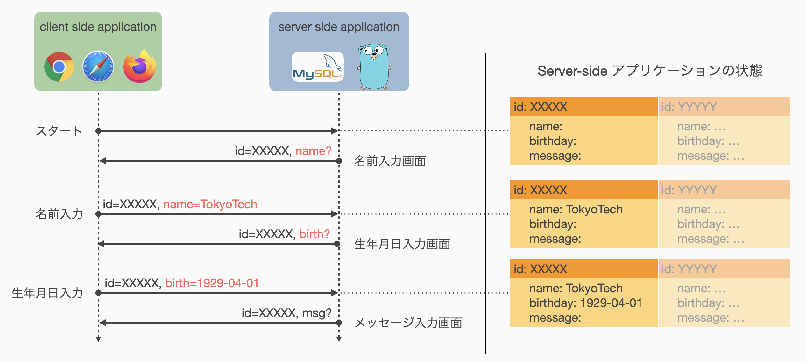
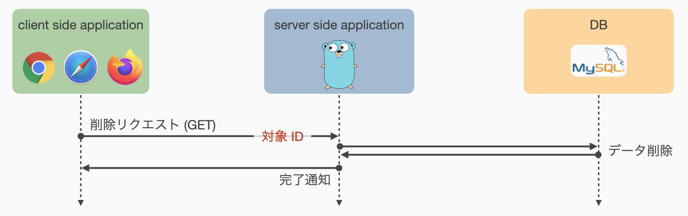

システム設計演習 - Webプログラミング -
この資料は，情報工学系 システム設計演習 Webプログラミング の演習資料です．
資料は全 10 回からなり，練習問題に取り組む時間やレポートをまとめる時間を含めて本演習全体を構成するものとします． 前半 5 回は基礎編としてWebアプリケーションの動作原理やWebアプリケーションフレームワークの使い方などを主に扱います． 後半 5 回は実践編としてWebアプリケーションフレームワークを使用した簡単なタスク管理アプリケーションの開発を扱います． 演習内容にしたがって期末レポート課題を出題しますので，各自のペースで計画的に進めてください．
練習問題が設定されている場合がありますが，必ずしも期末レポート課題に関連する内容ではなく，単に理解度を推し量るものを含みます．
開発環境など
この演習では Go言語 によるプログラム開発，Docker を用いた仮想環境上でのプログラム実行を想定しています． また，動作確認に Webブラウザ を使用します． 情報工学系演習室の端末には関連ソフトウェアがすでにインストールされていますので，すぐに開発を始めることができます．
個人所有PCなどで演習を行う場合，各自の端末に開発環境をセットアップしてもらう必要があります． OSやエディタなどについて特に指定はありませんので，各自の慣れ親しんだ環境で開発を進めてもらって構いません． Windows PC での開発を考えている方には， WSL2 の使用を推奨します．
プログラムの実行に必要な Docker は，以下を参考に各自でインストールをお願いします．
この演習では基本的に Command Line Interface (CLI) での実行を想定しているため，ターミナルエミュレータ上で docker-compose コマンドが有効であることを確認してください．
| OS | 参考サイト |
|---|---|
| OS X | Homebrew or Docker Desktop for Mac |
| Windows (+WSL) | Docker Desktop w/ WSL2 |
| Ubuntu | DD4L on Ubuntu 22.04 |
表中に掲載のない環境を愛用している方は自力解決のできる方々だと思いますので，各自で環境整備をお願いします．
基本的に Docker 上でのプログラム実行を想定しているため，Go言語のビルドツールはなくても大丈夫です．
ただし，使用するテキストエディタなどによっては go コマンドが実行できることを要求してくる場合があるため，必要に応じてインストールしておくとよいかもしれません．
インストール方法は Download and install - The Go programming language を参照してください．
Go言語の基本的な書き方や Docker によるプログラムの実行方法については，01: 演習のための準備 にて扱います．
質問対応
この注意事項は授業Webサイトに記載したものと同じです．
演習に関する質問は Slack にて随時受け付けますが，特に講義時間外については即レスを期待しないでください． 質問者本人だけでなく他の人を助けることにも繋がることも多いため，可能な限り #help チャネルを活用してオープンな場で質問をしてもらえると良いかと思います． ただし，DM 等での質問や議論を妨げるものではありません． DM 等で直接受けた質問であっても，重要な質問であると判断した場合には，匿名で #help チャネルに質問の内容と回答を掲載する場合があります．
質問時には，
- 資料のどの部分に取り組んでいるのか．
- なにが目的とする動作 (理想的な挙動 or 出てほしい結果) なのか．
- それを実現するためになにをしたのか．
- 実際にはどうなっている のか． (出力やエラーの内容など)
を明らかにしてくれると非常に助かります． 一方で，質問の意図が掴みづらい場合にはこちらから掘り下げますので，気にしすぎず気楽に質問してください．
おことわり
資料中に存在する誤り・不明瞭な説明は，すべて担当教員に責任があります． 誤りを発見された場合は，適切に修正・訂正を行いますので，ご一報ください． また，不明瞭な点や改善すべき点などについても遠慮なくご報告いただければと思います． 特にWebアプリケーション開発の経験がある学生がいれば，未経験の人がつまずきそうな箇所などを指摘してもらえると助かります． よりわかりやすい演習資料となるよう努力していきますので，ご協力のほどよろしくお願いいたします．
01: 演習のための準備
第1回は，演習を進めるにあたって必要な以下の事項について説明します．
- Go言語プロジェクト
- Dockerコンテナ上でのプログラムの実行
- 入門Go言語
Dockerなどの開発環境のインストールおよび設定は済んでいるものと仮定しています． まだの方は HOME - 開発環境など を参考に開発環境を整えてから進んでください．
Go言語プロジェクト
この演習では，扱う内容に応じて最低限のプログラムと実行環境の設定からなるプロジェクトテンプレートを配布し，資料の内容にしたがって配布したプロジェクト内のファイルを編集する形式で演習を進めます． 編集後のプロジェクトの提出などは求めません．
配布するプロジェクトテンプレートには，初期状態としてとりあえず動く程度のプログラムしか入っていません． 必要に応じて関数を定義したり，ファイルを分割したり，ディレクトリを新たに作ってファイルを移動したり，etc. といった作業が要求されます． 資料中にて新たなファイルの作成を指示する場合もありますが，基本的には各自の判断でファイル分割やディレクトリ (Go言語では特に「パッケージ」と呼びます) の切り分けなど，自由に編集して構いません．
プロジェクトの取得
今回使用するプロジェクトを以下のURLよりダウンロードしてください．
https://github.com/cs-sysdes/tutorial.go
GitHub の扱いに慣れている方は直接 clone してもらって構いません． そうでない方は，リンクからページを開き，下の画像の通り「Code」→「Download ZIP」と押すと，zip形式でプロジェクトをダウンロード可能です． ダウンロードしたzipファイルを展開したら準備完了です．

今回使用する tutorial.go は，以下のファイル群で構成されています．
- README.md
- Dockerfile
- docker-compose.yml
- go.mod
- main.go
Dockerfile および docker-compose.yml は，プログラム実行時に使用する仮想環境についての設定ファイルです． 演習内で編集することはないと思います．
go.mod は Go言語 の開発ツールである go コマンドによって参照されるプロジェクトの設定などに関するファイルです．
プロジェクト使用するコンパイラのバージョンを指定したり，依存する外部ライブラリの管理などを行うために必要なファイルです．
外部ライブラリの追加は go コマンドで実行することができるため，このファイルも直接編集する機会は少ないです．
main.go が今回の実行対象である Go言語 で書かれたプログラムです． 内容を以下に示しますが，おそらく Go言語 に触れたことがない人でも，実行すると何が起こるのか想像がつくのではないでしょうか．
package main
import "fmt"
func main() {
fmt.Println("Hello world!")
}
型の宣言方法や識別子の可視性など Go言語 特有のルールや機能も存在しますが，Go言語 はかなり C言語 に近い印象を個人的に持っています． みんなが大好きな「ポインタ」もちゃんとあります．
Dockerコンテナ上でのプログラムの実行
ここでは仮想環境上でプログラムを実行する方法を説明します． Dockerの管理する仮想環境は一般に「コンテナ」と呼ばれるため，以降では単に「コンテナ」あるいは「Dockerコンテナ」と表記します．
この演習では基本的にコマンドライン上での実行を想定しています．
たとえば資料中に$ echo "Hello world!"と書かれている場合，これはコマンドライン上で echo コマンドを "Hello world!" という文字列を引数として実行することを意味します．
先頭の "$" を入力する必要はありません．
コンテナの起動
いま ~/sysdes/tutorial.go にダウンロードしたプロジェクトが展開されていると仮定しましょう．
このパスは各自の環境で置き換えてください．
ターミナルエミュレータを起動し，以下のコマンドを打ち込むことでコンテナを起動することができます． "#" 以降はコメントなので入力する必要はありません．
$ cd ~/sysdes/tutorial.go # プロジェクトディレクトリへ移動
$ docker-compose up -d # 仮想環境の起動
初回起動には少し時間がかかりますので，気長に待ちましょう．
「docker-compose コマンドが見つからない」といったエラーが出ている場合，Docker のインストールが正常に完了していない可能性があります．
Docker のインストールが完了していることや，コマンドへパスが通っていることなどを確認してください．
Mac や Linux では自動的にパスの通っている場所へ実行ファイルを配置してくれることが多いですが，特に WSL を使用せずに Windows のコマンドプロンプトで実行する場合にはパスの設定などが別途必要になることがあります．
docker-compose は通常複数のコンテナを管理するために使用します．
ここでは Go言語 実行環境として 1 つのコンテナしか扱っていませんが，演習後半 (実践編) では実際に複数のコンテナを同時に立ち上げます．
プログラムの実行
コンテナが起動しだら実際にプログラムを動かしてみましょう．
Go言語 は C言語 や Java などと同じコンパイラ型ですが，ビルドツールである go コマンドを使うことでプログラムを直接実行することができます．
ただし，ここでは Dockerコンテナ 上で実行するため，少し長いコマンドを打つ必要があります．
go.mod が存在するディレクトリ (~/sysdes/tutorial.go) 内にて以下のコマンドを実行してください．
$ docker-compose exec app go run main.go
Hello world!
このコマンドは主に 2 つの部分からなります．
前半部分：docker-compose exec app は，"app" と名付けられたコンテナ上でプログラムを実行するためのコマンドです．
詳細は省略しますが，プロジェクトディレクトリ内の docker-compose.yml を覗くと名前を設定している記述があり，名前を変更することも可能です．
後半部分：go run main.go は，Go言語ビルドツールによって main.go ファイルを実行するためのコマンドです．
これらを組合わせることで，ローカル端末から "app" コンテナ上で main.go を実行し，その結果をローカル端末上で確認することができるようにしています．
go run main.go などとして直接実行する方が早いです．
演習後半 (実践編) において docker-compose コマンドで複数のコンテナを起動順序の制約を守りながら並行して立ち上げる必要があるので，今のうちから慣れてもらうためにあえて面倒な方法を紹介しています．
仮想環境の停止
演習が終了したら，忘れずにコンテナを停止しましょう．
起動コマンドが up だったので，停止は down です．
プロジェクトディレクトリ (~/sysdes/tutorial.go) 内で以下のコマンドを実行してください．
$ docker-compose down
停止時にも少し時間がかかる場合があります． 想環境の停止においてエラーが発生することはほとんどありませんが，たとえばプロジェクトのパスを変更 (ディレクトリの移動や名前の変更) してしまうと正常に停止できない場合があります．
以上の手順は演習を進める上で毎回使います．
忘れたらここを見直せば良いので頑張って覚える必要はないですが，たとえば $ make start で起動できるよう Makefile を設置するなど，各自で工夫をしてもよいと思います．
入門Go言語
演習で使用するGo言語について簡単に勉強しましょう．
tutorial.go では画面に "Hello world!" と出力するプログラムを扱いました． ここからは，これをベースとして色々な言語機能を説明し，プログラムを実際に変更して動かしてみることで，Go言語に入門 していきたいと思います．
すでにGo言語に慣れている人は，これ以降をスキップして 第2回 に進んでもらって構いません． お疲れさまでした．
main.go 解説
初期状態の tutorial.go/main.go は以下のようになっています．
package main
import "fmt"
func main() {
fmt.Println("Hello world!")
}
1行目 package main はパッケージ宣言と呼び，このファイルが属するパッケージを明示しています．
Go言語 ではすべてのファイルが「パッケージ」に属しており，パッケージの集合を「モジュール」と呼んでいます．
すなわち，いままでプロジェクトと呼んでいたものは，tutorial.go という名のモジュールであるということになります．
main は特別なパッケージ名で，実行基点となる main 関数が存在するファイルは必ず main パッケージに属している必要があります． また，一つのパッケージに複数の main を配置することは可能ですが非推奨となっており，今回の場合ルートディレクトリに別の main 関数を持ったファイルを配置して main パッケージであると宣言すると，ビルドツールが文句を言います． 最近流行の Rust ほどではありませんが，Go言語 もビルドツールがなかなかお節介です．
3行目 import "fmt" は，このプログラムで使用するパッケージをインポートするための宣言です．
C言語 でいうところの #include <...> 文みたいなものだと考えてください．
なお，プログラム中で使用していないパッケージを import していると，コンパイラがエラーを出します．
警告ではなくエラーです．
5行目 func main() は，C言語 における void main(void) と同等と考えて差し支えありません．
Go言語 は C言語 と同様に main という識別子をもった関数を実行基点としています．
C言語 では普通 int main(void) と書きますが，Go言語 の main関数 は戻り値を持たないため，戻り値型の宣言がありません．
6行目 fmt.Println(...) は標準出力へ文字列を出力する関数を呼び出しています．
先ほど fmt パッケージを import したのは，ここで fmt パッケージ内の Println 関数を使用するためです．
パッケージ内の関数や変数といった識別子を呼び出す場合には，このように「パッケージ名 + 識別子名」の形式で記述します．
Println 関数は，Java の System.out.println メソッドと同じものだと思ってください．
引数で与えた文字列を，改行付きで標準出力へ出力します．
以上が初期状態での main.go の内容になります． ここからは，このファイルを編集しながら代表的な言語機能を見ていきましょう．
変数と定数
いま文字列 "Hello world!" を直接 fmt.Println 関数に入力していますが，これを一旦変数に格納した上で関数に渡すよう変更してみましょう．
まず C言語 と最も異なるルールとして，Go言語 では型を後置します．
すなわち，Go言語 における変数宣言の基本的な形式は var 変数名 型名 になります．
先頭の var はこれが変数宣言であることを意味し，そのあとに変数名，変数の型が続きます．
同じ型の変数を複数宣言する場合には，var i, j, k int などのようにまとめることができます．
さらに，異なる型の変数を複数宣言する場合には，以下のように var キーワードをグループ化することもできます．
var (
i, j, k int
v string
)
これらの機能は後ほど登場する const キーワードでも同様です．
局所変数
具体的に main.go を変数を使って書き換えた例を示します．
package main
import "fmt"
func main() {
var message string = "Hello world!" // string型の変数messageを宣言し"Hello world!"を代入
fmt.Println(message)
}
ただ変数を宣言し，値を代入しているだけですので，あまり迷うことはないかと思います．
ちなみに Go言語 では C言語 と同様に // や /* */ によってコメントを記述可能です．
さて，Go言語 ではこれをもう少し効率的に書くことができます． 1 つ目の改善点として，変数の宣言と初期化 (代入) を同時に行う場合，型は初期値から推論できるので書く必要がありません． つまり以下のような書き方が可能です．
// messageの型は書かなくても初期値からstringに推論される
var message = "Hello world!"
2 つ目の改善点として，関数内や制御ブロック内などといった局所スコープに限り，以下のように書いても同じ意味になります．
// 下記は var message = "Hello world" と同等
message := "Hello world!" // = ではなく := であることに注意!!
ここまでの理解から以下のコードが合法になることがわかります．
package main
import "fmt"
func main() {
message := "Hello world!"
fmt.Println(message)
}
注意点として，:= では同じスコープ内で複数の同じ変数を束縛できません．
すなわち，以下のコードはコンパイルエラーになります．
func main() {
message := "Hello world!"
message := "Hello, Masu!" // これはmessageの再定義なのでダメ
message = "Hello, Kazuya!" // これはmessageへの再代入 (既存の変数の変更) なのでOK
}
ただし，このルールには一部例外があります． 詳細は後日，おそらく演習内で例外的な状況が出てくると思いますので，そのときに説明を加えます．
グローバル変数・定数
Go言語 では，C言語 と同様にグローバル変数を定義することができます．
ただし，:= を用いた略記法はグローバル変数では使用できないことに注意してください．
また，グローバル変数は定数としての利用を想定していることが多いかと思います．
そうした場合は，var を const に変えることで変数ではなく定数を宣言することができます．
グローバル定数を使って書いた例を以下に示します．
package main
import "fmt"
const message = "Hello world!" // 型推論は効く
func main() {
fmt.Println(message)
}
定数は関数スコープ内などでも定義できますが，用途が限定されるためかあまり見かけたことがありません．
個人的には const 指定好きなので使いますが……
関数
変数 (定数) が使えるようになったら，次は関数です．
いま main 関数の中は非常に単純ですが，コードが複雑化すると関数を分けたくなります．
Go言語 での関数の定義方法は func 関数名(引数リスト) 戻り値型 { 処理の内容 } となっています．
型は後置するルールなので，戻り値型も後ろになっています．
ここでは引数として名前を受け取り，挨拶を返す関数 hello を作成してみます．
package main
import "fmt"
func main() {
greet := hello("Masu")
fmt.Println(greet)
}
func hello(name string) string {
return fmt.Sprintf("Hello, %s!", name)
}
当然ながら引数リストでも型は後置するルールなので，name string で name という string 型の仮引数を設定しています．
C言語と同様に戻り値を返すには return キーワードを使用します．
fmt.Sprintf は C言語 の sprintf 関数 (<stdio.h>) と同じものです．
これを実行すると以下のような結果を得られるはずです．
$ docker-compose exec app go run main.go
Hello, Masu!
Go言語 の戻り値には C言語 にはない機能があります．
たとえば，C言語の printf 関数が整数値を返すのと同様に．先ほどから使用している fmt.Println 関数も戻り値を持ちます．
普段はほとんど使いませんが，fmt.Println 関数の戻り値は (int, error) であると定義されています．
Go言語 ではこのように複数の戻り値を返すことができ，至る所でこの機能を使用しています．
万が一 fmt.Println 関数の戻り値を受け取りたい場合には，以下のように書く必要があります．
i, err := fmt.Println("Hello, Kazuya!")
ただし，常に両方の戻り値が必要というわけでもないと思うので，戻り値を破棄する特別な変数名として _ (アンダースコア) が予約されています．
つまり，先ほどの例で第2戻り値のエラー情報だけ欲しい場合には，以下のように書けます．
_, err := fmt.Println("Hello, Kazuya!")
識別子の命名規則と可視性
さきほど関数宣言で hello という識別子を使いました．
また，グローバル変数を定義する際も message という識別子を使いました．
何も変なところはないように思いますが，実は意識して小文字から始まる識別子を使いました．
一方で fmt.Println 関数は，fmt はパッケージ名なので無視するとして，関数名は大文字から始まる識別子になっています．
実は Go言語 では，変数や関数の識別子名として，先頭が大文字である場合と小文字である場合を区別します． そして，これらを区別することで，パッケージ外からの識別子の可視性をコントロールしています．
具体的には，fmt パッケージ内にも先頭が小文字の識別子が存在しますが，これらの識別子を main パッケージから参照することはできません．
小文字はじまりの識別子はパッケージローカル，すなわち Java でいえば「アクセス修飾子なし」の状態であるということになります．
一方，大文字はじまりの識別子は Java でいうところの public になるため，main パッケージから fmt.Println 関数を参照することができるということです．
このルールは現在のところあまり意識する必要はありません． ですが，今後プロジェクトが大きくなってパッケージを分割していく必要が生じた際に落とし穴になる可能性があるため，ここで説明をしました． 今後も必要に応じて触れる予定でいます．
制御構造
複雑な処理を実行するために必要な機能である条件分岐と繰り返しについて説明します．
条件分岐
条件分岐には，主に if および switch を使用します．
条件分岐 1: if
if はC言語とほとんど同じですが，Go言語 では条件節に丸括弧が不要です．
// iは整数型の変数
if i % 2 == 0 {
fmt.Println("Even!")
} else {
fmt.Println("Odd!")
}
条件分岐 2: switch
次に switch ですが，通常の使い方はこちらもだいたい同じです．
// iは整数型の変数
switch i {
case 42:
fmt.Println("Answer to the Ultimate Question of Life, the Universe, and Everything")
case 57:
fmt.Println("Prime!")
default:
fmt.Println("Common number")
}
if と同じように，switch(i) { ではなく switch i { と書けます．
ただし，C言語 との違いとしてデフォルトで fall through しないようになっています．
したがって，至る所に break と書く必要がありません．
一方で break の代わりに fallthrough と書くことで，わざと fall through させることもできます．
Go言語 の switch における便利な機能として，複数のマッチ対象を一度に書く機能があります．
また，対象は整数値に限定されず，他の型でも渡すことができます．
以下に具体例を示します．
// prefecture はstring型の変数
switch prefecture {
case "Hokkaido":
return "countryside"
case "Tokyo", "Yokohama": // "Tokyo" か "Yokohama" の場合にマッチ
return "metropolis"
default:
return "unknown"
}
さらに，Go言語 の switch は複数条件を持つ if として使用することもできます．
func Collatz(n int) bool {
switch { // 対象がないがtypoではない
case n < 1:
return false
case n == 1:
return true
case n % 2 == 0:
return Collatz(n / 2)
default:
return Collatz(3 * n + 1)
}
}
複数の case 条件を満たす場合には，より上に書かれたものが優先されます．
すべての case が実行されるわけではないので注意してください．
繰り返し
繰り返しを表現するには for を使用します．
while はありません．
例として 1 から 100 までの整数を出力するプログラムを示します．
for i := 1; i <= 100; i++ {
fmt.Println(i)
}
for も C言語 のものとほとんど同じですが，if と同様に丸括弧を書きません．
ここで，繰り返し変数の定義として i := 1 を与えていますが，これは for スコープ内の局所変数なので := による型推論を含めた初期化 + 定義が可能となっています．
より便利な例を見てみます． Go言語 にも当然データ構造としての配列があるわけですが，配列のインデックスと要素を順に出力したい状況はよく発生します． そうした場合，以下のように Java の拡張for文のような書き方ができます．
animals := []string{"dog", "cat", "Tasmanian devil"}
for i, a := range animals {
fmt.Printf("%d: %s\n", i, a)
}
インデックス値が不要の場合には _ で受けて破棄することで対応できます．
Go言語に while はありませんが，for によって while と同等のことが表現できます．
for i < 10 { ... } // while(i < 10) に相当
for true { ... } // while(true) に相当 (無限ループ)
特に 2 つめの無限ループに関しては特別な記法があり，条件節を省略して
for { ... } // for true { ... } と同等
と書くだけで十分です．
練習問題
ここまでの理解度を測るため，FizzBuzz問題を解いてみましょう．
手順として以下の要件を満たす関数を順に作成し，最後に組合せることで1〜30までの数値についてFizzBuzzを表示するプログラムを作成してください．
- 3の倍数 を判定する関数
- 入力：整数値 (
int) - 出力：入力が 3の倍数 であれば
true，それ以外はfalse
- 入力：整数値 (
- 5の倍数 を判定する関数
- 入力：整数値 (
int) - 出力：入力が 5の倍数 であれば
true，それ以外はfalse
- 入力：整数値 (
- 15の倍数 を判定する関数
- 入力：整数値 (
int) - 出力：入力が 15の倍数 であれば
true，それ以外はfalse
- 入力：整数値 (
- 出力すべき文字列を返す関数
- 入力：整数値 (
int) - 出力：入力が 3の倍数 であるが 5の倍数 でなければ
"Fizz"を，3の倍数 でないが 5の倍数 であれば"Buzz"を，15の倍数 であれば"FizzBuzz"を，それ以外は入力値を文字列化して返す
- 入力：整数値 (
fmt.Sprintf 関数か，strconv パッケージ名の strconv.Iota を使用するとよい．
ポインタ
Go言語 にもポインタが存在し，役割や使い方などは C言語 のポインタとほぼ同じです． ただし，Go言語 は GC (Garbage Collection) 機能を持つ言語なので，C言語 のポインタに比べれば制約も緩く，やや扱いやすいものになっています．
Go言語 のポインタ変数は，C言語 と同様に型名にアスタリスクを付けることで宣言が可能です．
ただし，型宣言の方法が異なったように，ポインタ変数の型宣言もまた C言語 とは異なり，たとえば整数型ポインタであれば *int のように型名の前にアスタリスクがつきます．
また C言語 と同様に，通常の変数に & (アンパサンド) を付けることで，その変数へのポインタを取得できます． 逆にポインタから値を参照したいときも，C言語 と同様にアスタリスクによるデリファレンスが可能です．
これまでの関係を整理すると，以下のようになります．
var i int = 0
var p *int = &i // 変数iのポインタを取得
var j int = *p // ポインタ変数pを経由して変数iの値を取得
とりあえずポインタ変数を確保して，後から値を代入したい場合には組み込み関数 new を使うと良いです．
var p *int
p = new(*int)
*p = 1
new を使うため誤解が生じるかもしれませんが，free はありません．
ポインタ変数 p は，不要になれば GC によって勝手に解放されます．
C言語 では無効なポインタ値として NULL が定義されていましたが，Go言語 では nil になります．
Go言語 では，未初期化のポインタ変数は nil を指すことが言語仕様上決まっています．
また，GC がある言語であるため，以下のコードが Go言語 では合法になります．
func NewInt() *int {
p := 1
return &p
}
var p *int
p = NewInt()
このコードは関数スタックに積まれた局所変数のポインタを返しているので，C言語では合法ではありません． 一方 Go言語 では，これは特にエラーもなく動きます． 実際，Go言語 のコードでは局所変数のポインタどころか即値のポインタすら関数外へ return するようなコードがよく見られます． 代表的な例としては，次のセクションで説明する構造体を関数ローカルで定義し，そのまま return するコードです．
type Person struct {
Name string
Age int
}
func NewPerson(name string, age int) *Person {
return &Person{ name, age }
}
C言語 としてみるとなんだか不思議なコードですが，Go言語 では割と普通に見かけます．
練習問題
次のコードがどういう出力になるか考え，実装して確かめてみよ．
package main
import "fmt"
func IncrementV(v int) {
v = v + 1
}
func IncrementP(p *int) {
*p = *p + 1
}
func main() {
v := 0
IncrementV(v)
fmt.Printf("v = %d\n", v)
p := &v
IncrementP(p)
fmt.Printf("v = %d\n", v)
}
配列とスライス
同じ型の複数の値をまとめて扱うためのデータ構造として配列とスライスが存在します． Go言語 において通常「配列」と呼ぶものは「固定長配列」を意味しており，これは決められた長さを持つデータ構造です． 一方で，「スライス」は一般に「可変長配列」と呼ばれるものであり，こちらはその名の通り長さを変えることができます．
配列
配列 (固定長配列) 定義の基本形は var 変数名 [長さ]型 になります．
また，初期値を直接与える場合には，変数名 := [...]型 { 初期値のリスト } というように長さを推論させることができます．
したがって，配列の型としての記法は [長さ]型 であり，この点からも長さを指定する必要があることがわかります．
var 変数名 [長さ]型 の形式で定義された配列は，指定された長さの分だけ型ごとに決められたデフォルト値ですべての要素が初期化されます．
すなわち，以下の例において a1 と a2 はすべての要素が等しい 2 つの異なる配列ということになります．
var a1 [5]int
a2 := [...]int{0, 0, 0, 0, 0}
配列中の特定の要素は，C言語と同様に 変数名[インデックス値] でアクセス可能です．
他の多くの言語と同様に，0-based indexing になっています．
a := [...]int{1, 2, 3, 4, 5}
fmt.Println(a[0]) //=> 1
Go言語はすべての変数が値として扱われるため，配列もいわゆる値型と呼ばれるような挙動をします．
すなわち，以下のコードにおいて a2 は a1 のコピーになり，両変数は別の領域にあるデータを指します．
a1 := [...]int {1, 2, 3, 4} // 新しい長さ4の配列
a2 := a1 // a1と同じ内容の新しい長さ4の配列
スライス
スライス (可変長配列) 定義の基本形は var 変数名 []型 となり，配列定義から長さの指定が消えた形となっています．
初期値を直接与える場合も長さの指定がないため，変数名 := []型 { 初期値のリスト } という表現になります．
スライスの型としての記法は []型 です．
var 変数名 []型 の形式で定義されたスライスは，サイズが 0 になります．
つまり，なにも入っていない状態です．
スライスも配列と同様に 変数名[インデックス] の形式で各要素にアクセスできますが，サイズ 0 のスライスにアクセスした場合，どのようなインデックス値に対しても範囲外アクセスによりプログラムが異常終了します．
var 変数名 []型 の形式で定義したスライスは，組み込み関数 make によって指定したサイズのスライスとして確保しなおすことができます．
組み込み関数 make は引数として型，サイズ，キャパシティの 3 つをとりますが，キャパシティは省略可能です．
キャパシティを省略した場合，おそらくサイズに依存して適切なキャパシティが自動設定されます．
var array []int // これはサイズ0の整数型スライス
array = make([]int, 5) // ここでサイズ5の整数型スライスになる (キャパシティは自動設定)
スライスも値ではあるのですが，いわゆる参照型のような挙動をします．
スライスはメモリ上での先頭アドレス・サイズ・キャパシティを持っているようなデータ構造なので，スライスのコピーはこれらの値のコピーを意味します．
つまり，以下のコードにおいて a2 は a1 の持つ先頭アドレス・サイズ・キャパシティの値をコピーしたものであるため，指している先頭アドレスは同じとなり，実質的に同じものを指す変数となります．
a1 := []int {1, 2, 3, 4} // a1が持つのは，先頭要素のアドレス，サイズ，キャパシティ
a2 := a1 // a2が持つのは，a1の先頭要素のアドレス，サイズ，キャパシティ
スライスは可変長であるため，組み込み関数 append を使って要素を追加し，スライスの長さを変えることができます．
append 関数は追加する要素を複数とることができ，追加後のスライスを返します．
a1 := []int{1, 2, 3, 4}
a1 = append(a1, 5, 6, 7) //=> a1 == [1, 2, 3, 4, 5, 6, 7]
ここで注意すべきこととして，追加前の a1 が指していた先頭要素のアドレスと追加後の a1 が指す先頭要素のアドレスが一致する保証はありません．
要素を追加した結果として a1 のキャパシティを超えてしまう場合，新たなキャパシティで a1 を再確保することでスライスの伸長を行うためです．
すなわち，append 関数はメモリアロケーションを発生させる可能性があり，場合によってはパフォーマンスに影響が出ることもあります．
追加には append 関数がある一方で，削除する関数はありません．
Go言語 では Python のように部分スライスを取得できるので削除関数を自作することはできます．
構造体
複数の型をまとめた複合型を作りたい場合，Go言語 では構造体を使用します． C言語 の構造体と同じものです．
構造体を定義するには struct キーワードを使用します．
たとえば，文字列型の名前と整数型の年齢をフィールドに持つ構造体の定義は以下のようになります．
struct {
Name string
Age int
}
C言語 では構造体を定義する際に構造体名を与えないといけませんでしたが，Go言語 では不要です． これはそのまま型として機能するので，次のような変数宣言が可能です．
var person struct {
Name string
Age int
}
構造体変数は以下のように，波括弧を用いてそれぞれのフィールドに代入する値を指定することで初期化できます．
var person struct {
Name string
Age int
}{
"Tech-chan",
5, // 最後のフィールド値のあとに改行を入れる場合，ここのカンマは必要
}
また，フィールド名を指定して初期化することもできます．
var person struct {
Name string
Age int
}{
Name: "Tech-chan",
Age: 5, // 最後のフィールド値のあとに改行を入れる場合，ここのカンマは必要
}
フィールド名を指定した初期化方法は，フィールドの宣言順序に依存せずに構造体を初期化したい場合や，一部のフィールドにだけ値を与えたい場合などに有効です．
構造体変数のフィールドへは，Java のインスタンス変数などと同様に . (ドット) でアクセスできます．
fmt.Println(person.Name) //=> Tech-chan
構造体変数がポインタの場合，C言語 ではアロー演算子 -> を使用する必要がありましたが，Go言語 では . (ドット) のままで大丈夫です．
p := &person
fmt.Println(p.Name) //=> Tech-chan
さて，ここで Go言語 の識別子の表記と可視性の規則を思い出してみましょう． 小文字はじまりはパッケージローカルで，大文字はじまりは外部パッケージからも参照可能というルールでした． ここまで何気なくフィールド名を大文字で書いてきましたが，この識別子の命名規則はフィールド名にも適用されます． すなわち，フィールド名を小文字はじまりで設定した場合，外部パッケージでは構造体変数のフィールドへアクセスできなってしまいます． この機能を上手に使うとカプセル化を実現できますが，特に構造体のフィール変数については，慣れないうちは間違い防止のためにすべて大文字はじまりで書いておく方が安全かもしれません．
型の別名とメソッド
構造体の定義方法はわかりましたが，同じ構造体型を複数の場所で何度も使用する場合に，毎回すべてのフィールド定義を書くのは面倒です． Go言語 には型に別名をつける機能があるので，これを使って少し楽をしましょう．
型へ別名をつけるためには type 別名 元の型 という構文を使用します．
C言語 の typedef のようなものだと思ってください．
type キーワードを使って先ほど定義した構造体に Person という型名をつけてみます．
type Person struct {
Name string
Age int
}
person := &Person{
Name: "Tech-chan",
Age: 5,
}
だいぶ見慣れた表現になったのではないでしょうか．
type キーワードにはもう一つ特殊な機能があります．
同一パッケージ内で type キーワードによって別名を付けた型には，メソッドと呼ばれる特殊な形式の関数を紐づけることができるようになります．
Go言語 には Java のような class はありませんが，この機能を使うことでオブジェクト指向的な機能をを実現することができます．
たとえば，構造体 Person に文字列へ変換するメソッド ToString，および，年齢を 1 歳増やすメソッド GetOlder を実装してみます．
type Person {
Name string
Age int
}
func (p Person) ToString() string {
return fmt.Sprintf("Name: %s, Age: %d", p.Name, p.Age)
}
func (p *Person) GetOlder() {
p.Age = p.Age + 1
}
メソッドはこのように func (変数名 型) 関数名(引数リスト) 戻り値型 {} の形式で定義することができます．
関数名の前に配置する変数を一般にレシーバといいます．
レシーバには値型あるいはポインタ型が設定でき，レシーバの内容を変更したい場合にはポインタ型を使用する必要があります．
メソッドの呼び出しは Java などと同様に以下のように行うことができます．
person := Person{
Name: "Tech-chan",
Age: 5,
}
fmt.Println(person.ToString()) //=> Name: Tech-chan, Age: 5
person.GetOlder()
fmt.Println(person.ToString()) //=> Name: Tech-chan, Age: 6
フィールドへのアクセスと同様に，レシーバをポインタ型で定義した場合であっても，そのままドットでアクセスすることができます．便利．
さきほど type キーワードは型に別名をつけることができると書きました．
その機能を使用して構造体に名前をつけたわけですが，考えてみれば構造体以外の型でも別名はつけられます．
さらに別名をつけた型には (同じパッケージ内において) メソッドを定義できるというわけです．
つまり，これができます．
type MyInt int
func (i MyInt) ToString() string {
return fmt.Sprintf("%d", i)
}
fmt.Println(MyInt(5).ToString()) //=> 5
ちなみに，7行目において 5.ToString() と書くことはできません．
きちんと MyInt 型に変換してからメソッドを呼ぶ必要があります．
これくらいなら普通に int を引数とする関数を定義する方が良いですが，この機能は何かに使えるかもしれませんね．
まとめ
駆け足で非常に浅い Go言語 の入門書ですが，最低限必要になりそうな機能は網羅できたと思います． Go言語 は慣れると割と書きやすい言語ですが，慣れるまでは変な機能も多く，コンパイラの文句も多いので苦労するかと思います． これ以降の資料でも可能な限り補足はしていくつもりですが，必要に応じてこのページを見返したり，教員へ質問したり，あるいは自身で調べたりなどによって対応してください．
今回の内容は以上になります． お疲れさまでした．
02: HTTP通信とルーティング
今回から本格的にWebアプリケーションを構築するための基礎技術に触れていきます．
第2回は，特に以下の内容について扱います．
- Webアプリケーションの基本的な動作
- Web通信の決まりごと (Hypertext Transfer Protocol; HTTP)
- アクセス先の制御 (ルーティング)
また今回の資料は，前回配布したプロジェクトとは異なる新たなプロジェクトをベースとして演習を進めます． 以下のリンクより新しいプロジェクト httpserver.go をダウンロードし，演習が進められるよう展開・配置してください．
https://github.com/cs-sysdes/httpserver.go
ダウンロード方法は 前回の資料 を参照してください．
Webアプリケーションの基本的な動作
Web技術を基盤としたアプリケーションを総称して「Webアプリケーション」と呼びます． Webアプリケーションは，一般に Client-Server model と呼ばれるアプリケーション形態をとり，Client側アプリケーション (Client-side application) と Server側アプリケーション (Server-side application) という2つのアプリケーションによって構成されます． 基本動作として Client からの要求 (リクエスト)に対して Server が応答 (レスポンス)を返す形式で目的の処理を実行します．

Client-side アプリケーションには Webブラウザ を採用する場合が多いですが，場合によって専用のアプリケーションを提供する場合もあります． たとえば，Twitter社は自社のサービスとして Webブラウザ上で Tweet を閲覧可能な Twitter Web App を提供していますが，スマホ用にネイティブアプリケーションとして Twitter for Android や Twitter for iPhone などを提供しています． また，サードパーティ製アプリケーションまで含めると，PC用あるいはタブレット用アプリケーションなど，さまざまなものが提供されています． 本演習では Client-side アプリケーションには Webブラウザ を採用するため，各自で Client-side アプリケーションを構築してもらう必要はありません．
Server-side アプリケーションは Client-side アプリケーションからのリクエストをもとに，必要に応じて内部状態の更新などを行い，Client-side アプリケーションにレスポンスを返します． アプリケーションの目的に応じてデータベースや認証システムなど，他の外部サービスと連携して処理を行う場合もあります． 本演習で主に扱うのは，こちらの Server-side アプリケーションになります．
Server-side アプリケーションの実行
今回配布するプロジェクトは，Server-side アプリケーションとして最低限の通信機能と動作ログを標準出力へ書き出す機能のみをもつプログラムになります． 本ページの以降の説明では，このプログラムを編集し，Webアプリケーションの動作について学びます．
前回と同様に ~/sysdes/httpserver.go にダウンロードしたプロジェクトが展開されていると仮定します．
このパスは各自の環境で置き換えてください．
ターミナルエミュレータを起動し，Dockerコンテナを起動します．
$ cd ~/sysdes/httpserver.go
$ docker-compose up -d
プログラムを起動し，2行目ようなログが表示されることを確認してください．
$ docker-compose exec app go run main.go
2022/10/08 03:30:00 Listen: [::]:8000
冒頭のタイムスタンプや [::] の部分は実行タイミングや環境によって異なる場合があります．
このプログラムは Server-side アプリケーションなので，起動すると Client-side アプリケーションからの接続を待機します． したがって，なにか処理をさせるためには，Client-side アプリケーションからリクエストを送信する必要があります． 先ほど述べた通り，本演習では Client-side アプリケーションとしてWebブラウザを使用することとしているので，ChromeなどのWebブラウザからリクエストを送信してみましょう．
Webブラウザを開き，URL欄に localhost:8000 あるいは 127.0.0.1:8000 と打ち込んでエンターを押してみましょう．
プログラム側のログは以下のような状態となるはずです．
$ docker-compose exec app go run main.go
2022/10/08 03:30:00 Listen: [::]:8000
2022/10/08 03:35:31 Connected by 172.19.0.1.41888
2022/10/08 03:35:31 Connected by 172.19.0.1.41892
2022/10/08 03:35:32 Connected by 172.19.0.1.41896
先ほどと同様に，冒頭のタイムスタンプや 172.19.0.1:41888 の部分，出力されるログの数は実行タイミングや環境によって異なります．
これらのログは，Client-side アプリケーションからのリクエストを受信したことを意味します． この例のように，1 度しかアクセスしていないのに複数のログが出る場合がありますが，使用するWebブラウザによってこの辺の挙動は変わりますので，いまはあまり気にしなくて良いです．
プログラムの方ではリクエストを受け取ったことをログから確認できました． 一方で，Webブラウザの方はどうなっているでしょうか．
おそらく，通常の動作だと「ページが動作していない」などのエラーが表示されていると思います． たとえば，教員の端末では以下のような表示になっています．

現段階では，これは正常な動作結果ですので，安心してください．
このエラー画面に代えて，Webブラウザ上に ”Hello world" と表示することを次の目標とします．
Server-side アプリケーションの停止
具体的なプログラムの開発に移る前に，プログラムの停止方法を説明します．
今回以降において実行する Server-side アプリケーションは，基本的に Client-side からのリクエストを待ち受け，リクエストに対してレスポンスを返す動作を繰り返し行うプログラムになります． したがって，初期状態では停止する方法を実装していません． 停止できなければプログラムを変更して再起動することもできないので，どうにかして停止する必要があります．
停止方法は簡単で，ターミナルエミュレータ上で強制停止シグナルを送信することでプログラムを強制的に落とします．
強制停止シグナルを送信するには，プログラムを実行しているターミナルエミュレータ上で，Ctrl-c を入力します．
すなわち，キーボード上の Ctrl ボタンとアルファベットの c を同時押しすることで，プログラムを停止することができます．
httpserver.go/main.go 概観
ここで，どうやらうまく動いていないらしいプログラムの中身を簡単に解説します． スクロールしながら資料を追うのは難しいと思うので，各自の手元で main.go を開きながら進めると良いかと思います．
main.go には以下のように Server-side アプリケーションが実装されています．
httpserver.go/main.go
package main
import (
"fmt"
"log"
"net" // standard network package
)
func main() {
// config
port := 8000
protocol := "tcp"
// resolve TCP address
addr, err := net.ResolveTCPAddr(protocol, fmt.Sprintf(":%d", port))
if err != nil {
log.Fatalln(err)
}
// get TCP socket
socket, err := net.ListenTCP(protocol, addr)
if err != nil {
log.Fatalln(err)
}
log.Println("Listen: ", socket.Addr().String())
// keep listening
for {
// wait for connection
conn, err := socket.Accept()
if err != nil {
log.Println(err)
continue
}
log.Println("Connected by ", conn.RemoteAddr().String())
// yield connection to concurrent process
go handleConnection(conn)
}
}
func handleConnection(conn net.Conn) {
// close connection when this function ends
defer conn.Close()
// write response
conn.Write([]byte("Hello world."))
}
前回触れなかった機能として，3--7行目のように，Go言語の import 文は変数宣言などと同じように複数のパッケージを丸括弧でグループ化して一括で宣言することができます．
9--40行目の main 関数では，Web通信用にソケットを開き (15, 21行目)，外部からの接続を待機しています (28--39行目)．
このプログラムでは，30行目で受け取った外部からの接続 conn を，38行目で handleConnection に渡し，具体的なリクエストおよびレスポンスの処理は handleConnection 関数内で行うよう設計しています．
したがって，これから handleConnection 関数を適切に実装することで，正しく応答する Server-side アプリケーションを開発していきます．
プログラム全体を見渡してみると，以下のような頻出する表現があることに気付きます．
if err != nil {
... // 何かしらの処理
}
これは Go言語 を書く上でおそらく一番よく使うであろうエラーハンドリングを行う記述パターンになります．
たとえば15行目では，与えられたポート番号 (port := 8000) から通信ソケットのアドレスを取得していますが，与えられた文字列が正しいフォーマットではない場合などに，net.ResolveTCPAddr 関数はエラーになります．
Go言語には Java の try-catch のような言語機能がないため，エラーの有無は一般に関数の戻り値として通知されます．
エラーが発生した場合，net.ResolveTCPAddr 関数は第2戻り値としてエラーを伝達するため，第2戻り値を受ける err が nil ではないとき，それはエラーが発生していることを示します．
httpserver.go/main.go (15--18行目 抜粋)
addr, err := net.ResolveTCPAddr(protocol, fmt.Sprintf(":%d", port)) // ここでエラーが発生した場合
if err != nil { // ここで err != nil となり
... // ここに記述された処理が実行される
}
このように，Go言語では処理が失敗する可能性がある関数はエラーの有無を表す error 型の戻り値を返すのが一般的です．
error 型の戻り値は，エラーがない，すなわち関数の処理が正常に終了した場合には nil になります．
そうでない場合，すなわち，関数の処理に失敗した場合には，エラー情報を含む error 型の値になります．
したがって，error 型の戻り値の nil 判定を行って，エラーの有無を調べるのが一種の記述パターンになっています．
ところで，前回の資料中で，通常 := による変数定義は複数回できないが例外もあるという話をしたかと思います．
今回の err の定義がその例外で，たとえば main 関数の中では，15行目と21行目に同じスコープ内で複数回 err を定義しているように見えます．
これについては，この書き方を許容しないと err のように使い回される可能性がある変数を最初に var err error などと定義しなくてはならず不便なので，例外として許されています．
注意すべきは，err の他に別の新たな変数も同時に定義されているという点で，Go言語 ではこの場合に限り複数回同じ変数を定義しても良いということになっています．
つまり，以下のコードは err 以外に新たな変数が定義されていないので，コンパイルエラーになります．
func f() {
err := ThisCanReturnError()
err := ThisCanAlsoReturnError()
}
こういうケースでは，以下のように局所スコープを利用すると良いでしょう．
if err := ThisCanReturnError(); err != nil {
...
}
少し話が逸れましたが，最後に38行目の handleConnection 関数を呼び出す記述について見てみます．
この行では関数呼び出しとして通常通り handleConnection(conn) とは書かずに，冒頭に go キーワードを付与して go handleConnection(conn) として関数呼び出しを行っています．
この記述は Go言語 特有のもので，handleConnection 関数を goroutine という機能を使用して並行実行するための記述法です．
すなわち，handleConnection 関数は main 関数の実行とは独立して並行的に処理され，main 関数は handleConnection 関数の結果を待たずに次の処理へとプログラムの実行を進めます．
したがって，handleConnection 関数の実行によって main 関数の実行が妨げられることが (普通は) ないので，main 関数は次々と外部からの接続受けて handleConnection へ渡すといった動作を絶え間なく行うことができます．
fork を用いたり，Java であれば Thread を使って書かなくてはいけないプログラムの並行実行を，go キーワードを付与した関数呼び出しという形で簡単に実行できるようになっています．
goroutine は面白い機能ですが，この演習において理解すべき言語機能というわけではないですし，かなり奥深い内容になってしまうため，詳細な説明は省略します．
44行目の defer キーワードも Go言語 の面白い機能の一つで，defer キーワードを付けて記述された関数呼び出しは，スコープを抜ける際に実行されるようになります．
要するに関数呼び出しの予約機能みたいなものです．
conn 変数は外部との接続を表す変数であり，Java でファイル操作を行った時と同様に，使い終わったら Close してやる必要があります．
関数の最後に conn.Close() と記述しても同じことですが，できれば変数宣言の近くに Close 指定がある方がプログラムの見通しが良いため，defer を使って事前予約すると良いでしょう．
Go言語 の機能に関する説明もしたため長くなりましたが，このプログラムの一番重要な部分として，47行目において conn にバイト列を書き込んでいるのが確認できます．
ここも Java でファイル操作を行った時と同様に，Write 関数によって接続元，すなわち Client-side アプリケーションにバイト列で応答を返すことができます．
ただし，さきほど動かしてみてわかった通り，Webブラウザには "Hello world." などとは表示されませんでした．
この原理について以降で説明していきます．
Web通信の決まりごと (Hypertext Transfer Protocol; HTTP)
Webアプリケーションは Client-side アプリケーションからの リクエスト (Request) に対し，Server-side アプリケーションが レスポンス (Response) を返す形で成り立っています． このとき，リクエストおよびレスポンスにはそれぞれ決められた形式 (フォーマット) が存在し，こうした形式などを定めたWeb通信における約束事 (プロトコル) を Hypertext Transfer Protocol (HTTP) と呼びます． HTTP は TCP (Transmission Control Protocol) 上で定められたプロトコルであり，TCP/IPモデルでは第4層「アプリケーション層」，OSI参照モデルでは第7層「アプリケーション層」に位置します．
HTTP は本来 HTML や XML といったWeb通信においてやり取りされる Hypertext と呼ばれるデータ形式を扱うためのプロトコルです． しかしながら，現実的には画像データや音声データ，映像データなど，Web上で利用される様々な形式のデータ送受信に使用されています．
HTTP は通信技術の向上とともに新たなバージョンがいくつか出されています． 代表的なものとして HTTP/1.1，HTTP/2 などがあり，最近では HTTP/3 が正式に標準化されました (2022年6月6日)． 長きにわたって HTTP/1.1 が最も使用率の高いプロトコルでしたが，近年 HTTP2 の使用率が 50% を超えたらしいです (2021年1月)．
よくWebサイトなどのURLの先頭についている http: というのは，HTTPに従った通信であることを明示するものです．
最近では https: とする方が一般的となっていますが，これは HTTP Secure と呼ばれる暗号化された通信経路上で HTTP 通信を行うより安全なプロトコルを表すものです．
HTTP では，リクエストおよびレスポンスそれぞれについて特定の形式に則って通信を行うよう定めています． それぞれを一般に HTTPリクエスト および HTTPレスポンス と呼びます． 配布したプログラムがうまく動かなかったのは，どうやらこの辺が原因ではないかと推測できます．
HTTPリクエスト
HTTPリクエストは，Client-side アプリケーションから Server-side アプリケーションへ送信するリクエストの形式を定めます． 通常は Webブラウザ などが自動的に生成するため，自分で記述する必要はありません． ただし，専用の Client-side アプリケーションを開発し使用する場合には，サーバへの通信がこの形式に従うよう自身で実装する必要がある場合もあります．
代表的なHTTPリクエストの例を示します．
GET /index.html HTTP/1.1
HOST: 127.0.0.1
Connection: keep-alive
POST /login HTTP/1.1
HOST: 127.0.0.1
Accept-Language: en-US,en;q=0.5
Accept-Encoding: gzip, deflate
Connection: keep-alive
Content: multipart/form-data
Content-Length: 38
user=titech&passwd=extremelysafepasswd
これらの形式を統一的に記述すると以下のようになります．
<METHOD> <PATH> <VERSION>
<HTTP_HEADERS>
<BODY>
1行目の <METHOD> <PATH> <VERSION> は，リクエストの種類，リクエスト先，および使用する HTTPのバージョン を指定します．
<METHOD> の部分は特に リクエストメソッド と呼ばれ，GET や POST の他に，PUT，DELETE，UPDATE などいくつかの種類が定義されています．
<PATH> の部分はリクエストを送信する対象であるリソースを指定します．
<VERSION> 部分は主に HTTP/1.1 あるいは HTTP/2 である場合が多く，バージョンによって使用できる機能に若干の違いがあるため，ここの指定によって特定の機能が有効か無効かを確認します．
<METHOD>，<PATH>，<VERSION> はスペース区切りで識別されます．
したがって，それぞれの項目はスペースを含まない文字列になります．
2行目の <HTTP_HEADERS> はHTTP/1.1以降で有効になった機能であり，サーバ側へリクエストに関するメタ情報を送る役割を持ちます．
形式として，1行に1つの「key」と「value」のペアを記述でき，<key>: <value> のようにコロン区切りで記述します．
ここは複数行にわたってメタ情報を載せることができ，以下の通り役割によって分類されたいくつかのヘッダ情報を組合せて記述されることが多くなっています．
- Request headers
- リクエストに直接関わる情報
- HOST や User-Agent といった key が該当する
- General headers
- 通信設定などの情報
- Representation headers
<BODY>の形式などに関わる情報
<HTTP_HEADERS> と <BODY> の間の空行は必須です．
この空行が存在することで，リクエスト中のどこからが <BODY> であるかを判断します．
<BODY> はリクエストとしてサーバへ送信される情報そのものを載せる区画になります．
リクエストメソッドが GET である場合には一般に <BODY> は空，すなわちなにも記述されずに送られることが多いですが，もちろん GET リクエストにも <BODY> を載せることはできます．
また，<BODY> の長さ (バイト長) がわからなければ Server-side アプリケーションでどこまで読むべきかを判定できない場合があるため，<REQUEST_HEADERS> 上に Content-Length を key とする長さ情報を付与して送るのが一般的です．
Content-Length に設定される値は <BODY> のbyte長であり見かけの文字数とは必ずしも一致しないことに注意が必要です．
特に日本語などのマルチバイト文字を扱う場合，1文字を複数バイトで表現するため，見かけの文字数とbyte長は一般に一致しません．
練習問題 2-1
実際にWebブラウザから送られてくるHTTPリクエストを観察してみましょう．
httpserver.go/main.go 内の handleConnection 関数を以下のように編集した上で，プログラムを実行してください．
Webブラウザからのアクセスに対してどのようなログが表示されるか観察し，Webブラウザがたしかに形式的に正しいHTTPリクエストを送信していることを確かめてください．
func handleConnection(conn net.Conn) {
// close connection when this function ends
defer conn.Close()
buf := make([]byte, 1024)
conn.Read(buf)
log.Printf("Request\n----------\n%s\n----------", string(buf))
// write response
conn.Write([]byte("Hello world."))
}
このプログラムは，buf := make([]byte, 1024) にてリクエストを読み込むための領域を1024バイト分だけ確保し，conn.Read(buf) によってリクエスト全体を buf へ読み込んでいます．
net.Conn.Read メソッドは本来戻り値として読み込んだ byte 長とエラー情報を返しますが，ここでは特に使用しないため無視しています．
log.Printf 関数によってリクエストの内容を整形してログとして出力しますが，buf は []byte 型の変数であるため string(buf) として文字列へ変換して渡しています．
なお，今回の例ではおそらく1024バイトもあれば足りるであろうと考えて読み込み処理について少し手を抜いていますが，本来はより長いリクエストにも対応できるよう工夫する必要があります．
HTTPレスポンス
HTTPレスポンスは，Server-side アプリケーションから Client-side アプリケーションへ送信するレスポンスの形式を定めます． ここまで来たらお気づきだと思いますが，配布したプログラムはHTTPレスポンスとして定められた形式に従った応答を返していないため，Webブラウザ上にて何も表示されない状態となっています．
HTTPレスポンスは以下の形式をとります．
<VERSION> <STATUS_CODE> <REASON_PHRASE>
<HTTP_HEADERS>
<BODY>
1行目の <VERSION> <STATUS_CODE> <REASON_PHRASE> は Status line と呼ばれ，リクエストに対する処理の状態 (処理の成功・失敗など) を Client-side アプリケーションへ通知します．
<VERSION> はHTTPリクエストと同様に使用するプロトコルのバージョンを宣言します．
<STATUS_CODE> および <REASON_PHRASE> には，リクエスト処理の状態に応じて予め定義された数値と文字列のペアを書き込みます．
よく見かける例としては，200 OK や 404 Not Found などが挙げられます．
HTTPリクエストの1行目と同様に，<VERSION>，<STATUS_CODE>，<REASON_PHRASE> はスペース区切りで識別され，<VERSION> はスペースを含まない文字列，<STATUS_CODE> は3桁の整数値で定義されます．
<REASON_PHRASE> については，末尾であり解釈時に曖昧性をもたないため，空白を含むことを許容した文字列とされています．
有効な <STATUS_CODE> と <REASON_PHRASE> の組合せについては，RFC7231 に定義されています．
<HTTP_HEADRS> および <BODY> については，HTTPリクエストと同様です．
また，HTTPリクエストと同様に <HTTP_HEADERS> と <BODY> の間の空行は必須です．
Webブラウザでは一般に <BODY> の部分が画面上に表示されます．
HTTPリクエストの形式がわかったところで，配布したプログラムを修正してWebブラウザ上に "Hello world." を表示できるようにしてみましょう． この項目は以下の通り練習問題とします．
練習問題 2-2
配布したプロジェクト httpserver.go について，適切なHTTPレスポンスを返すようプログラムを修正し，Webブラウザ上に "Hello world." の文字列を表示できるようにします． なお，この練習問題は以下のヒントを参考に各自で解いてみましょう．
- HTTPレスポンスは
net.Conn.Writeメソッドを使用することで，バイト列として Client-side アプリケーションへ書き出すことができる．具体的には，配布プログラム中のhandleConnection関数内に記述されたconn.Writeのメソッド呼び出しを真似すると良い． - HTTPレスポンスの
<HTTP_HEADERS>として<BODY>の長さを指定すること．このとき Go言語 において，[]byte型の長さ (byte長) は Python と同様に組み込み関数lenによって取得できる．
アクセス先の制御 (ルーティング)
多くのWebアプリケーションは，HTTPリクエストの内容に応じて様々な処理を行います． こうしたリクエストの内容に応じた処理の分岐を一般に ルーティング (Routing) と呼びます．
ルーティングはWebアプリケーションの使いやすさに影響を与えるのはもちろんとして，開発にも影響を及ぼします． 適切なルーティングが為されていない場合，アプリケーションが実行すべき処理の流れが追いづらく，使う側および作る側の双方にとって嬉しくない状態となってしまいます．
通常のルーティングでは，HTTPリクエストの持つアクセスメソッド <METHOD> とアクセスパス <PATH> の組合せに基づいて処理を分岐します．
すなわち，たとえば / に対する GETリクエスト と / に対する POSTリクエストとでは別の処理を実行するなど，同じパスでもメソッドの違いによって処理を変えることが可能です．
ルーティングについては，単純にHTTPリクエスト中の <METHOD> と <PATH> を確認し，条件分岐によって処理を変えているだけと考えることができます．
したがって，ここでは実際に以下の練習問題に取り組んでもらい，ルーティングの理解を深めるとともに Go言語 により一層慣れるための機会にしてもらえればと思います．
練習問題 2-3
以下の仕様を満たすようルーティングを実装し，動作確認をしてください． なお，現在までの内容ではWebブラウザから送信されるリクエストのメソッドは基本的に GET になってしまうため，ここではメソッドの違いによるルーティングは考慮しなくてよいものとします．
- Webブラウザから
localhost:8000/helloにアクセスした場合，"Hello world." が画面に表示される． - Webブラウザから
localhost:8000/byeにアクセスした場合，"Good bye." が画面に表示される． - Webブラウザから
localhost:8000/hello.jpにアクセスした場合，日本語で "こんにちは" と表示される． - Webブラウザから上記以外のリソースにアクセスした場合，ページが見つからない旨を Client-side に通知する．
なお，この練習問題も以下のヒントをもとに各自で解いてみましょう．
- 文字列の分割は
stringsパッケージ内のstrings.Split関数にて行うことができる．この関数は，第1引数として文字列，第2引数として区切り文字を受け取り，文字列のスライスを返す． - アクセス先のパス (
/helloなど) は，HTTPリクエストの1行目に記述されている． - Go言語 での条件分岐には，
ifまたはswitchを使用する．
Go言語パッケージドキュメントサイト
まとめ
今回はWebアプリケーションを支えるWeb通信の仕組みについて扱いました． 配布したプログラムは最低限の機能しか持たないため，これをベースとしてWebアプリケーションを構築するのはかなり難しいと感じたかもしれません．
次回は，Webアプリケーション開発をより簡単にする仕組みについて触れます． また，Client-side アプリケーションから Server-side アプリケーションへ情報を送信する方法について扱い，より実用的なアプリケーションを開発できる体制を整えていきます．
今回の内容は以上になります． お疲れさまでした．
03: Webアプリケーションフレームワーク
前回は，Webアプリケーションを支えるHTTP通信の仕組みや，アプリケーション開発時に使用するであろう基本的なルーティングの方法について扱いました．
今回は以下の内容を通して，開発効率の向上およびユーザとのインタラクションについて扱います．
- Web Applicaion Framework
- Hypertext Markup Language (HTML)
- formタグを用いたHTTP POST
また今回から3回に分けて，新たなプロジェクトをベースとして演習を進めます． 以下のリンクより新しいプロジェクト formapp.go をダウンロードし，演習が進められるよう展開・配置してください．
https://github.com/cs-sysdes/formapp.go
ダウンロード方法は 第1回資料 を参照してください．
Web Application Framework
前回配布したプログラムは基礎的なHTTPサーバ機能しか持たず，ルーティングのために自分でHTTPリクエストを解析したり，適切なHTTPレスポンスを返すようヘッダ情報を追加したりといった処理を自分で実装する必要がありました． 今後，より複雑な機能を持った実用的なWebアプリケーションを開発していくにあたって，こうした処理を開発者自身が毎回行うのは面倒ですし，ミスが起こりやすく非効率的です．
こうしたWebアプリケーション開発において常に必要となる共通処理をまとめたライブラリや，必要に応じて開発を支援する仕組みなどを集めたものを，一般に Web Application Framework (WAF) あるいは単に Web Framework と呼びます． 多くのWAFは適切なHTTPレスポンスを簡単に返すことができる仕組みや，HTMLページの生成を補助する仕組みを持っており，Webアプリケーション開発において面倒な部分を肩代わりしてくれます．
現代のWebアプリケーション開発においてはなにかしらのWAFをベースに開発が行われている場合が多いです． 有名どころでは以下のようなWAFが対応する各プログラミング言語と組合せて実際に使われています．
| WAF | Language |
|---|---|
| Drogon | C++ |
| Spring | Java |
| Play | Java,Scala |
| Rails | Ruby |
| Laravel | PHP |
| Phoenix | Elixir |
| Django | Python |
一方で，Go言語 は Google によって開発がすすめられた比較的新しい言語である背景から，Web周りのサポートが他の言語と比べても非常に充実しています．
実際WAFに頼らなくても，標準パッケージ net/http だけでも十分にWebアプリケーションの開発が可能です．
Go言語に対応するWAFには net/http パッケージに薄い wrapper を追加する程度のものも多く，こういった点からも標準パッケージによるサポートの強さがわかります．
以下ではまず，標準パッケージ net/http を用いたHTTPサーバ実装の例を示します，
この例の中で net/http の便利さを理解してもらった上で，実は少し使いづらい部分なども紹介し，以降の演習にて扱う Go言語 向けのWAF: Gin を導入します．
標準パッケージ net/http
net/http パッケージを使用して，前回資料 と同様に localhost:8000/ に GET リクエストが来た場合に "Hello world." を表示するWebサーバを構築してみます．
具体的には，以下のようなコードになります．
これは説明の都合上示した例ですので，今回配布した formapp.go 内に以下を実装する必要はありません．
package main
import "net/http"
func main() {
http.HandleFunc("/", rootHandler)
http.ListenAndServe(":8000", nil)
}
func rootHandler(w http.ResponseWriter, r *http.Request) {
if r.URL != "/" {
w.WriteHeader(http.StatusNotFound)
return
}
if r.Method != "GET" {
w.WriteHeader(http.StatusMethodNotFound)
return
}
w.Write([]byte("Hello world."))
}
switch を使った方が楽でしょう．
一見して main 関数がすっきりしたことがわかります．
前回配布したプログラムでは，通信を受けるソケットを用意したり，接続を待ち受けたりといった動作をすべて記述していましたが，今回の例ではそうした面倒な記述がすべて 7 行目の http.ListenAndServe 関数呼び出しにて済んでいます．
また，net/http パッケージはルーティングの機能をパスと対応する処理のペアを登録する形式で提供しています．
6 行目に示す http.HandleFunc 関数は引数としてパスと指定された形式のコールバック関数を受け取り，リクエストパスが "/" であるリクエストは rootHandler 関数に処理を任せるものとしてルーティング設定を登録します．
コールバック関数として登録される rootHandler 関数は，引数として http.ResponseWriter および *http.Request の 2 つの構造体をとります．
第1引数である http.ResponseWriter 型の変数 w は，HTTPレスポンスとしてヘッダ情報や BODY を書き込むための変数であり，12 行目や 16 行目のようにhttp.ResponseWriter.WriteHeader メソッドによって BODY が空のヘッダ情報だけを返すことができたり，19 行目のように http.ResponseWriter.Write メソッドによって BODY を含めたレスポンスを返すことができます．
なお，http.ResponseWriter.Write 関数は，引数によって渡された BODY に喜寿されるべきバイト列から自動で Content-Length の値を計算し，HTTP header としてレスポンスに含めてくれます．
第2引数である *http.Request 型の変数 r は，HTTPリクエストを格納している変数であり，パスやメソッドなどの情報はすでにパースされて構造体のメンバとして保存されています．
前回のプログラムでは自分で strings.Split 関数などを用いてメソッドの種類やパスを取得する必要がありましたが，http.Request を介することで，http.Request.Method や http.Request.URL などによってメソッドやパスを直接参照することができるようになっています．
ここまでを見ると，net/http パッケージはこれだけでも十分に便利な気がしてきます．
一方で，11 行目の条件分岐について何か違和感がないでしょうか．
6 行目ですでに "/" に対するルーティングとしてパスを検査しているにもかかわらず，再びここでパスを検査しています．
一見すると無意味な条件分岐にも見えますが，実はきちんと意味のある条件分岐です．
6 行目 http.HandleFunc 関数の第1引数は，最長一致 の原則を採用しています．
すなわち，6 行目の設定だけでは，"/" が引っかかるのはもちろんですが "/hello" や "/bye" でも先頭の "/" は一致しているので rootHandler 関数が呼び出されてしまいます．
ここでは，"/" だけに限定して "Hello world." を返したいので，11 行目のように正確なパス検査を入れる必要があります．
また，メソッドによる分岐も 15 行目のように http.Request.Method を参照して設定する必要があります．
このように net/http パッケージは前回配布した httpserver.go よりは便利ですが，いろいろと足りない部分などがあります．
特に net/http パッケージの持つルーティング機能はやや遅い (計算コストが高い) ことが知られており，こうしたちょっとした面倒さやアプリケーションの応答速度などを気にする場合には，さらに別のWAFの使用が検討されます．
Gin Web Framework
Gin は Go言語 によって記述された代表的WAFの1つです．
基礎的なHTTPサーバ機能として，標準パッケージ net/http に代えて HttpRouter を使用し，高速に動作するよう設計されています．
Gin を用いて先ほど示した localhost:8000/ へのGETリクエストに対して "Hello world." を返すHTTPサーバを実装した例を以下に示します． なお，この例は今回配布した formapp.go が持つ main.go ファイルを簡略化したものになっています．
package main
import (
"net/http"
"github.com/gin-gonic/gin" // ginパッケージをimport
)
func main() {
engine := gin.Default()
engine.GET("/", rootHandler)
engine.Run(":8000", nil)
}
func rootHandler(ctx *gin.Context) {
ctx.String(http.StatusOK, "Hello world.")
}
main 関数に注目すると，net/http パッケージを使用した場合とほとんど変わりません．
ただし 10 行目のように，Gin ではHTTPメソッドを指定したルーティングを記述することができます．
また net/http の場合とは異なり，パスとして "/" と指定した場合，これは基本的に "/" にしかマッチしません．
これにより，先ほどのように追加条件をコールバック関数側で記述する必要がなくなるため，"/" へのGETリクエストに対して呼び出されるコールバック関数 handleRoot (14--16行目) をかなり簡単に書くことができます．
コールバック関数の形式も先ほどとは異なり，引数として *gin.Context 型の変数のみをとる関数になります．
gin.Context は，HTTPリクエストとHTTPレスポンスを合わせたような構造体だと理解しておけば良いかと思います．
今回は文字列として "Hello world." を返したいので，15行目のように gin.Context.String メソッドを用いてHTTPレスポンスの種類と内容を指定しています．
より具体的に書けば，Content-Type として String = text/plain を指定し，BODYとして "Hello world." を持つHTTPレスポンスを生成します．
当然ながら，Content-Length は自動計算されます．
Gin はこのようにライブラリとして便利な機能を提供するだけではなく，Framework として開発を支援する機能をいくつか提供します． 代表的な機能の一つに Middleware の挿入という機能があり，以下のようにルーティングの前後にアプリケーション全体で共通する処理を挟むこむことができます． この機能により，たとえばユーザ認証を必要とするアプリケーションではルーティング前に認証処理を挟むことによってルーティング後の特定の処理と全体での共通処理を分離でき，見通しの良いアプリケーションの設計が可能になります． この演習中に middleware に触れるところまで進めるかはわかりませんが，こういうこともできるということだけ頭の片隅に置いておくとよいでしょう．
Go言語 で記述されたWAFとしては，他にも Echo などが有名ですが，本演習では Gin を扱うこととします． Echo にも Gin と同様に middleware を扱う仕組みが存在し，全体的な使用感も Gin と大きく差があるわけではありません．
練習問題 3-1
formapp.go/main.go を編集し，前回資料において示した 練習問題 2-3 の内容を，Gin を用いてプログラムしてみましょう． 具体的には，以下の要求を満たすよう formapp.go/main.go を編集してください．
- Webブラウザから
localhost:8000/helloにアクセスした場合，"Hello world." が画面に表示される． - Webブラウザから
localhost:8000/byeにアクセスした場合，"Good bye." が画面に表示される． - Webブラウザから
localhost:8000/hello.jpにアクセスした場合，日本語で "こんにちは" と表示される．
Gin を使用する場合，1つのルーティング (HTTPメソッドとパスの組) に対して対応する1つのコールバック関数を定義する必要があります． 必要に応じてコールバック関数を新たに定義し，ルーティングのルールを追加することで目的の処理を実装することができます． 関数名などは特に指定しませんが，わかりやすい名前を付けると良いでしょう．
Hypertext Markup Language (HTML)
ここまでのプログラムは文字列を Client-side に返してきました． したがって，Webブラウザ上に表示される結果も単なる文字列であり，なかなかに質素なものだったと思います． 一方で，たとえばこの演習資料のように，多くのWebページには見出しやリンク，パラグラフなどが存在しています． ここでは，こうした構造化された文書を Client-side に返す方法について扱います．
Webサイトのように電子デバイス上での閲覧を想定した，複数のテキストを即時利用可能な形式でリンクした文書形式を一般に Hypertext と呼びます． またこうした Hypertext を記述するための形式言語を Hypertext Markup Language (HTML) と呼び，Webページは通常このHTMLによって記述されます．
HTMLでは文書を原則として木構造で表現し，木構造を構成する節や葉は タグ (tag) によって文書構造中に配置されます． 例としてWebブラウザに "Hello world." とだけ表示するHTMLを以下に示します．
<!DOCTYPE html>
<html>
<body>
Hello world.
</body>
</html>
1 行目の <!DOCTYPE html> は文書型宣言と呼ばれ，これはタグではありません．
ここではこの文書がHTML，より具体的にはHTML5によって書かれていることを宣言しており，HTMLのバージョンによって書き方が少し異なります．
現在ではHTML5を使用するのが標準ですので，他のバージョンの書き方は特に覚えなくてもよいでしょう．
2 行目の <html> は，HTML要素と呼ばれる木構造における根の役割を持つ要素の宣言をするタグです．
この <html> タグは 6 行目の </html> とペアになっており，一般に前者を「開始タグ」，後者を「閉じタグ」などと呼びます．
HTMLにおける節や葉の多くは開始タグと閉じタグのペアで構成され，タグが入れ子 (ネスト) になっている場合は外側のタグが親，内側のタグが子となる親子関係を表します．
たとえば，3 行目に出現する <body> タグは <html> タグの子になります．
したがって，このHTMLは <html> 要素が根であり，唯一の葉として <body> 要素を持つ木構造であることがわかります．
注意点として，HTMLには一部単独で存在することのできるタグがあり，こうしたタグは基本的に子要素を持たないため，木構造における節になることがありません．
<body> はBody要素と呼ばれ，Webブラウザが画面上に表示する文書パーツを表します．
このHTMLはBody要素内にプレーンテキストで "Hello world." だけを持つので，Webブラウザ上に "Hello world." と表示するだけのものとなります．
HTMLは基本的にインデントを無視するので，"Hello world." の前に余計なスペースが入ることはありません (インデントを含めて見た目通り出力する方法もあります)．
多くの場合HTML文書にはBody要素のほかにHead要素と呼ばれるパーツが配置され，たとえば以下のような形式をしています．
<!DOCTYPE html>
<html>
<head>
<title>formapp.go</title>
</head>
<body>
Hello world.
</body>
</html>
<head> タグによってHTML要素直下に配置されるHead要素は，通常そのままWebブラウザ上に表示されることはありません．
Head要素はそのページを構成するメタ情報などを記載する場所とされており，たとえば 4 行目の <title> タグはWebブラウザのタブ上などに表示するWebページのタイトルを設定するための記述です．
この他にも，ページ全体の文字コードの指定や関連する外部ファイルの取り込みに関する情報が記載されている場合が多いです．
試しにこの演習資料のHTMLソースコードを眺めてみると良いかもしれません． Webブラウザによって方法が異なりますが，だいたいの場合ページ上で右クリックをすると出現するメニュー内に「このページのソースを表示」などの項目があると思います． 割と複雑なHTMLが表示されますが，当然すべて教員が心を込めて手入力した温もりあるHTMLというわけではありません． 一部実際に手動入力している部分もありますが，ほとんど自動生成です．
HTMLで使用できるタグには様々な種類があり，それぞれ特定の用途が定められています． なかには文書中における役割を明示するタグなどもあり，こうしたタグを適切に使用することで文書に対して意味的な構造を与えることも可能です． 詳細は HTML | w3schools.com などを参考に各自で学習を進めて下さい．
WebブラウザはこうしたHTML文書を解析し，画面上に描画する機能をもったアプリケーションです． しかしながら，HTMLの機能だけでは人間に優しい表示を制御することは難しいので，JavaScript や CSS などを併用してより可読性が高く使いやすいWebページにできるよう開発者が努力しています．
GinでHTMLを返す
それではこれまで無機質な文字列だけを返していたプログラムを編集し，HTMLを返してみます． とりあえず，HTMLを文字列として直接プログラム中に埋め込めば目的は達成できそうです．
func rootHandler(ctx *gin.Context) {
ctx.String(http.StatusOK, "<!DOCTYPE html><html>...")
}
この方法には明らかな問題があります．
gin.Context.String メソッドは HTTP header に Content-Type: text/plain を設定してしまうため，WebブラウザによってはHTML文書ではなく単なるプレーンテキストとして認識されてしまい，正しく描画されないことがあります．
正しいレスポンスとして設定されるべきは Content-Type: text/html です．
また，HTMLを文字列として書くとシンタックスハイライトも効かないし書くの怠いですよね．
Content-Type を変更する方法はいくつか存在しますが，もっと良い方法があればそちらを使いたいです．
より良さそうな方法として，返したいHTML文書を別ファイルで用意し，そのファイルをプログラム中で読み込んでHTTPレスポンスとして返す方法を考えます． formapp.go/templates の中に，すでにいくつかのサンプルHTML文書を配置していますので，これを使いましょう． たとえば以下のような形式になると良さそうです．
// このコードは嘘のコードです
func rootHandler(ctx *gin.Context) {
html := file.Read("templates/hello.html")
ctx.String(http.StatusOK, html)
}
先ほどよりは筋がよさそうですが，Gin は Web Framework としてもっと良い方法を提供しています．
以下のコードでは package main などの共通部分を省略しています．
func main() {
engine := gin.Default()
engine.LoadHTMLGlob("templates/*.html")
engine.GET("/", rootHandler)
engine.Run(":8000", nil)
}
func rootHandler(ctx *gin.Context) {
ctx.HTML(http.StatusOK, "hello.html", nil)
}
重要な変更点は 3 行目 engine.LoadHTMLGlob("templates/*.html") および 9 行目 ctx.HTML(http.StatusOK, "hello.html", nil) の2点です．
9 行目のHTTPレスポンスを設定している部分から説明します．
先ほどまでのプログラムでは，gin.Context.String メソッドを使用して Content-Type: text/plain となる文字列データをHTTPレスポンスに設定していました．
一方今回は，gin.Context.HTML メソッドを使用することで，Content-Type: text/html となるHTML文書をレスポンスに設定しています．
gin.Context.HTML メソッドは，第1引数としてHTTPステータスコード，第2引数として返すHTML文書のファイル名を取ります．
第3引数は今回使用しないので nil を渡しています．
このメソッドは第1引数で渡されたHTTPステータスコードをともなって，第2引数で渡されたファイルに従って生成したHTML文書をHTTPレスポンスとして返します．
すなわち，先ほど紹介したファイルを読み込んで返すという動作ができているということになります．
gin.Context.HTML ではファイル名を渡しましたが，このファイル名から当該ファイルを見つけるための設定が 3 行目の engine.LoadHTMLGlob("templates/*.html") になります．
この関数は templates ディレクトリ内のHTMLファイルをアプリケーションに登録し，ファイル名からの検索対象に含めるために呼び出しています．
すなわち，ここで登録したファイルであれば gin.Context.HTML メソッドからファイル名によって使用することができるということです．
この方法は Gin Web Framework 特有の方法ですが，他のFrameworkでも同様の方法が提供されていることが多いと思われます．
練習問題 3-2
練習問題 3-1 の内容を，それぞれ対応するHTMLファイルを作成したうえで，gin.Context.HTML メソッドによってHTML文書を返す方法に書き変えてみましょう．
formタグを用いたHTTP POST
Server-side から Client-side へHTML文書を送ることができるようになったので，今度は逆に Client-side から何かしらの入力情報を Server-side に送ってみます．
こうした情報送信にはHTMLタグの一つである form タグが使用できます．
form タグの使い方を見るため，プログラムに少し修正を加えます．
main 関数内に以下のルーティングを登録してください．
engine.GET("/name-form", nameFormHandler)
engine.POST("/register-name", registerNameHandler)
また，以下の関数をファイル内に定義してください．
func nameFormHandler(ctx *gin.Context) {
ctx.HTML(http.StatusOK, "name_form.html", nil)
}
func registerNameHandler(ctx *gin.Context) {
body, _ := ctx.GetRawData()
ctx.String(http.StatusOK, string(body))
}
Webブラウザから localhost:8000/name-form にアクセスすると，以下のような入力画面が表示されるはずです． 入力欄に適当な名前を入力後，送信ボタンを押してどうなるか観察してみましょう． このとき，入力として英数字のみを入れた場合と，漢字やひらがな，スペース (空白文字) などを含めた場合とで結果に違いが出るか確認してください．
例として，入力欄に「東工大」といれて送信した場合，次の画面に以下のような表示が出ると思います．
name=%E6%9D%B1%E5%B7%A5%E5%A4%A7
これについて次の節で説明します．
Content-Type: application/x-www-form-urlencoded
formタグから送られたデータは，基本的に key=value&key2=value2&... という形式でサーバへ送信されます．
今回の例では，form タグから name という key で入力値を送っているため，name=<入力値> という形でサーバへ情報が送られてきます．
このとき，HTTPではURLなどの文字列において，たとえばスペースや「@」などの通常使用できない文字が存在します．
こうした文字は通信可能な形式に変換 (encode) された上で送信されるため，正しく解釈するには受信側で逆変換 (decode) してやる必要があります．
日本語のようなマルチバイト文字は基本的に%..のような形式に変換されるため，「東工大」と入力したものをそのまま表示しようとすると怪しい文字列になるわけです．
逆変換のためには，たとえば Java では java.net.URLDecoder というクラスなどが用意されていますが，Go言語ではより扱いを簡単にするために，gin.Context のメソッドとして指定した key に対応する value を自動的に逆変換して返す GetPostForm メソッドが存在します．
したがって，registerNameHandler 関数を以下のように書き変えると適切な表示に変換されるはずです．
func registerNameHandler(ctx *gin.Context) {
name, _ := ctx.GetPostForm("name")
ctx.String(http.StatusOK, name)
}
このメソッドが存在することによって，key1=value1&key2=value2&key3=value3 などのような情報が送られてきた場合でも，"&" で分割して decode して...などとしなくても簡単に目的の値を取り出すことができます．
なお，gin.Context.GetPostForm メソッドは，指定した key が存在しない場合に第2戻り値として false を返すため，これを使用して key の存在判定を行うことができます．
HTMLへの値の埋め込み
registerNameHandler は送られてきた入力値を文字列で返しているだけなので，これをHTMLで返すように変更しましょう．
Go言語のHTMLテンプレート機能には，HTMLファイル中に変数の値などを埋め込む機能があるため，これを使用してHTML文書中に送信されてきた名前情報を入れてみます．
templates/result.html は以下のようなHTML文書 (のテンプレート) になっています．
<!DOCTYPE html>
<html>
<head>
<title>Result | formapp.go</title>
</head>
<body>
<h1>入力結果</h1>
<dl>
<dt>名前</dt>
<dd>{{ .Name }}</dd>
</dl>
</body>
</html>
詳しい構造の説明は省略しますが，10 行目に見慣れない表現 {{ .Name }} があります．
これはHTML文書中に変数の値を埋め込むための構文です．
このHTMLテンプレートを使用して，入力結果をHTMLで返す registerNameHandler 関数の例を以下に示します．
func registerNameHandler(ctx *gin.Context) {
name, _ := ctx.GetPostForm("name")
ctx.HTML(http.StatusOK, "result.html", gin.H{"Name": name})
}
基本的には "Hello world." を表示したときの例と同じですが，gin.Context.HTML の第3引数として nil ではなく gin.H{"Name": name} を渡しています．
gin.H 関数は単純な連想配列 (HashMap) を提供する関数で，ここでは "Name" という key に変数 name の値を紐づけています．
key と指定される "Name" は templates/result.html 中の {{ .Name }} と同じである必要があります．
すなわち，{{ .Name }} は渡された連想配列から key として "Name" に対応する値を受け取り，その場に展開するコードとして働きます．
簡単ですが，これで Client-side から Server-side への情報送信およびHTMLの整形方法を扱ったことになります．
練習問題 3-3
<form> タグでは action 属性で送信先，method 属性でHTTPリクエストメソッドの種類を指定できます．
では，いま action="POST" となっている場所を action="GET" とした場合，どういった変化が起こるか，確認してみてください．
まとめ
今回はより実践的なWebアプリケーション開発のためのフレームワークについて扱いました． また，HTMLを返すことでWebページとして表示できるようにし，同時に Client-side から Server-side へ情報を送信する方法を扱いました．
次回から2回に分けて，通信ごとに情報を記憶しておく方法を扱います． HTTP通信は基本的に記憶を持たないため，前回の通信時にどういった状態であったかという情報を次の通信時まで保持するためには工夫が必要です． この工夫として2種類の方法を2回に分けて扱います．
次回以降も formapp.go を使用しますので，削除しないよう気を付けてください．
今回の内容は以上になります． お疲れさまでした．
04: HTTP通信における状態管理 (1)
前回は，より効率的にWebアプリケーション開発を進める仕組みとしてWeb Application Frame について扱いました． 基礎編最後の2回は，実践的なWebアプリケーション開発のために必要な状態管理について扱います．
内容に入る前に，今回開発するアプリケーション formapp.go の仕様を以下のリンクより確認してください．
仕様書：https://cs-sysdes.github.io/formapp.html
仕様書に示す通り，formapp.go は 5 つの画面からなるアプリケーションです． 本来であれば 1 画面でまとめてすべての情報を入力できる程度のものですが，練習のため個別の入力画面としています． 示された仕様から，formapp.go は 5.確認画面 において 1～4 の画面において入力した情報を参照する必要があることがわかります．
04: 状態管理 (1) および 05: 状態管理 (2) では，この挙動を実現する上で解決しなければいけない状態管理に関する課題を説明し，その解決方法を実装します． なお，ここで状態とはユーザのログイン状態やリクエストに関する一時的な記憶など，比較的短時間で変化し得るものを仮定しています．
今回は特に以下の内容を通して状態管理に関する課題を理解し，1 つ目の解決方法を実装していきます．
- 事前準備: パッケージ分割
- HTTP通信のステートレス性
- 状態管理手法 (1): ステートレス方式
引き続き formapp.go をベースプロジェクトとして使用します． 前回の練習問題などにおいてすでに修正を加えているかと思いますが，初期状態に戻す必要はありません． 複数機能の開発を行うため，まずは Go言語 におけるパッケージ分割 (ソースコード分割) の方法について説明し，状態管理のための準備を整えます．
これ以降，提示するコードに関して以下に注意してください．
- package 宣言を省略するなど，ソースコードの一部を抜粋している場合があります．
- 表記中の
...はコードの省略を意味します． - 提示したコードの n 行目などと指定した場合は，本資料上での行数を意味しています． 多くの場合，実際のソースコード上での行数と一致するものではありません．
事前準備: パッケージ分割
これから複数の機能を実装していくにあたり，すべてを formapp.go/main.go の中に記述していると，プログラム全体の見通しが悪くなりミスを発見しづらくなるなど，あまり良いことはありません． C言語 や Java，その他の言語を用いる場合においても，ある程度の規模になるとソースコードを機能や役割ごとに分割し，プログラムの構造を整理する必要が生じます． ここでは Go言語 においてソースコード分割 (パッケージ分割) の方法を簡単に説明し，以降の演習に備えます．
いま formapp.go/main.go が以下の状態であると仮定して話を進めます． 各自で修正した部分がある場合でも，元に戻す必要はありません． 現在の手元のソースコードの状態と読み換えて資料を進めてください．
formapp.go/main.go
func main() {
...
engine.GET("/", rootHandler)
...
}
func rootHandler(ctx *gin.Context) {
...
}
ここでは rootHandler 関数を service パッケージに分割することにします．
前回の練習課題などで他にも定義した関数があれば，それらもついでに移動しましょう．
service パッケージへの関数定義の移動
ディレクトリ名がパッケージ名となるので，まず formapp.go/service というディレクトリを作成します． また，作成したディレクトリ下に適当な名前を付けたGo言語ソースファイルを配置します． ここでは formapp.go/service/handler.go とでもしておきましょう． ファイル名は基本的にパッケージの import などに影響を与えないため，わかりやすい名前であれば特に制限はありません．
作成したソースファイルにプログラムを書き込みます．
formapp.go/service/handler.go
package service
import (
"github.com/gin-gonic/gin"
)
func RootHandler(ctx *gin.Context) {
...
}
1行目のパッケージ宣言は，このファイルが属するパッケージ名として service を宣言しています．
パッケージ宣言は直上のディレクトリ名のみを宣言し，Java のようにすべてのパッケージ階層を宣言する必要はありません．
コールバック関数作成時に Gin によって提供される構造体 gin.Context を使用するため，Gin のパッケージを import します．
他にも関数内で使用するパッケージがある場合には，ここで明示的に import する必要があります．
たとえば標準パッケージ fmt を使用する場合，たとえ main.go 内で fmt を import していても，こちらのファイルには適用されないので，ここで再度 import する必要があります．
7行目において関数 RootHandler を定義しています．
第1回でも触れたように，Go言語では識別子の先頭が大文字の場合のみ他のパッケージから可視であるため，rootHandler ではなく RootHandler とする必要があります．
さて，関数定義を新たなパッケージ service へ移動したので，main.go の方も手直しが必要です．
service パッケージの利用
main パッケージから service パッケージを利用するには，これを import する必要があります．
また，ルーティング時に指定するコールバック関数も，service パッケージにより提供されるものに変更しなくてはいけません．
修正後の formapp.go/main.go を以下に示します． 主な変更点は 8 行目と 13 行目です．
formapp.go/main.go
package main
import (
"fmt"
"net/http"
"github.com/gin-gonic/gin"
"formapp.go/service"
)
func main() {
...
engine.GET("/", service.RootHandler)
...
}
// rootHandler関数の定義はserviceパッケージへ移動済み
8行目において先ほど作成した service パッケージを import し，使用可能にしています．
Go言語では，C言語のように import "./service" などとして import することができません．
標準パッケージ以外のパッケージを使用する場合，必ずモジュール名から使用するパッケージ名までのパスを記述する必要があります．
今回の場合モジュール名は formapp.go ですので，import 文には "formapp.go/service" を指定しています．
なお，モジュール名は formapp.go/go.mod の1行目に mod formapp.go として宣言しています．
13行目において "/" への GET アクセスに対し service.RootHandler を呼び出すルーティング設定をしています．
RootHandler 関数は service パッケージ内の関数なので，このように指定する必要があります．
パッケージ分割の方法がわかったところで，今回のメイントピックである状態管理について見ていきます．
HTTP通信のステートレス性
WebアプリケーションはHTTP通信によって Client-side と Server-side が情報をやり取りし，目的のタスクを実行するアプリケーションです． したがって，WebアプリケーションはHTTP通信の持つ制限や制約に縛られます． HTTP通信が持つ制約の中でも，Webアプリケーション開発において大きな課題となるのが，ステートレス性という性質です．
HTTP通信のステートレス性とは，簡単に言えば個々の通信でやりとりした情報や状態は何もしなければ次の通信に引き継がれないという性質です．

いま作成したい formapp.go の仕様で考えると，この性質によって「1. 名前入力画面」で入力された情報はアプリケーションが何もしなければ次の「2. 生年月日入力画面」へは引き継がれず，最終的に「5. 確認画面」で表示することもできません． すなわち，HTTP通信自体はこうした情報を自動で保持する仕組みはなく，アプリケーションの責任において保持しなければいけないということになります．
Webアプリケーションにおける状態管理とは，1つのリクエストと1つのレスポンスの対からなる通信について，複数の通信間で状態 (情報) を引き継ぐことを意味します． 複数の通信間で状態を引き継ぐためには，どこかに引き継ぎたい状態を保存しておき，通信のたびに保存していた状態を確認することができれば良いでしょう．
このとき，どこに状態を保存するかによって大きく2つの方式を考えることができます． これらの方式を，本演習では「ステートレス方式」および「セッション方式」と呼ぶこととします．
両方式の違いを以下に簡単にまとめます．
| ステートレス方式 | セッション方式 | |
|---|---|---|
| 通信上に載せる | 状態の保存 | Server-side アプリケーションが記憶 |
| Server が状態を記憶する必要がなく，通信相手を区別する仕組みも不要 | 利点 | 通信量が扱う状態のデータサイズに依存しにくい |
| 扱う状態のデータサイズに依存して通信料が増える | 欠点 | 複数 Client からの並行アクセスに対し通信相手を弁別する仕組みが必要 |
今回は特に「ステートレス方式」について実装を進め，次回「セッション方式」を扱います．
状態管理手法 (1): ステートレス方式
ステートレス方式は，Server-side アプリケーションが状態を持たない (= ステートレス) ことから，このような名称を便宜上与えています． Server-side アプリケーションが情報を持たない代わりに，ステートレス方式では毎回の通信にこれまでのすべての状態を載せることで，複数の通信間での状態の引き継ぎを実現しています．
formapp.go におけるステートレス方式を図示すると以下のようになります．
図中に示すように，各通信に前の通信で得た情報を毎回しつこく載せ続けることによって，Server-side が記憶を持っていなくとも，通信の内容を見ればすべての状態を把握可能な仕組みを作ることができます．
それでは実際にステートレス方式で formapp.go を実装してみましょう．
仮ルーティングの設定
はじめに formapp.go/main.go 内にルーティングのみ先に定義してしまいましょう． formapp.go の仕様において最低限必要なルーティング設定は以下の 5 つです．
- スタート画面を表示 (GET) するルート
- スタート画面からのPOSTを受け取るルート
- 名前入力画面からのPOSTと受け取るルート
- 生年月日入力画面からのPOSTを受け取るルート
- メッセージ入力画面からのPOSTを受け取るルート
ここで，名前入力画面，生年月日入力画面，メッセージ入力画面，確認画面を表示するルートは不要である点に注意してください． これらの画面は，前の画面からのPOSTリクエストに対するレスポンスとして返すことができるため，別途GETメソッドによるアクセスを考える必要がありません． また，確認画面からスタート画面に戻る際は，form タグでスタート画面への GET メソッドを送信するか，単にリンクとすることで対応可能です．
これらのルーティングを先に設定してしまいましょう．
formapp.go/main.go
func main() {
...
engine.GET("/stateless/start", notImplemented)
engine.POST("/stateless/start", notImplemented)
engine.POST("/stateless/name", notImplemented)
engine.POST("/stateless/birthday", notImplemented)
engine.POST("/stateless/message", notImplemented)
...
}
func notImplemented(ctx *gin.Context) {
msg := fmt.Sprintf("%s to %s is not implemented yet", ctx.Request.Method, ctx.Request.URL)
ctx.String(http.StatusNotImplemented, msg)
}
ルーティングを設定する際，10行目のような未実装であることを通知するだけの関数などを仮配置しておくと便利です．
スタート画面
仕様書に従って 1. スタート画面 を作成します．
この画面はステートレス方式とセッション方式でほとんど共通ですので，templates/start.html などとして以下のボタンを設置したページを配置します．
なお，<body> タグなどは省略していますので，各自で適宜記述してください．
formapp.go/templates/start.html
<form action="{{ .Target }}" method="post">
<label>アンケート開始</label><br>
<input type="submit" value="start"></input>
</form>
ここで，1行目において action="{{ .Target }}" としてPOST先を変更できるようにしています．
こうすることで，ステートレス方式でもセッション方式でも，このテンプレートを使い回せるようにしています．
次にスタート画面へのGETアクセスを受ける関数を作成します．
ここからステートレス方式の実装を進めるにあたり，次回セッション方式を実装する際と関数名の衝突が発生しないよう新しいパッケージを作成しておきます．
ここでは先ほど作成した formapp.go/service ディレクトリの下に stateless ディレクトリを作成し，stateless パッケージとして機能を実装していくこととします．
Go言語 のソースファイルとして先ほど作成した stateless ディレクトリに適当な名前のファイルを作成します． ここでは formapp.go/service/stateless/handler.go としておきましょう．
formapp.go/service/stateless/handler.go
package stateless
import (
"net/http"
"github.com/gin-gonic/gin"
)
func Start(ctx *gin.Context) {
ctx.HTML(http.StatusOK, "start.html", gin.H{ "Target": "/stateless/start" })
}
ここではスタート画面における POST 先を /stateless/start としています．
formapp.go/main.go を修正し，スタート画面への GET リクエストを飛ばせるようにしてみましょう．
formapp.go/main.go
import (
...
"formapp.go/service/stateless" // statelessパッケージを使用
)
func main() {
...
engine.GET("/stateless/start", stateless.Start)
engine.POST("/stateless/start", notImplemented)
...
}
3 行目の記述によって，stateless パッケージを呼び出せるようにしています．
stateless パッケージ内の関数などを使用する場合は，Javaのように service.stateless.Start とするのではなく，単に stateless.Start で呼び出すことができます (7行目参照)．
このルールでは別々のモジュールで定義された同じパッケージ名で衝突が容易に発生するように思いますが，Go言語では import 時にパッケージに別名をつけることができるため，それほど問題にはなりません．
アプリケーションを起動し，Web ブラウザから http://localhost:8000/stateless/start へアクセスしてみましょう． スタート画面が表示されれば成功です．
名前入力画面
ここではまだ前のページから引き継ぐべき状態がありません． したがって，スタート画面と同様にセッション方式でも使用できるよう名前入力画面を作成します．
formapp.go/templates/name-form.html
<form action="{{ .Target }}" method="post">
<label>名前: </label>
<input type="text" name="name"></input>
<br>
<input type="submit" value="next"><input>
</form>
関数を追加します．
少しわかりづらいですが，ここはスタート画面からの POST を受け取って名前入力画面を返す部分なので，まだ特に情報は送られてきません．
Target の設定に注意してください．
formapp.go/service/stateless/handler.go
...
func NameForm(ctx *gin.Context) {
ctx.HTML(http.StatusOK, "name-form.html", gin.H{ "Target": "/stateless/name" })
}
ルーティングも更新します．
formapp.go/main.go
func main() {
...
engine.POST("/stateless/start", stateless.NameForm)
...
}
ここでも一度，動作確認をしてみましょう．
生年月日入力画面
ここからは前の画面で入力した情報を状態として引き継いでいく必要があります．
まずはこれまで通り素直に生年月日入力画面を作ってみましょう． ただし，ここからはセッション方式とやや記述内容が異なってくるため，区別できるようなファイル名としておきます．
templates/stateless-birthday-form.html
<form action="/stateless/birthday" method="post">
<label>生年月日: </label>
<input type="date" name="birthday" value="2011-10-22"></input>
<br><input type="submit"></input>
</form>
input[type=date] は日付を扱うための input タグです．
また，一般に input タグは value="..." とすることで初期値を設定でき，input[type=date] の場合は "2011-10-22" と記述しておくと 2022年10月22日 が初期値として設定されます．
さて，ステートレス方式では通信に状態を載せるのですが，このままでは名前情報を載せておく場所がありません．
状態を引き継ぐためには状態を載せる場所を確保する必要があるため，その場所を input[type=hidden] タグによってつくります．
上記のテンプレートファイルを以下のように修正します．
templates/stateless-birthday-form.html
<form action="/stateless/birthday" method="post">
<label>生年月日: </label>
<input type="date" name="birthday" value="2011-10-22"></input>
<input type="hidden" name="name" value="{{ .Name }}">
<br><input type="submit"></input>
</form>
変更点は 4 行目です．
この記述により，生年月日入力画面に名前情報を埋め込むことができました．
input[type=hidden] は，HTML における通常の input タグのように情報を送信することができますが，Webブラウザ上には表示されません．
したがって，このように通信に情報を載せるための手段として活用することができます．
名前入力を受け取り，生年月日入力フォームを返す関数を formapp.go/service/stateless/handler.go へ追加します． この関数は /stateless/name への POST を受け取って生年月日入力画面を返す関数なので，以下の 2 つのタスクを実行します．
- リクエストから名前情報を抜き出す
- 名前情報を埋め込んだ生年月日入力画面を返す
formapp.go/service/stateless/handler.go
...
func BirthdayForm(ctx *gin.Context) {
name, exist := ctx.GetPostForm("name")
if !exist {
ctx.String(http.StatusBadRequest, "parameter 'name' is not provided")
return
}
ctx.HTML(http.StatusOK, "stateless-birthday-form.html", gin.H{ "Name": name })
}
念のためエラー処理 (5--8行目) を挟んでいますが，本質的には POST されたデータから名前情報を抜き取り，templates/stateless-birthday-form.html に埋め込んで Client へ返すという動作を実行するものです．
ルーティングを更新します．
formapp.go/main.go
func main() {
...
engine.POST("/stateless/name", stateless.BirthdayForm)
...
}
ここまでの動作確認を行いましょう．
前述の通り input[type=hidden] は通常 Webブラウザ 上では表示されません．
たしかに名前情報が状態として埋め込まれていることを確認するには，HTMLソースを確認する必要があります．
多くの Webブラウザ では，右クリックで出現するメニューから「ページのソースを表示」などの項目を選択することで，HTMLソースを確認することができます．
基本的にはこれを繰り返すだけですので，ステートレス方式での残りのページの実装は練習問題とします．
注意点として，生年月日入力画面では名前情報のみを引き継ぎましたが，メッセージ入力画面では当然ながら名前情報と生年月日情報の2つを引き継がなければなりません．
すなわち，メッセージ入力画面では input[type=hidden] フィールドが2つ存在することとなります．
このようにステートレス方式は，扱う情報が増えると情報を引き継ぐためのフィールドが増加し，結果として通信量が増える性質を持っています． 小さなデータを少しだけ引き継ぐ場合には問題にはなりませんが，大きなデータや大量のデータを引き継ぐには不向きだと言えます．
練習問題 4-1
ここまでの内容をもとに，formapp.goの仕様を満たすアプリケーションを開発してみましょう．
なお，複数行の文字列入力欄は <textarea> タグを使うことで実現できます．
練習問題 4-2
追加機能として，各画面に一つ前の画面に戻る「back」ボタンを実装し，前画面での入力を修正できるようにしてみましょう．
まとめ
今回はWebアプリケーションにおける状態管理について，HTTP通信の制約からくる課題とその解決方法の一つとして「ステートレス方式」を扱いました． 次回は，もう一つの方法である「セッション方式」について扱います．
今回の内容は以上になります． おつかれさまでした．
05: HTTP通信における状態管理 (2)
前回に引き続いてHTTP通信における状態管理の方法を扱います．
前回扱ったステートレス方式では，毎回の通信にすべての情報を載せることで，Server-sideアプリケーションに状態を記憶する機能を追加せずに，複数の通信間で状態を管理することができました． 一方で，通信にまたがって管理すべき状態の大きさに依存して通信量が増加するという欠点があり，これはアプリケーションの応答時間を増加させるなどユーザにとって好ましくない動作の原因にもなり得ます．
今回扱うセッション方式では，Server-side アプリケーションが状態を記憶することを許容します． Server-side アプリケーションは当然ながら複数の Client-side アプリケーション (ユーザ) からのアクセスを同時に受けるため，自身の記憶している状態がどのアクセスに対応した状態であるのかを区別する必要があります． そのための仕組みの理解と実装が今回の演習内容になります．
今回の流れは以下の通りです．
引き続き formapp.go を演習素材として使用します． 前回実装したステートレス方式とは別にセッション方式を実装しますので，プロジェクトを初期化する必要はありません．
セッション管理
第2回資料より，HTTP通信を用いたWebアプリケーションは以下の流れで処理を進めます．
- Client-side アプリケーションが Server-side アプリケーションとの (TCP) 接続を確立する．
- Client-side アプリケーションから Server-side アプリケーションへリクエストを送信する．
- Server-side アプリケーションはリクエストを処理し，Client-side アプリケーションへレスポンスを送信する．
この一連の Client-Server 間の通信の流れを一般にHTTPセッションと呼び，HTTPのステートレス性とはHTTPセッションの独立性を意味しています． アプリケーションが何もしなければ，複数の相異なるユーザからのアクセスは当然独立した相異なるセッションとしてみなされますが，同一ユーザからの複数のアクセスもすべて独立した相異なるセッションとなるわけです．
Server-side アプリケーション上で状態を管理する場合，それぞれの状態がどのセッションに結びついたものであるのかを識別できる必要があります． ここではとりあえず，それぞれのセッションがどの Client との間に張られたものであるのかを識別できれば，Client 毎の状態を Server-side で個別に管理できそうです． すなわち，特定のユーザからのアクセスを識別できれば，各ユーザとユーザが入力した内容の紐づけができるでしょう，ということです．

このセッションと状態の紐づけを行うために，Client-side アプリケーションと Server-side アプリケーションとの間で合言葉のようなものを決めておけば，Server-side アプリケーションは合言葉のマッチングによって通信相手の同一性を確認できます． この合言葉を一般に セッション ID あるいは セッションキー などと呼びます．
Client-Server 間でセッション ID を共有する方法として，1) URL書き換えを使用する方法，2) Cookie を使用する方法，が一般的に使用されます． 両手法の概要を以下に示しますが，本演習では 2) Cookie を使用する方法 を主に扱います．
URL書き換えを使用したセッションIDの保存
セッション ID を URL 上にパラメータとして載せる，あるいはパスの一部として載せることによって Client-side から Server-side へセッション識別情報を送る方法です． 次に示す Cookie が有効化されていない，あるいは法令的に使用できないケースでもセッション管理を行うことができます．
本演習では詳細を扱わず，こうした方法もあるという程度の紹介にとどめます．
Cookieを使用したセッションIDの保存
Cookie と呼ばれる小容量データを Client-side アプリケーションに保存し，HTTP Request header を使って Server-side にセッションを識別するための情報を送る方法です．
Cookie は Server-side アプリケーションからの HTTP Response header に Set-Cookies: key=value のような形式で指定される Cookie 情報の設定指令によって有効化されます．
これを受け取った Client-side アプリケーションは次の通信から HTTP Request header に Cookie: key=value の形式で Cookie 情報を記載し，Server-side アプリケーションがこれを読み取ることでセッションを識別します．
| 属性 | 役割 |
|---|---|
| <NAME>=<Value> | そのCookieの名前とその値 (必須項目) |
| Expires=<DATE> | そのCookieの有効期間 (日付で指定) |
| Max-Age=<SEC> | そのCookieの残存期間 (秒数で指定) |
| Path=<PATH> | Cookieの適用対象となるパス |
| Domain=<DOMAIN> | Cookieの適用対象となるドメイン |
| Secure | HTTPSの場合のみCookieを有効化するフラグ |
| HttpOnly | JavaScriptによるCookieへのアクセスを禁止するフラグ |
これらの属性のうち，<NAME>=<VALUE> は必ず設定しなければいけないものです．
たとえば Server-side アプリケーションが Set-Cookie: id=XXXXX-XXXXXXX を HTTP headers に持つレスポンスを返した場合，Webブラウザは次以降のリクエストには必ず Cookie: id=XXXXX-XXXXXXX を HTTP headers に設定します．
Expires または Max-Age が指定された場合は，その指定期間内のみWebブラウザはCookieの送信を行います．
Expires と Max-Age が同時に指定された場合は，Max-Age の値が優先されます．
以降は，Cookie を用いたセッション方式の実装について扱い，セッション方式による formapp.go の開発を行っていきます．
状態管理手法 (2): セッション方式
セッション方式の具体的な実装に移る前に，Client-side からのアクセスを弁別するためのセッション ID の付け方を考えます． 当然それぞれのセッションを区別するために，独立した，すなわち重複しない ID を与える必要があります．
素朴なアイデアとしては，整数値を ID として新たな接続が来るたびにインクリメントしていく方法が考えられます．
これは同時アクセスに対する排他制御さえしっかり行えば，区別するという役割においては ID として有効そうです．
一方で，この方法ではたとえば ID=10 などとすることで簡単に他人のセッションに割り込んだり，他人のセッションを横取りしたりできてしまいます．
この点においては，あまり良い方法ではなさそうです．
以上から，セッション ID は単純に重複しないだけでなく重複した ID を生成しづらい必要がありそうです． こうした性質を持つ識別子として，ここでは UUID (Universally Unique Identifier) を使用することとします．
Go言語において UUID を扱うパッケージとして，github.com/google/uuid が提供されています． これを使用するため，依存パッケージとして追加する処理を以下のコマンドから実行します．
$ docker-compose exec app go get -u github.com/google/uuid
これを実行すると，go.mod 中に github.com/google/uuid が依存パッケージとして追加されます．
mod formapp.go
go 1.17
require (
...
github.com/google/uuid v1.3.0 // indirect
...
)
プログラム中で使用する際は，Gin の import と同様に import "github.com/google/uuid" として import したうえで，uuid.NewRandom 関数によって重複しづらいランダムな UUID を生成できます．
具体的な使用例は後ほど記載します．
仮ルーティングの設定
ステートレス方式を実装した時と同様にルーティングのみ先に定義してしまいます． 前回の資料より，最低限必要なルーティング設定は以下の 5 つでした．
- スタート画面を表示 (GET) するルート
- スタート画面からのPOSTを受け取るルート
- 名前入力画面からのPOSTと受け取るルート
- 生年月日入力画面からのPOSTを受け取るルート
- メッセージ入力画面からのPOSTを受け取るルート
これらのルーティングを以下のように main.go ファイルへ追加します．
formapp.go/main.go
func main() {
...
engine.GET("/session/start", notImplemented)
engine.POST("/session/start", notImplemented)
engine.POST("/session/name", notImplemented)
engine.POST("/session/birthday", notImplemented)
engine.POST("/session/message", notImplemented)
...
}
前回は /stateless/ の下にそれぞれのページを配置しましたが，今回は /session/ の下に配置しています． すなわち，ルーティングのレベルにおいて /stateless/ および /session/ の部分を名前空間として利用し，各方式で実装したページへのアクセスを区別しています．
コールバックとして登録している notImplemented 関数は前回定義したものをそのまま利用します．
スタート画面
HTMLテンプレートは前回作成した templates/start.html がそのまま使用可能です． したがって，ここではスタート画面へのGETアクセスを受ける関数を新たに作成し，ルーティング設定を更新するだけで，スタート画面の表示が完了するはずです．
今回開発するセッション方式に関わるプログラムは，新たに formapp.go/service/session ディレクトリに作成した session パッケージ内に配置します．
前回までと同様にプログラムファイルは formapp.go/service/session/handler.go としておきましょう．
formapp.go/service/session/handler.go
package session
import (
"net/http"
"github.com/gin-gonic/gin"
)
func Start(ctx *gin.Context) {
ctx.HTML(http.StatusOK, "start.html", gin.H{ "Target": "/session/start" })
}
session.Start 関数では，"Target" の値が "/session/start" となることに注意してください．
formapp.go/main.go を修正し，スタート画面への GET リクエストを飛ばせるようにしてみましょう．
formapp.go/main.go
import (
...
"formapp.go/service/stateless" // statelessパッケージを使用
"formapp.go/service/session" // sessionパッケージを使用
)
func main() {
...
engine.GET("/session/start", session.Start)
engine.POST("/session/start", notImplemented)
...
}
アプリケーションを起動し，Web ブラウザから http://localhost:8000/session/start へアクセスしてみましょう． スタート画面が表示されれば成功です．
名前入力画面
こちらも，HTMLテンプレートは前回作成した templates/name-form.html を使い回すことができます．
したがって，スタート画面からの POST を受け取って名前入力画面を返す関数として session.NameForm を定義して…
formapp.go/service/session/handler.go
...
func NameForm(ctx *gin.Context) {
ctx.HTML(http.StatusOK, "name-form.html", gin.H{ "Target": "/session/name" })
}
…としたいところですが，これでは不十分です． セッション方式で状態を保存するために，このセッションを識別するCookieを設定する必要があります．
ここで，セッションに紐づく情報を保存する仕組みを別のファイルで予め作っておくこととします． ファイル名はわかりやすければなんでもよいので formapp.go/service/session/sessions.go とでもしましょう． 以下のようなプログラムを配置します．
formapp.go/service/session/sessions.go
package session
import (
"fmt"
"github.com/google/uuid"
)
type State struct {
Name string
Birthday string
Message string
}
var store = make(map[string]*State)
type Session struct {
id string
}
func NewSession() (Session, error) {
id, err := uuid.NewRandom()
if err != nil {
return Session{}, err
}
session := Session{ id.String() }
return session, nil
}
func (s *Session) ID() string {
return s.id
}
func (s *Session) GetState() (State, error) {
if _, err := uuid.Parse(s.ID()); err != nil {
return State{}, fmt.Errorf("Invalid session ID")
}
state, exist := store[s.ID()]
if !exist {
state = new(State)
store[s.ID()] = state
}
return *state, nil
}
func (s *Session) SetState(ns State) error {
state, exist := store[s.ID()]
if !exist {
return fmt.Errorf("State corresponds to %s does not exist", s.ID())
}
*state = ns
return nil
}
func (s *Session) Close() {
delete(store, s.ID())
s.id = ""
}
このプログラムについて詳しい説明は省略しますが，NewSession 関数で開始した新しいセッションについて，セッションIDを Session.ID メソッドで取得できます．
セッションに紐づいた状態は Session.GetState メソッドで取得，Session.SetState メソッドで更新することができ，Session.Close メソッドによってセッションを終了 = 記憶の消去を行うことができます．
これを利用して，session.NameForm 関数を修正します．
formapp.go/service/session/handler.go
...
func NameForm(ctx *gin.Context) {
session, err := NewSession()
if err != nil {
ctx.String(http.StatusInternalServerError, "Fail to create a new session")
return
}
ctx.SetCookie("userid", session.ID(), 600, "/session/", "localhost:8000", false, false)
ctx.HTML(http.StatusOK, "name-form.html", gin.H{ "Target": "/session/name" })
}
4 行目にて先ほど定義した NewSession 関数を呼び出し，セッションIDを取得 = セッションを開始しています．
NewSession 関数は別のファイルですが同一のパッケージ内で定義されているので，パッケージ名を付けずに呼ぶことができます．
5～8 行目はエラー処理です． おそらくここでエラーが起こることはありませんが，万が一 UUID の生成に失敗した場合に備えています．
9 行目にてHTTPレスポンスのヘッダー情報として Set-Cookie を設定しています．
これを受け取ったWebブラウザは，ここで指定された Cookie 情報を次のリクエストから自動で送信するようになります．
ここでは恣意的に10分間 (600秒) の有効期間を設けていますが，本来はアプリケーションの要求に応じて適切な値を設定すべき場所であることに注意してください．
ルーティングを更新し，名前入力画面への遷移を可能にします．
formapp.go/main.go
func main() {
...
engine.POST("/session/start", session.NameForm)
...
}
一度，動作確認をしてみましょう．
生年月日入力画面
ここからは前の画面で入力した情報を状態として引き継いでいく必要があります．
まずはこれまで通り素直に生年月日入力画面を作ってみましょう． ただし，ここからはセッション方式とやや記述内容が異なってくるため，区別できるようなファイル名としておきます．
templates/session-birthday-form.html
<form action="/session/birthday" method="post">
<label>生年月日: </label>
<input type="date" name="birthday" value="2011-10-22"></input>
<br><input type="submit"></input>
</form>
templates/stateless-birthday-form.html では，状態を引き継ぐために input[type=hidden] によって名前入力画面で入力された名前情報を埋め込んでいました．
セッション方式では状態は Server-side アプリケーションによって管理されており，セッションと状態を結びつけるセッション ID は HTTP header に載せられる Cookie によって共有されるため，ページ内に明示的に情報を埋め込む必要がなくなります．
名前入力を受け取り，生年月日入力フォームを返す関数 BirthdayForm を formapp.go/service/session/handler.go へ追加します．
この関数は /session/name への POST を受け取って生年月日入力画面を返す関数であり，以下の 4 つのタスクを実行します．
- リクエストに設定された Cookie 情報からセッションを構築 (復元)
- リクエストから名前情報を抜き出す
- セッションに紐づいた状態を更新
- 生年月日入力画面を返す
formapp.go/service/session/handler.go
...
func BirthdayForm(ctx *gin.Context) {
id, err := ctx.Cookie("userid")
if err != nil {
ctx.String(http.StatusBadRequest, "invalid access")
return
}
session := Session{ id }
name, exist := ctx.GetPostForm("name")
if !exist {
ctx.String(http.StatusBadRequest, "parameter 'name' is not provided")
return
}
state, _ := session.GetState()
state.Name = name
session.SetState(state)
ctx.HTML(http.StatusOK, "session-birthday-form.html", nil)
}
4--9 行目にてセッションの復元を行っています．
リクエストに設定された Cookie 情報は，gin.Context.Cookie メソッドによって取り出すことができます．
先ほど Cookie として userid=<UUID> を設定したため，ここでは Cookie("userid") とすることでセッションを特定する <UUID> に相当する文字列を取得しています．
Cookie が設定されていない場合は，おそらく不正なページ遷移が発生していることが想定されるため，BadRequest を返すようエラー処理を加えています．
9 行目で取得した UUID 文字列からsession オブジェクトを構築しています．
10--14 行目は前回と同様の処理ですので説明を割愛します．
15--17 行目で，セッションに対応する状態を更新します．
ここでは特に名前入力画面から送信された名前情報を記憶領域へ保存する処理を行っています．
煩雑になるため GetState および SetState 時のエラー判定を省略していますが，本来はセッション ID の有効性を検証するためにエラー処理を記述すべきです．
18 行目にて生年月日入力画面を返しています．
templates/session-birthday-form.html は埋め込み変数を持たないので，第 3 引数に nil を設定しています．
最後にルーティングを更新し，名前入力画面からのPOSTリクエストを有効化します．
formapp.go/main.go
func main() {
...
engine.POST("/session/name", session.BirthdayForm)
...
}
ここまでの動作確認を行いましょう．
練習問題 5
ここまでの内容をもとに，formapp.goの仕様を満たすアプリケーションをセッション方式で開発してみましょう．
まとめ
前回と今回の 2 回を通して，HTTP通信における状態管理の方法を扱いました． ステートレス方式およびセッション方式はそれぞれ長所・短所があるため，場合によって適切に使い分けられると良いでしょう．
ここでは例として複数ページに跨った入力フォームを扱いましたが，実際のところこうした入力フォームは 1 ページで完結する場合が多いです．
一方で，最も頻繁に利用される状態管理は，やはりログイン状態の管理だと思います．
ログイン状態を複数ページに跨って管理するためには，すべてのページに input[type=hidden] を仕込むわけにもいかないので，今回扱ったセッション方式による管理が主流になるでしょう．
今回はセッション方式の仕組みについて理解してもらうことを目的としたため，Server-side アプリケーション内で状態を保存する部分はかなり素朴なつくりになっています．
たとえば，適切に session.Session.Close メソッドが呼ばれなければ使用済みの記憶領域が解放されず，どんどんメモリを消費し続けてしまうようなプログラムになっているなど，実用上問題となる部分が多く存在します．
こうした部分をきちんと実装するのは非常に大変な作業ですし，ミスも起こりやすいです．
したがって，実用的なアプリケーションを開発する際は，gin-contrib/sessions のようなプラグインライブラリを使用する方が良いでしょう．
今回で前半の基礎編が終了です． 次回からは実践編として簡単なタスク管理アプリケーションの開発を行います． 具体的なアプリケーションの仕様は以下のページに掲載していますが，演習資料では主に基本仕様の実装のみを扱います．
https://cs-sysdes.github.io/todolist.html
今回の内容は以上です． おつかれさまでした．
06: タスク管理アプリケーション
ここからは実践編として簡単なタスク管理アプリケーションの開発に取り組みます． 開発するアプリケーションの仕様は以下のページにまとめてあります．
https://cs-sysdes.github.io/todolist.html
演習資料では主に基本仕様に関する実装を扱います． 追加仕様に関しては資料中では扱いませんが，余裕のある人は実装に挑戦してみると良いでしょう． また，仕様書に記載のない独自機能やアレンジを加えても構いません．
今回は特に以下の内容を通して，今後使用するプロジェクト todolist.go の説明と簡単な実装練習を行います．
実践編では，基礎編以上に説明を簡略化している部分があります． 不明点があれば遠慮せず Slack より質問を投げてください．
基礎編と同様に，提示するコードに関して以下に注意してください．
- package 宣言を省略するなど，ソースコードの一部を抜粋している場合があります．
- 表記中の
...は特に断らない限りコードの省略を意味します． - 提示したコードの n 行目などと指定した場合は，本資料上での行数を意味しています． 多くの場合，実際のソースコード上での行数と一致するものではありません．
todolist.go 概観
実践編は以下のプロジェクトをベースとして演習を進めます． ダウンロードをした上で作業ディレクトリに配置してください． ダウンロード方法を忘れた場合は 第1回資料 を参照してください．
https://github.com/cs-sysdes/todolist.go
ここではこのプロジェクトの構成，主要なファイルとパッケージの役割および内容の簡単な説明を行います． コードを書いて開発を進めるようなパートではありませんが，開発を進めるうえで重要な内容ですので，実際にファイルを開いて当該箇所を確認する．あるいはプログラムを起動して動作を確認するなどして下さい．
アプリケーション構成
todolist.go は Go言語 で記述された Server-side アプリケーション (app) に加え，データベースとしてMySQLを使用しています． それぞれのサービスはこれまで通り Docker コンテナ上で動くよう docker-compose.yml に設定を記述していますので，データベースアプリケーションを個別に準備してもらう必要はありません． 一方で，プログラムは Docker コンテナに依存しないよう記述しているので，適切に環境設定を行えばローカルで動かすことも可能です．
アプリケーションの全体構成を以下に示します．

Go言語で記述された Server-side アプリケーション (app) が Docker 上で動いており，これが Client-side アプリケーションと通信を行って目的の処理を実行する点はこれまでと変わりません．
アプリケーションを起動した状態でWebブラウザなどから http://localhost:8000 へアクセスすると，タスク管理アプリケーションを使用できます．
ただし，データベースの初期化などに時間がかかるため，初回起動時のみ docker-compose exec コマンドの反応がやや鈍い場合があります．
$ cd ~/sysdes/tutorial.go # プロジェクトディレクトリは各自の環境で置き換えてください
$ docker-compose up -d # Dockerコンテナの起動
$ docker-compose exec app go run main.go # アプリケーションの起動
Server-side アプリケーション (app) と データベース (db) は Docker 上に構築されたネットワークにより接続されています． データベース接続に関わる設定やデータベースアクセスのための仕組みはすでに実装済みであり，app から適切なメソッドを通してSQLクエリを発行することで db 内のデータを操作可能です．
おまけとして db の状態を監視するために phpmyadmin を導入しています． Webブラウザから http://localhosty:8080 へアクセスすることでMySQLサーバをブラウザ上で操作可能です． データベース内のデータを確認したり，SQLクエリを実行してどのような結果が返ってくるかを確かめたりできますが，演習内で明示的に使用することはありません．
ここから実装済みのいくつかのファイルおよびパッケージについて説明したのち，アプリケーションを起動して挙動を確認していきます．
todolist.go/main.go
todolist.go/main.go はタスク管理アプリケーションのエントリポイントです． 内容は formapp.go/main.go とほとんど同じなので，相違点のみ説明します．
todolist.go/main.go
func main() {
// initialize DB connection
dsn := db.DefaultDSN(
os.Getenv("DB_HOST"),
os.Getenv("DB_PORT"),
os.Getenv("DB_USER"),
os.Getenv("DB_PASSWORD"),
os.Getenv("DB_NAME"))
if err := db.Connect(dsn); err != nil {
log.Fatal(err)
}
...
// routing
engine.Static("/assets", "./assets")
engine.GET("/", service.Home)
engine.GET("/list", service.TaskList)
engine.GET("/task/:id", service.ShowTask) // ":id" is a parameter
...
3～8 行目は，MySQLサーバとの接続に必要な設定を環境変数から読み込む処理です． docker-compose.yml 内で Docker コンテナ上における環境変数それぞれの値を設定しています． ローカルで動かしたい場合には，適切な環境変数を設定することでプログラムを変更することなく接続先データベースを変更できます．
9～11 行目においてデータベースとの接続を行っています．
接続に失敗した場合 err != nil が true となるため，log.Fatal 関数によってプログラムが異常停止します．
14～17 行目に，初期状態でのルーティングをいくつか設定しています．
14 行目の engine.Static メソッドは，Go言語 で書かれたプログラムではなく，画像ファイルなどの静的データを扱うための設定です．
使用したい静的データがあれば，todolist.go/assets ディレクトリ下に配置することで，アクセスが可能になります．
17 行目の記述はここまでで説明していない Gin の機能ですが，パスの一部をパラメータとして使用する記述法になります．
たとえばこのように "task/:id" と記述した場合，":id" の部分は ":id" という文字列そのものに一致するのではなく，"task/1" などのように指定された値を id=1 として受け取れるようになります．
詳細は タスク表示画面の作成 にて説明します．
todolist.go/service パッケージ
役割は formapp.go/service パッケージと同じです． 基本的にはルーティングに対応する処理を提供します．
todolist.go/service/default.go にはルート ("/") へのアクセスや formapp.go における仮ルーティングの実装に使用した NotImplemented 関数などを定義しています．
Error 関数はエラー処理を行う際の共通コードを括り出したもので，NotImplemeted 関数内でも使用しています．
Go言語 ではこのように関数を返す関数を使用することで，汎用性の高い処理を部品化し，再利用性を高めることができます．
todolist.go/service/default.go
...
// Home renders index.html
func Home(ctx *gin.Context) {
ctx.HTML(http.StatusOK, "index.html", gin.H{"Title": "HOME"})
}
// NotImplemented renders error.html with 501 Not Implemented
func NotImplemented(ctx *gin.Context) {
msg := fmt.Sprintf("%s access to %s is not implemented yet", ctx.Request.Method, ctx.Request.URL)
ctx.Header("Cache-Contrl", "no-cache")
Error(http.StatusNotImplemented, msg)(ctx)
}
// Error returns a handler which renders error.html
func Error(code int, message string) gin.HandlerFunc {
return func(ctx *gin.Context) {
ctx.HTML(code, "error.html", gin.H{"Code": code, "Error": message})
}
}
todolist.go/service/task.go は，このアプリケーションの管理するタスクに関わる処理を集めいたファイルです． 基本仕様 S-1.1 および S-1.2 については，基本的にこのファイルに適切な処理を定義することで実装を進めていきます．
todolist.go/service/task.go
package service
import (
"net/http"
"strconv"
"github.com/gin-gonic/gin"
database "todolist.go/db"
)
// TaskList renders list of tasks in DB
func TaskList(ctx *gin.Context) {
// Get DB connection
db, err := database.GetConnection()
if err != nil {
Error(http.StatusInternalServerError, err.Error())(ctx)
return
}
// Get tasks in DB
var tasks []database.Task
err = db.Select(&tasks, "SELECT * FROM tasks") // Use DB#Select for multiple entries
if err != nil {
Error(http.StatusInternalServerError, err.Error())(ctx)
return
}
// Render tasks
ctx.HTML(http.StatusOK, "task_list.html", gin.H{"Title": "Task list", "Tasks": tasks})
}
...
ここでは TaskList 関数の実装について解説を加えます．
この関数は，"/list" への GET リクエストに対して呼ばれ，データベース中に保存されたタスクを一覧表示します．
14～18 行目において，データベースへアクセスするための接続を取得しています． 今後ほとんどの関数で使用するコードなので覚えておいて下さい．
14 行目で使用している database 識別子はパッケージ名であり，変数名として db を使用したかったので，8 行目の import 宣言にて todolist.go/db パッケージに別名として database を与えています．
21～26 行目でデータベースからタスクのデータを取り出しています．
21 行目において取り出したデータを格納するための変数 tasks を定義しています．
変数 tasks の型は database.Task のスライスであり，database.Task はデータベース中のタスクデータに対応した構造体です (詳細は後述)．
22 行目においてSQLクエリを発行し，データを取得しています．
database.Getconnection 関数によって取得できる変数 db は，sqlx.DB 型の構造体です．
sqlx.DB.Select メソッドは，データベースから複数のデータを取り出す際に使用するメソッドであり，第1引数としてデータに対応する構造体のスライスを指定することで，半自動的に取り出したデータを構造体へ束縛してくれます．
ここで「半自動的」と書いたのは，構造体宣言時に構造体のフィールドとデータの属性を結びつけるタグを付与する必要があるためです．
22 行目について，err := ... ではなく，err = ... である点に注意してください．
これは 14 行目においてすでに err 変数が定義されており，かつ，22 行目の err 変数は単体での代入操作を受けているため := が使用できません．
29 行目はこれまでと同様に HTML テンプレートを使用してレスポンスを生成するコードです． todolist.go/main.go 内の記述を見るとわかるように，今回は HTML テンプレートのディレクトリとして todolist.go/views を指定しています． したがって，ここでは todolist.go/views/task_list.html にページタイトルとデータベースから取得したタスクを埋め込み，HTML ページとして返す処理を行います．
todolist.go/views
todolist.go/views ディレクトリは formapp.go/templates と同じくHTMLテンプレートを配置するディレクトリです． 今回はHTMLテンプレートの新たな機能を使用しているため，その部分についてのみ説明を加えます．
以下に todolist.go/views/task_list.html を示します． このテンプレートは複数のタスクを一覧表示するためのものです．
todolist.go/views/task_list.html
{{ template "header" . }}
<h1>List of tasks</h1>
{{ if not .Tasks }}
<p>登録データがありません．</p>
{{ else }}
<table>
<tr>
<th>ID</th>
<th>タイトル</th>
<th>登録日</th>
<th>状態</th>
</tr>
{{ range $task := .Tasks }}
<tr>
<td><a href="/task/{{ $task.ID }}">{{ $task.ID }}</a></td>
<td>{{ $task.Title }}</td>
<td>{{ $task.CreatedAt }}</td>
<td>{{ if $task.IsDone }}済{{ end }}</td>
</tr>
{{ end }}
</table>
{{ end }}
{{ template "footer" }}
1 行目および 23 行目の記述は，他のテンプレートファイルにおいて定義した部分テンプレートを使用するための記述です．
ここではそれぞれ "header" と "footer" テンプレートを呼び出していますが，これらはそれぞれ以下のように定義されています．
todolist.go/views/_header.html
{{ define "header" }}
<!DOCTYPE html>
<html>
<head>
<meta charset="utf-8">
<title>{{ .Title }} | todolist.go</title>
<link rel="stylesheet" href="/assets/style.css">
<script type="text/javascript" src="/assets/script.js"></script>
</head>
<body>
{{ end }}
todolist.go/views/_footer.html
{{ define "footer" }}
</body>
</html>
{{ end }}
これらはそれぞれHTML文書の開始部および終了部であり，ほぼどのようなHTMLであっても共通するパーツとなることが多い部分です． したがって，このように共有パーツとしてあらかじめ定義しておき，使用時には単純にこれらの定義を呼び出すことで再利用性を高めています． 一方で，共有パーツはこの他にも比較的自由に定義できますが，todolist.go/views/_header.html のように共有パーツ側に変数が存在する場合，Go言語 プログラム中から呼び出す際に渡すべき変数がわかりづらくなるため，多用は避けるべきかもしれません．
todolist.go/views/task_list.html の説明に戻ります．
3 行目や 18 行目では，{{ ... }} の内部で if キーワードによる条件分岐を使用しています．
同様に，13 行目では range キーワードを使用した繰り返し表現を使用しています．
またそれぞれの効果範囲は {{ else }} や {{ end }} によって明示されます．
Go言語 のテンプレート機能では，このように {{ ... }} ブロックを使用することで変数の埋め込みだけでなく条件分岐や簡単なループ表現も扱うことができます．
これにより生成するHTML文書を柔軟に表現できるようになっています．
一方で，テンプレート記法はやや独特な文法となっているため，ある程度の慣れが必要かもしれません．
特に Go言語 とは異なりスコープの区切りをキーワード ({{ end }}など) で指定する方式となっているため，インデントを適切に設定するなどして効果範囲がわかりやすいよう工夫する必要があります．
慣れるまでは todolist.go/views/task_list.html の書き方を真似すると良いでしょう．
テンプレート機能のより詳細な使い方は 公式ドキュメント を参照してください．
todolist.go/db パッケージ
ここからは formapp.go までは扱ってこなかったデータベース周りの話になります．
todolist.go/db/conn.go は，データベースとの接続まわりをサポートする機能を実装したファイルのため，今後特に編集する必要性は生じないと思います．
このファイルには GetConnection 関数が定義されており，先にも説明した通りデータベースへのアクセスを行うためにはこの関数を通して sqlx.DB 構造体 (へのポインタ) を取得する必要があることだけ覚えておいてください．
なお，ファイルの内容自体は非常にオーソドックスな実装ですので，処理の内容は簡単に追うことができるのではないでしょうか．
一方で，todolist.go/db/entity.go ファイルは，開発を進めるにあたって編集 (機能追加) する機会が多くなるかと思います． 初期実装を以下に示します． 初期実装では，データベース内にすでに存在するタスクデータに対応する構造体のみが定義されています．
todolist.go/db/entity.go
package db
// schema.go provides data models in DB
import (
"time"
)
// Task corresponds to a row in `tasks` table
type Task struct {
ID uint64 `db:"id"`
Title string `db:"title"`
CreatedAt time.Time `db:"created_at"`
IsDone bool `db:"is_done"`
}
serviceパッケージ の説明において，以下のように構造体のフィールドとデータの属性を結びつけるタグについて触れました．
sqlx.DB.Selectメソッドは，データベースから複数のデータを取り出す際に使用するメソッドであり，第1引数としてデータに対応する構造体のスライスを指定することで，半自動的に取り出したデータを構造体へ束縛してくれます． ここで「半自動的」と書いたのは，構造体宣言時に構造体のフィールドとデータの属性を結びつけるタグを付与する必要があるためです．
9～14 行目の構造体の定義において，型の後についている `db:"..."` の部分がタグになり，... にデータベース上でのデータの属性名を指定します．
たとえば 10 行目の ID uint64 `db:"id"` は，uint64 型のフィールド ID を，データベース中のタスクテーブル内のデータの id 属性と対応させることを意味します．
次に，ここで定義した構造体に対応するデータを保存するためのデータベースの設定について説明します．
データベースのテーブル定義
データベースの設定は，todolist.go/docker/db ディレクトリ内に配置しています． 開発時には主に todolist/docker/db/sql ディレクトリ内のファイルを編集することになるかと思います．
todolist.go/docker/db/sql/01_create_tables.sql はテーブルの定義を記述したファイルになります． 初期状態では以下の通りタスクデータを保存する tasks テーブルのみを定義しています． データベースに新たなテーブルを追加したい場合には，このファイルを編集するとよいでしょう．
todolist.go/docker/db/sql/01_create_tables.sql
-- Table for tasks
DROP TABLE IF EXISTS `tasks`;
CREATE TABLE `tasks` (
`id` bigint(20) NOT NULL AUTO_INCREMENT,
`title` varchar(50) NOT NULL,
`is_done` boolean NOT NULL DEFAULT b'0',
`created_at` datetime NOT NULL DEFAULT CURRENT_TIMESTAMP,
PRIMARY KEY (`id`)
) DEFAULT CHARSET=utf8mb4;
この定義の通り，タスクは属性として id, title, is_done, created_at を持ちます．
todolist.go/db/entity.go 内の構造体 Task は，ここに定義したデータの属性名および型と対応するよう定義しています．
ここに示した定義において，id はデータ登録時に重複しない値が自動で付与されるよう設定しており，このテーブルにおける id の一意性 (同じ id を持つデータが同じテーブル内に存在しない性質) を保証しています． また特に指定がなければ，is_done 属性はデフォルト値として false，created_at 属性はデフォルト値として現在時刻が設定されるようにしています． したがって，データ登録時に必ず指定しなければいけない属性は title のみということになります．
todolist.go/docker/db/sql/02_initial_data.sql には，初期データとしていくつかのタスクを登録するためのクエリを記述しています． 初期データを登録したい場合は，こちらのファイルへデータ登録のためのクエリを追記すると良いでしょう．
todolist.go/docker/db/sql/02_initial_data.sql
INSERT INTO `tasks` (`title`) VALUES ("sample-task-01");
INSERT INTO `tasks` (`title`) VALUES ("sample-task-02");
INSERT INTO `tasks` (`title`) VALUES ("sample-task-03");
INSERT INTO `tasks` (`title`) VALUES ("sample-task-04");
INSERT INTO `tasks` (`title`, `is_done`) VALUES ("sample-task-05", true);
これら2 つのファイルは，データベースの Docker コンテナをはじめて起動した際に読み込まれ，データベースを構築します． したがって，これらのファイルを編集した場合には，編集した結果を反映するために一度データベースを完全に初期化する必要があります．
初期化処理が必要になったときに再び説明しますが，データベースコンテナを初期化したうえで再起動するには以下のコマンドを実行する必要があります．
$ docker-compose down --rmi all --volumes --remove-orphans
$ docker-compose up -d
画面構成
プロジェクトの構成を概観したところで，動作確認をしてみましょう． まずは Docker コンテナを起動します． 初回はコンテナイメージのダウンロードおよびビルドを行うため，少し時間がかかります．
$ docker-compose up -d
前回までとは異なり，今回はこのコマンド 1 つで app, db, phpmyadmin の 3 つのサービスを同時に起動しています． app および phpmyadmin は db コンテナを参照するサービスですので，これらの間には依存関係が存在します． こうした依存関係は docker-copmpose.yml において自動的に解決するよう設定を記述していますので，特にコンテナの起動順序について気にする必要はありません．
コンテナが起動したら，以下のコマンドで app を起動します．
$ docker-compose exec app go run main.go
コマンド自体はこれまでと同様ですが，db コンテナとの接続の関係で反応が鈍い場合があります． 準備ができたら以下のようなログが表示されますので，気長にお待ちください．
$ docker-compose exec app go run main.go
[GIN-debug] [WARNING] Creating an Engine instance with the Logger and Recovery middleware already attached.
[GIN-debug] [WARNING] Running in "debug" mode. Switch to "release" mode in production.
- using env: export GIN_MODE=release
- using code: gin.SetMode(gin.ReleaseMode)
[GIN-debug] Loaded HTML Templates (7):
- header
- error.html
- task_list.html
- _header.html
- _footer.html
- footer
- index.html
[GIN-debug] GET /assets/*filepath --> github.com/gin-gonic/gin.(*RouterGroup).createStaticHandler.func1 (3 handlers)
[GIN-debug] HEAD /assets/*filepath --> github.com/gin-gonic/gin.(*RouterGroup).createStaticHandler.func1 (3 handlers)
[GIN-debug] GET / --> todolist.go/service.Home (3 handlers)
[GIN-debug] GET /list --> todolist.go/service.TaskList (3 handlers)
[GIN-debug] GET /task/:id --> todolist.go/service.ShowTask (3 handlers)
[GIN-debug] Listening and serving HTTP on :8000
app が起動したらWebブラウザから http://localhost:8000 へアクセスし，以下のページが表示されることを確認してください．

表示されている「登録済みタスク一覧」のリンクをクリックすると，以下のページへ遷移します．

このページは登録されているタスクを一覧表示するものです．
表示に至るまでの処理を追えば，/list に対する GET リクエストが飛ばされ，service.TaskList 関数が実行されて views/task_list.html がレンダリングされた状態となります．
タスクの一覧表示では，ID にリンクを設定しています． それぞれのリンクは /task/:id への GET アクセスを自身のID値を設定して飛ばすよう設定されており，たとえば ID = 1 のリンクをクリックした場合，以下のページに遷移します．
/task/:id への GET アクセスは service.ShowTask 関数を呼び出しますが，現在の実装ではタスクのタイトルのみを文字列で返すプログラムとなっているため，味気ない表示が返されるのみです．
次のセクションでは，簡単な練習としてこの表示を改善してみます．
タスク表示画面の作成
タスク表示ページの改善を行うにあたり，まずは service.ShwoTask 関数を理解します．
todolist.go/service/task.go
...
// ShowTask renders a task with given ID
func ShowTask(ctx *gin.Context) {
...
// parse ID given as a parameter
id, err := strconv.Atoi(ctx.Param("id"))
if err != nil {
Error(http.StatusBadRequest, err.Error())(ctx)
return
}
// Get a task with given ID
var task database.Task
err = db.Get(&task, "SELECT * FROM tasks WHERE id=?", id) // Use DB#Get for one entry
if err != nil {
Error(http.StatusBadRequest, err.Error())(ctx)
return
}
// Render task
ctx.String(http.StatusOK, task.Title) // Modify it!!
}
22 行目を修正すべきであることは明らかですが，パスパラメータの仕組みを理解するため上から順に説明します．
ルーティングの設定より，service.ShowTask 関数は /task/:id への GET リクエストに対応する処理です．
ここで，リクエストパス中の :id の部分はパラメータであり，このようなパスの一部をパラメータとして扱う機能をパスパラメータと呼びます．
Gin では gin.Context.Param メソッドによって設定されたパスパラメータを受け取ることができます．
今回は "id" を key とするパラメータが設定されているため，7 行目に示す通り ctx.Param("id") と記述することで，:id の部分に指定された値を文字列として取得します．
ここでは同時に ID が整数値であることを検証するため，strconv.Atoi 関数で文字列から整数値への変換を試しています．
仮にここで変換に失敗した場合，ID として不正な値が入力されたことを意味するので，BadRequestエラーを返すようエラー処理を実装しています．
14～19 行目は，指定された ID を持つタスクをデータベースから取得するコードです．
service.TaskList 関数では複数のタスクを受け取る可能性があったため sqlx.DB.Select メソッドを使用しましたが，今回は結果を 1 つのみ受け取るため sqlx.DB.Get メソッドを使用しています．
なお，ID の一意性はテーブル定義において保証されているため，SELECT * FROM tasks WHERE id=1 などと ID を指定して取得クエリを発行した場合には，必ず 0 または 1 つのデータのみがクエリの結果として返されます．
もし適合するデータが 0 個の場合，すなわちテーブル内に存在しない場合，err != nil となりエラー処理が実行されます．
このままではタイトルが文字列で表示されるだけのページとなってしまうため，まずはページのテンプレートを用意します． 適当なファイルとして task.html をtodolist.go/views ディレクトリ下に配置し，以下のようなHTMLを記述します． なお，ここで示すHTMLテンプレートの内容は実装例であり，好みに応じてアレンジを加えていただいて構いません．
todolist.go/views/task.html
{{ template "header" . }}
<h1>Task: {{ .Title }}</h1>
<dl>
<dt>ID</dt>
<dd>{{ .ID }}</dd>
<dt>Created at</dt>
<dd>{{ .CreatedAt }}</dd>
<dt>Status</dt>
<dd><input type="checkbox" {{ if .IsDone }}checked {{ end }}disabled/>済</dd>
</dl>
<a href="/list"><button type="button">リストへ戻る</button></a>
{{ template "footer" }}
このHTMLテンプレートを呼び出すよう，service.ShowTask 関数の最終行を修正します．
todolist.go/service/task.go
...
// Render task
//ctx.String(http.StatusOK, task.Title) // Modify it!!
ctx.HTML(http.StatusOK, "task.html", task)
}
ここでは gin.H を利用して連想配列をテンプレートへ渡すのではなく，task 変数を直接渡しています．
Go言語 は割と柔軟で，このように記述してもよしなに扱ってくれます．
ただし，渡す構造体のフィールドすべてが文字列への変換に対応している必要があります．
練習問題 6-1
上記の修正を適用し，タスクの表示画面を改善した結果を確認してみましょう．
練習問題 6-2
タスク一覧表示画面について，各自の裁量で見やすさなど改善を施してみましょう．
練習問題 6-3 (発展的内容)
タスクに簡単な説明文を追加して表示できるようテーブルや構造体の定義，タスク表示画面を拡張してみましょう． 資料での説明を超える発展的内容であるため，必ずしも取り組む必要はありません．
【ヒント】
- データベース上では
varchar(256)などとすることで，比較的長いテキストのための属性を定義できる． - テーブル定義などを更新した場合，データベースコンテナの初期化が必要となる．
まとめ
今回は実践編の初回としてベースプロジェクト todolist.go の構成を説明し，簡単なタスク表示ページの実装を行いました． 次回からは基本仕様に示す機能を段階的に実装し，実用的なタスク管理アプリケーションを構築していきます．
今回の内容は以上になります． お疲れさまでした．
07: タスクの作成・編集・削除
今回は以下の手順に従って要求仕様に示された基本仕様 S-1.1 の実装を行います．
前回から引き続いて todolist.go での実装を進めます．
ルーティング設定
それぞれの機能について仮ルーティングを行います．
まず，タスクの新規登録について一般的な処理のフローを以下に示します．

タスクを新規登録するため，Client-side アプリケーションは Server-side アプリケーションに対して登録フォームを要求します． このリクエストは登録フォームという画面を表示させることを目的とするので，通常は GET リクエストになります． このとき，Server-side アプリケーションの動作としては，登録フォームを備えた画面を返すことが期待されます．
ユーザは表示された登録フォームに登録するタスクの情報を入力し，Server-side アプリケーションへ送信します． これは情報の送信を目的とするため，通常は POST リクエストになるでしょう． Server-side アプリケーションは，受け取った情報から DB 内に新規タスクを保存し，完了したことを Client-side へ通知します．
以上より，タスクの新規登録には 1 つの GET メソッドと 1 つの POST メソッドを受け付けるルーティングが必要そうです． 「新たなタスク」に関連する処理なので，パスは /task/new などで良いでしょう．
同様に，タスクの編集について一般的な処理のフローを示します．

タスクの新規登録フローとほとんど同じですが，編集作業は「特定のタスク」に対する操作なので，編集フォームを要求する最初の GET リクエストには編集対象を指定するための ID を指定できるようにするべきでしょう． Server-side アプリケーションは Client-side からの編集フォームの表示要求に対し，指定されたタスクを DB から取得したうえでフォーム中にタスクの情報を埋め込んで返すことが期待されます．
編集後の情報送信はいつも通り POST リクエストで行います． Server-side アプリケーションは，リクエストに従って DB 内データを更新し，完了通知を返信することが期待されます．
以上より，タスクの編集も 1 つの GET メソッドと 1 つの POST メソッドを受け付けるルーティングを設定することとします． このとき，タスクの新規登録時とは異なり，タスクの編集フォーム取得のための GET リクエストはパラメータ (ID) を持つことになります． 「タスクの編集」に関連する処理なので，パスは /task/edit などとしましょう． ただし，パラメータとしてタスクの ID を受け取るため，/task/edit/:id とする方が良さそうです．
タスクの削除フローは，以下に示す通り先の 2 つより単純です．

Client-side アプリケーションは Server-side アプリケーションに削除したいタスクの ID を通知します． Server-side アプリケーションは受け取った ID に該当するタスクを DB 上から削除し，処理の完了通知を返信します．
この操作では特に情報を送信することはないため，GET リクエストで削除指示を直接送ることとします． また，パラメータとして ID を持つ「タスクの削除」に関連する処理なので，パスは /task/delete/:id で良いでしょう．
以上の設計方針を素直に実装すると以下のようになります．
todolist.go/main.go
...
// タスクの新規登録
engine.GET("/task/new", service.NotImplemented)
engine.POST("/task/new", service.NotImplemented)
// 既存タスクの編集
engine.GET("/task/edit/:id", service.NotImplemented)
engine.POST("/task/edit/:id", service.NotImplemented)
// 既存タスクの削除
engine.GET("/task/delete/:id", service.NotImplemented)
...
この仮ルーティングの設定は一般的な実装例であり，必ずしもこの通りに実装する必要はありません． 本資料ではこのルーティング設定に従って実装を進めますが，明確な目的や理由をもって独自のルーティングを行うことを妨げるものではありません．
タスクの新規登録
タスクの新規登録フローを再掲します (ルーティング設定にて示したものと同じです)．
タスクの新規登録において Server-side アプリケーションに求められる処理は，1) 新規登録リクエストに対して登録フォームを返す，2) POST されたタスク情報から DB に新しいタスクを登録する，の 2 つです． それぞれについて順に実装していきます．
これ以降，タスクの持つフィールドは初期実装を仮定して資料を進めます． 前回の練習問題 6-3 などで独自のフィールドを追加している場合は，それらについても入力欄を設定するなど，適宜資料の読み替えが必要となるので注意してください．
新規登録フォーム
まずは新しいタスクの情報を入力するための登録画面を作成します．
以下に示すタスクの初期実装では，新規登録時にユーザが入力すべき項目は Title のみです．
その他のフィールドは，DB が自動的に適切な値を設定してくれます．
todolist.go/db/entity.go
type Task struct {
ID uint64 `db:"id"`
Title string `db:"title"`
CreatedAt time.Time `db:"created_at"`
IsDone bool `db:"is_done"`
}
したがって，以下のような登録画面を作成することとします．
入力した情報は /task/new へ POST したいので，<form> タグの属性として action="/task/new" および method="POST" を指定しています．
todolist.go/views/form_new_task.html
{{ template "header" . }}
<h1>タスクの新規登録</h1>
<form action="/task/new" method="POST">
<label>Title</label><input type="text" name="title" required>
<br>
<input type="submit" value="登録">
<a href="/list"><button type="button">戻る</button></a>
</form>
{{ template "footer" }}
5 行目の <br> タグは改行をいれるためのタグです．
本来は <div> タグなどを用いて構造化した上で見た目を調整すべきですが，ここでは最低限の機能を最低限の見た目で提供するため，このように記述しています．
6 行目に配置した「登録」ボタンを押すと，input[name="title"] フィールドに入力した値を Server へ POST します．
input[name="title"] フィールドに付与されている required 属性は，このフィールドを空のまま送信できないよう制約を付けるものです．
7 行目に配置した「戻る」ボタンは単純に /task/list へのリンクとなっており，新規登録を中止してタスク一覧ページへ戻る機能を提供しています．
練習問題 6-3 でタスクのフィールドに説明文を追加している場合は，以下のような <textarea> を form の子要素として 6 行目あたりに追加すると良いでしょう．
<label>Description</label>
<textarea name="description"></textarea>
/task/new への GET リクエストにはこの画面を返せばよいだけなので，以下のような関数 service.NewTaskForm を定義します．
表示する画面 todolist.go/views/form_new_task.html は {{ template header . }} によってページの "Title" パラメータを要求する点に注意してください．
todolist.go/service/task.go
...
func NewTaskForm(ctx *gin.Context) {
ctx.HTML(http.StatusOK, "form_new_task.html", gin.H{"Title": "Task registration"})
}
仮ルーティングの設定を更新 (下記 3 行目) し，Webブラウザから /task/new へアクセスしたときにタスクの新規登録フォームが表示されることを確認してください．
todolist.go/main.go
...
// タスクの新規登録
engine.GET("/task/new", service.NewTaskForm)
engine.POST("/task/new", service.NotImplemented)
...
このままでは URL を直接打ち込まないとタスクの新規登録ページへ進むことができないので，どこかのページに新規登録ページへのリンクを設置する必要があります． 今回は，/list で表示されるタスク一覧の上にリンクを設定することとしましょう．
todolist.go/views/task_list.html
{{ template "header" . }}
<h1>List of tasks</h1>
<p><a href="/task/new">新規登録</a></p>
{{ if not .Tasks }}
<p>登録データがありません．</p>
{{ else }}
<table>
...
3 行目の <p><a href="/task/new">新規登録</a></p> が追加したコードになります．
これでタスクの一覧表示画面から新規登録画面へ遷移可能になりました．
登録処理
タスクの新規登録画面を表示できたので，POST されたフォームデータから新規タスクを登録する関数 service.RegisterTask を実装します．
POST されたデータを受け取る部分，および，DB への接続を獲得する部分は，これまでの演習より以下の通り記述できることがわかります．
todolist.go/service/task.go
...
func RegisterTask(ctx *gin.Context) {
// Get task title
title, exist := ctx.GetPostForm("title")
if !exist {
Error(http.StatusBadRequest, "No title is given")(ctx)
return
}
// Get DB connection
db, err := database.GetConnection()
if err != nil {
Error(http.StatusInternalServerError, err.Error())(ctx)
return
}
// Create new data with given title on DB
...
DB へのデータの登録は INSERT 文で行うことができますが，sqlx.DB には Insert メソッドがありません．
したがって，sqlx.DB.Exec メソッドを使用して INSERT 文を発行します．
...
// Create new data with given title on DB
result, err := db.Exec("INSERT INTO tasks (title) VALUES (?)", title)
if err != nil {
Error(http.StatusInternalServerError, err.Error())(ctx)
return
}
// Render status
...
ここまでで POST された情報に基づく新しいタスクを DB へ登録する処理が完了しました． 最後に処理の完了を通知する部分ですが，単に成功したことだけを通知するページにあまり意味はないので，登録したタスク自体を表示するページへ遷移させましょう． つまり，/task/:id へリダイレクトすることを考えます．
ページのリダイレクトはよく使う機能なので，gin.Context.Redirect としてメソッド化されています．
また，このような特定の処理を行った結果として対応する別のページ (リソース) へリダイレクトする場合には 302 Found のステータスが適当です．
したがって，いまリダイレクトする先のパスを変数 path で与えるとした場合，以下のように実装できます．
...
// Render status
path := ...
ctx.Redirect(http.StatusFound, path)
}
さて，問題はこの変数 path をどのように設定するかです．
リダイレクトしたい先のパスは /task/:id であり，:id の部分は今さっき登録した新しいタスクの ID となっているべきです．
今さっき登録した新しいタスクの ID は DB が自動で割当てているため，これを取得する必要があります．
であれば，もう一度 DB にアクセスして最新の ID を取得して…という方法は残念ながら正しく動かない可能性があります． たとえば，2 つ以上のタスクがほぼ同時に登録された場合，1 つの INSERT 文とそれに対応する ID 取得処理がアトミックに実行されれば問題ありませんが，それらの間に別のINSERT 文の実行が挟まってしまった場合，取得できる ID は最後に登録されたタスクの ID となってしまうため，1 つめの INSERT 文で登録されたタスクの ID ではなくなります．
一部の DB アプリケーションはこうした要求に対応するため，特定のクエリによって挿入されたデータの ID を返す機能を持っています．
Go言語 の database/sql パッケージはこうした機能に対応できるよう設計されており，MySQL を使用する場合は，sql.Result.LastInsertId メソッドによって対応するデータの ID を取得可能です．
sql.Result は先ほど result, err := db.Exec(...) にて result として返されているため，result.LastInsertId() とすることで ID を取得します．
sql.Result.LastInsertId は失敗する可能性のある処理 (err を返すメソッド) です．
成功した場合 (err == nil の場合) には取得した ID に基づいて /task/:id へ遷移するよう実装します．
一方で，失敗した場合 (err != nil の場合) には ID を取得することができないので，あきらめて /list へ戻ることとします．
以上をプログラムとして実装すると以下のようになります．
3 行目の条件分岐は，エラーがない場合に実行したい処理なので，いつもの err != nil ではなく err == nil であることに注意してください．
// Render status
path := "/list" // デフォルトではタスク一覧ページへ戻る
if id, err := result.LastInsertId(); err == nil {
path = fmt.Sprintf("/task/%d", id) // 正常にIDを取得できた場合は /task/<id> へ戻る
}
ctx.Redirect(http.StatusFound, path)
}
ここまでをまとめると，service.RegisterTask 関数は以下のように実装できます．
todolist.go/service/task.go
...
func RegisterTask(ctx *gin.Context) {
// Get task title
title, exist := ctx.GetPostForm("title")
if !exist {
Error(http.StatusBadRequest, "No title is given")(ctx)
return
}
// Get DB connection
db, err := database.GetConnection()
if err != nil {
Error(http.StatusInternalServerError, err.Error())(ctx)
return
}
// Create new data with given title on DB
result, err := db.Exec("INSERT INTO tasks (title) VALUES (?)", title)
if err != nil {
Error(http.StatusInternalServerError, err.Error())(ctx)
return
}
// Render status
path := "/list" // デフォルトではタスク一覧ページへ戻る
if id, err := result.LastInsertId(); err == nil {
path = fmt.Sprintf("/task/%d", id) // 正常にIDを取得できた場合は /task/<id> へ戻る
}
ctx.Redirect(http.StatusFound, path)
}
ルーティング設定を更新し，タスクが正常に登録できることを確認してください．
sql.Result.LastInsertId メソッドは，使用する DB アプリケーションによっては対応していません．
今回は対応している MySQL を使用したため，このメソッドを利用して簡単に ID を取得できましたが，MySQL と並んで有名な PostgreSQL を使用した場合にはこのメソッドを利用できません．
代わりに PostgreSQL には INSERT 後のデータを直接 INSERT 文から返す方法があり，それを使用することで同様の処理は実行可能です．
既存タスクの編集
既存タスクの編集フローを再掲します (ルーティング設定にて示したものと同じです)．
既存タスクの編集において Server-side アプリケーションに求められる処理は，1) 編集リクエストに応じて対応するタスクの編集フォームを返す，2) POST されたタスク情報から DB 内のデータを更新する，の 2 つです． それぞれについて順に実装していきます．
編集フォーム
編集フォーム画面を取得するためのリンクを作成します． 今回はタスクの個別表示ページに編集ボタンを追加する方法をとります．
todolist.go/views/task.html
{{ template "header" . }}
<h1>Task {{ .ID }}</h1>
<dl>
<dt>Title</dt>
<dd>{{ .Title }}</dd>
<dt>Created at</dt>
<dd>{{ .CreatedAt }}</dd>
<dt>Status</dt>
<dd><input type="checkbox" {{ if .IsDone }}checked {{ end }}disabled/>済</dd>
</dl>
<a href="/list"><button type="button">リストへ戻る</button></a>
<a href="/task/edit/{{ .ID }}"><button type="button">編集</button></a>
{{ template "footer" }}
これは前回作成したタスク表示画面に対し，12 行目に配置した編集ボタンを追加したものです．
次に，編集フォーム画面を作成します． 編集フォームはタスク表示画面や新規登録フォームとほとんど同じように実装できます． ただし，新規登録フォームではタスクの Title のみ入力可能でしたが，編集フォームでは Title に加えてタスクの完了状態も編集できる必要があります． ここでは編集フォーム画面を todolist.go/views/form_edit_task.html として以下のように実装するととします．
todolist.go/views/form_edit_task.html
{{ template "header" . }}
<h1>Task {{ .Task.ID }}: edit</h1>
<form action="/task/edit/{{ .Task.ID }}" method="POST">
<label>Title</label><input type="text" name="title" value="{{ .Task.Title }}" required>
<br>
<input type="radio" name="is_done" value="t" {{ if .Task.IsDone }}checked{{ end }}><label>完了</label>
<input type="radio" name="is_done" value="f" {{ if not .Task.IsDone }}checked{{ end }}><label>未完了</label>
</br>
<input type="submit" value="登録">
<a href="/task/{{ .Task.ID }}"><button type="button">戻る</button></a>
</form>
{{ template "footer" }}
4行目，input[name="title"] で Title の入力フィールを作成するのは新規登録画面と同じですが，編集時にはすでに設定された Title が存在するため，value="{{ .Task.Title }}" として登録済みの値をフィールド内に挿入した状態でフォームを返しています．
6, 7 行目はタスクの完了状態をラジオボタンで表現しています．
input[type="radio"] は name 属性が同じ複数の入力フィールドを自動的にグループ化し，排他的に選択できるようになっています．
checked 属性をつけることで選択された状態にできるため，ここでは編集前のタスクの状態に応じて適切なものに checked 属性を設定しています．
9, 10 行目の処理は新規登録画面と同様です． ただし，ここでは「戻る」ボタンの遷移先として /task/:id を指定しています．
この画面を返す処理を行う関数 service.EditTaskForm を実装します．
todolist.go/service/task.go
...
func EditTaskForm(ctx *gin.Context) {
// ID の取得
id, err := strconv.Atoi(ctx.Param("id"))
if err != nil {
Error(http.StatusBadRequest, err.Error())(ctx)
return
}
// Get DB connection
db, err := database.GetConnection()
if err != nil {
Error(http.StatusInternalServerError, err.Error())(ctx)
return
}
// Get target task
var task database.Task
err = db.Get(&task, "SELECT * FROM tasks WHERE id=?", id)
if err != nil {
Error(http.StatusBadRequest, err.Error())(ctx)
return
}
// Render edit form
ctx.HTML(http.StatusOK, "form_edit_task.html",
gin.H{"Title": fmt.Sprintf("Edit task %d", task.ID), "Task": task})
}
ルーティング設定を更新し，動作確認をします．
todolist.go/main.go
...
// 既存タスクの編集
engine.GET("/task/edit/:id", service.EditTaskForm)
engine.POST("/task/edit/:id", service.NotImplemented)
...
確認点は，以下の通りです．
- 個別のタスクを表示したときに「編集」ボタンが表示される
- 「編集」ボタンを押すと編集フォームが表示される
- 編集フォーム上で「更新」を押すと，処理が実装されていないため，エラーページが表示される
更新処理
タスクの更新処理はタスクの新規登録処理とほとんど同じです． したがって，更新処理の実装は練習問題とします．
練習問題 7-1
新規登録処理を行う service.RegisterTask 関数を参考に，更新処理を行う関数 service.UpdateTask を実装し，ルーティング設定を修正したうえで動作確認をしてください．
～実装のヒント～
- 更新対象の ID は
gin.Context.Paramで取得できます． - 編集フォームから POST されるデータは，
"title"および"is_done"の 2 つです．これらの key に対応する値をgin.Context.GetPostFormメソッドで取得します．"is_done"に対応する value は，strconv.ParseBool関数で bool 値に変換できます．
- DB 内に存在するデータの更新は UPDATE 文によって行います．
- UPDATE 文は INSERT 文と同様に
sql.DB.Execメソッドで実行します． - WHERE 句で更新対象の ID を指定することで，対象のタスクのみをアップデートします．
- UPDATE 文は INSERT 文と同様に
既存タスクの削除
既存タスクの削除フローを再掲します (ルーティング設定にて示したものと同じです)．
既存タスクの削除において Server-side アプリケーションに求められる処理は，削除リクエストに応じて対応するタスクを DB 上から削除することです． 一般にデータの削除を行う方法には，1) データを完全に消去する方法，2) データに削除フラグを立てる方法，の 2 つが考えられます． ここでは 1) データを完全に消去する方法で既存タスクの削除処理を実装します．
削除リクエストの送信
はじめに，削除リクエストを送信する方法を考えます．
削除リクエストは /task/delete/:id への GET リクエストとしてルーティングされているため，form[method="GET"] あるいは <a> タグでリクエストを送信することができます．
今回は簡単のため <a> タグによる通常のページリクエストとして送信することとします．
編集フォームをリクエストしたときと同様に，タスク表示ページから削除リクエストを飛ばせるようにしましょう． すなわち，todolist.go/views/task.html に削除リクエストを送信するためのボタンを追加します．
todolist.go/views/task.html
{{ template "header" . }}
<h1>Task {{ .ID }}</h1>
<dl>
<dt>Title</dt>
<dd>{{ .Title }}</dd>
<dt>Created at</dt>
<dd>{{ .CreatedAt }}</dd>
<dt>Status</dt>
<dd><input type="checkbox" {{ if .IsDone }}checked {{ end }}disabled/>済</dd>
</dl>
<a href="/list"><button type="button">リストへ戻る</button></a>
<a href="/task/edit/{{ .ID }}"><button type="button">編集</button></a>
<a href="/task/delete/{{ .ID }}"><button type="button">削除</button></a>
{{ template "footer" }}
13 行目に削除ボタンを追加しています．
<button> タグ自体にはリクエストの送信機能がないため，<a> タグで囲って GET リクエストを送信できるようにしています．
指定されたタスクの削除処理
リクエストを受けて指定されたタスクを削除する処理を service.DeleteTask 関数として実装します．
処理の手順としては，以下の通りになります．
タスクの新規登録および編集の際には，タスクページへのリダイレクトを設定しましたが，タスクの削除では遷移先ページとなるべきタスクページ (/task/:id) が存在しないため，タスクの一覧ページ (/list) へ戻るようにしています．
- 削除リクエストは /task/delete/:id への GET リクエストなので，削除する対象のタスクの ID をパラメータとして取得
- DB へ削除クエリを送信
- /list へ戻る (Redirect)
todolist.go/service/task.go
func DeleteTask(ctx *gin.Context) {
// ID の取得
id, err := strconv.Atoi(ctx.Param("id"))
if err != nil {
Error(http.StatusBadRequest, err.Error())(ctx)
return
}
// Get DB connection
db, err := database.GetConnection()
if err != nil {
Error(http.StatusInternalServerError, err.Error())(ctx)
return
}
// Delete the task from DB
_, err = db.Exec(&task, "DELETE FROM tasks WHERE id=?", id)
if err != nil {
Error(http.StatusInternalServerError, err.Error())(ctx)
return
}
// Redirect to /list
ctx.Redirect(http.StatusFound, "/list")
}
ルーティングを更新し，動作確認を行なってみましょう．
todolist.go/main.go
...
// 既存タスクの削除
engine.GET("/task/delete/:id", service.DeleteTask)
...
【発展】削除リクエスト送信時に確認画面を表示
この項目は JavaScript の記述を必要とする発展的内容です．必ずしも実装する必要はありません．
削除リクエストを送信してタスクを削除することが可能になりましたが，現状では削除ボタンを押すと即座に削除処理が実行されてしまうためユーザに対してやや不親切です． 実際，多くの実用的なアプリケーションでは，データの削除など重要な処理の実行を行う際には確認ダイアログを表示し，確認がとれてはじめて処理を実行するような仕組みが提供されています．
ここではそのような確認ダイアログを Client-side アプリケーションである Web ブラウザ上で表示し，確認作業を行なった上で削除リクエストを送信する方法を実装します． Web ブラウザ上での処理であるため，当然 Server-side アプリケーションの側で情報を受け取って何か処理をして結果を返すなどという処理はできません． 確認作業を Web ブラウザ上で完結させるため，JavaScript を用いて HTML 文書中に処理の記述を行う必要があります． HTML 文書中に処理を記述するため，ここでは todolist.go/views/task.html のみを変更して対処することとします．
まずは，削除ボタンを押したときに即座に GET リクエストを送信してしまう現在の動作を修正します．
todolist.go/views/task.html を開き，13 行目に追加した削除ボタンを囲んでいる <a> タグを削除します．
代わりに，<button> タグに onclick 属性を設定し，クリックされたときに対象の ID を引数として confirm_delete 関数を呼び出すよう設定します．
ここまでの修正を施した状態が以下のコードになります．
todolist.go/views/task.html
{{ template "header" . }}
<h1>Task {{ .ID }}</h1>
<dl>
<dt>Title</dt>
<dd>{{ .Title }}</dd>
<dt>Created at</dt>
<dd>{{ .CreatedAt }}</dd>
<dt>Status</dt>
<dd><input type="checkbox" {{ if .IsDone }}checked {{ end }}disabled/>済</dd>
</dl>
<a href="/list"><button type="button">リストへ戻る</button></a>
<a href="/task/edit/{{ .ID }}"><button type="button">編集</button></a>
<button type="button" onclick="confirm_delete({{ .ID }})">削除</button>
{{ template "footer" }}
ここまでは削除ボタンを押したときに特定の関数を呼び出す仕組みの実装になります． したがって，次は呼び出される関数を JavaScript で記述していきます．
JavaScript を HTML 文書中に記述するには，<script> タグを使用します．
<script> タグには，内部に記述されたものについて解釈の方法を指定する type 属性があり，JavaScript のプログラムとして解釈してほしい場合には type="text/javascript" を指定します．
todolist.go/views/task.html に <script> タグを配置して confirm_delete 関数を定義します．
ここではとりあえずの動作確認として，削除ボタンが押されたことを通知するポップアップを出してみます．
todolist.go/views/task.html
...
<a href="/task/edit/{{ .ID }}"><button type="button">編集</button></a>
<button type="button" onclick="confirm_delete({{ .ID }})">削除</button>
<script type="text/javascript">
const confirm_delete = (id) => {
alert(`Task ${id} の削除ボタンが押されました！`);
}
</script>
{{ template "footer" }}
この状態で動作確認を行ってみましょう． 適当なタスクを表示し，削除ボタンを押したときに通知が表示されれば成功です． 使用環境によっては JavaScript が有効化されていない場合がありますので，うまく動作しない場合は Web ブラウザの設定から JavaScript が有効化されているかを確認してください．
それでは実際に確認画面を表示し，確認が取れた場合のみ削除リクエストを送信する処理を記述します．
JavaScirpt で確認画面を表示するには，window.confirm 関数を使用します．
window.confirm は通知と共に「OK」または「キャンセル」のボタンを表示し，OK が押された場合は true，キャンセルが押された場合は false を返す関数です．
なお，それぞれのボタンの文言は環境によって異なりますので，適宜読み替えてください．
確認が取れた場合のみ削除リクエストを送信するには，window.confirm 関数の戻り値によって条件分岐し，戻り値が true の場合のみリクエストを送信します．
パスを指定して GET リクエストを送信するには，location.href フィールドの書き変えを行うのが一般的ですので，今回の場合は location.href=`/task/delete/${id}` と記述することになります．
まとめると，以下のような実装になります．
todolist.go/views/task.html
...
<script type="text/javascript">
const confirm_delete = (id) => {
if(window.confirm(`Task ${id} を削除します．よろしいですか？`)) {
location.href = `/task/delete/${id}`;
}
}
</script>
{{ template "footer" }}
このままでも目的とする動作は実現できていますが，せっかくなのでもう一段階発展した実装を説明します．
<script> タグはここまでで使用したようにタグ内にプログラムを直接記述して有効化する機能のほかに，外部ファイルをロードして有効化する機能があります．
たとえば，todolist.go/views/_header.html を参照すると，以下のような記述があります．
todolist.go/views/_header.html
{{ define "header" }}
<!DOCTYPE html>
...
<script type="text/javascript" src="/assets/script.js"></script>
</head>
<body>
{{ end }}
これは /assets/script.js というパスで指定されるファイルを読み込む設定です．
この記述によって，このアプリケーションでは todolist.go/assets/script.js が自動で読み込まれるようになっています．
したがって，先ほど todolist.go/views/task.html 内に記述した JavaScript のコードをそのまま todolist.go/assets/script.js に移動することで，HTML 文書と JavaScript のコードを分離することができます．
todolist.go/assets/script.js は JavaScript のプログラムファイルなので，<script> タグの記述は不要です．
todolist.go/assets/script.js
const confirm_delete = (id) => {
if(window.confirm(`Task ${id} を削除します．よろしいですか？`)) {
location.href = `/task/delete/${id}`;
}
}
const confirm_update = (id) => {
// 練習問題 7-2
}
練習問題 7-2
タスクの編集画面には編集内容を確定し送信するボタンが存在します．
こちらも既存のタスクの内容を書き換えてしまう操作であるため，確認ダイアログを出す方が親切です．
練習問題として JavaScript で confirm_update 関数を実装し，タスクの編集画面における送信ボタンに対し確認ダイアログを設置してみましょう．
まとめ
今回はタスク管理アプリケーションとして必要な基本仕様 S-1.1 を実装しました． 発展的内容として JavaScript で確認ダイアログを表示する方法も扱いましたが，これは基本仕様では要求されていない機能なので実装ができていなくても大丈夫です．
次回は基本仕様 S-1.2 の検索機能を実装する予定です．
今回の内容は以上になります． お疲れさまでした．
08: 検索機能
今回は以下の手順に従って要求仕様に示された基本仕様 S-1.2 の実装を行います．
- 検索フォームの設置
- 検索処理の追加
これまでは新たなページを作成し，ルーティング設定を行なった上で対応する処理を実装する手順で機能拡張を行なってきました． 今回は既存のページにキーワード検索用のフォームを設置し，パスパラメータを用いて検索クエリをサーバへ送信する方法で検索機能の実装を行います．
ここでは特にタイトルに特定の文字列が含まれるタスクを検索対象として検索機能を実装します． すなわち，アプリケーションの動作としてユーザが入力したキーワードをタイトルに含むタスクのみを絞り込んで表示する機能を提供します．
検索フォームの設置
検索にヒットしたタスクは一覧表示されることが期待されるので，検索フォームもタスクの一覧表示画面に配置されていると良さそうです． したがって todolist.go/views/task_list.html に検索フォームを追加することとします．
todolist.go/views/task_list.html
{{ template "header" . }}
<h1>List of tasks</h1>
<form action="/list" method="GET">
<input type="text" name="kw" value="{{ .Kw }}">
<input type="submit" value="検索">
</form>
<p><a href="/task/new">新規登録</a></p>
{{ if not .Tasks }}
<p>登録データがありません．</p>
{{ else }}
<table>
<tr>
<th>ID</th>
<th>タイトル</th>
<th>登録日</th>
<th>状態</th>
</tr>
{{ range $task := .Tasks }}
<tr>
<td><a href="/task/{{ $task.ID }}">{{ $task.ID }}</a></td>
<td>{{ $task.Title }}</td>
<td>{{ $task.CreatedAt }}</td>
<td>{{ if $task.IsDone }}済{{ end }}</td>
</tr>
{{ end }}
</table>
{{ end }}
{{ template "footer" }}
3～6 行目の <form> タグが今回追加した検索フォームです．
それ以外の部分はこれまでの実装から変更していません．
3 行目より，設置した検索フォームは GET リクエストを送信します．
このフォームは 4 行目の <input> タグで検索キーワードを受け取り，入力されたキーワードを kw=<入力されたキーワード> の形式でリクエストパスに載せます．
したがって，たとえば「test」などと入力して検索ボタンを押した場合，/list?kw=test をパスとする GET リクエストが送信されることになります．
キーワード入力欄の <input> タグには，value 属性として value="{{ .Kw }}" を設定しています．
これは検索処理後の画面遷移時に，指定された検索キーワードを入力欄に残しておくために必要です．
この記述は必須ではありませんが，記述しない場合は画面遷移後にキーワード入力欄が空になってしまうため，やや動作としてわかりづらくなります．
検索フォームを設置したので，次に検索処理を実装します．
検索処理の追加
設置した検索フォームは本質的に /list に対して GET リクエストを送信するものなので，対応する関数 service.TaskList を編集します．
検索機能を実現するために必要な追加処理は以下の 2 つです．
- パスパラメータから検索キーワードを取得
- タイトルに検索キーワードを含むタスクのみを絞り込んで表示
Gin フレームワークを使用する場合，gin.Context.Query メソッドを使用することでリクエストパスからパスパラメータを取得可能です．
今回は "kw" を key として検索キーワードが渡されるため，ctx.Query("kw") を呼び出すことで TaskList 関数内で検索キーワードを受け取ります．
タイトルに検索キーワードを含むタスクのみを絞り込むには，i) DB からタスクを全件取得してから条件に一致するタスクのみを抽出する方法，ii) DB から条件に一致するデータのみを取得する方法，の 2 通りが考えられます． 前者 (i) の方法でも悪くはないですが，DB はそもそもこうした操作を得意とするアプリケーションなので，一般には後者 (ii) の方法がより効率的です． MySQL などにおいてデータの取得条件として特定の文字列を含むもののみを抽出するには "LIKE" 句を使用します．
service.TaskList 関数に施す具体的な修正を以下に示します．
todolist.go/service/task.go
// TaskList renders list of tasks in DB
func TaskList(ctx *gin.Context) {
// Get DB connection
db, err := database.GetConnection()
if err != nil {
Error(http.StatusInternalServerError, err.Error())(ctx)
return
}
// Get query parameter
kw := ctx.Query("kw")
// Get tasks in DB
var tasks []database.Task
switch {
case kw != "":
err = db.Select(&tasks, "SELECT * FROM tasks WHERE title LIKE ?", "%" + kw + "%")
default:
err = db.Select(&tasks, "SELECT * FROM tasks")
}
if err != nil {
Error(http.StatusInternalServerError, err.Error())(ctx)
return
}
// Render tasks
ctx.HTML(http.StatusOK, "task_list.html", gin.H{"Title": "Task list", "Tasks": tasks, "Kw": kw})
}
修正版の service.TaskList 関数では，11 行目でパスパラメータを取得し，指定された検索条件に応じて 15～20 行目で適切な検索クエリを DB へ発行しています．
また，27 行目の画面表示において，変数 kw を検索フォームに表示するために追加で指定しています．
17 行目の条件付きデータ取得クエリでは，WHERE title LIKE '%<kw>%' を指定することで，"<kw>" を部分文字列としてタイトルに含むタスクのみを抽出しています．
キーワード指定時の '%' は任意の 0 文字以上の文字列にマッチする特殊文字です．
'%' を指定し忘れると，部分文字列ではなく正確に "<kw>" にマッチするタイトルを持つタスクのみしか拾えなくなる点に注意して下さい．
service.TaskList 関数では，検索キーワードの有無によってクエリを変更していますが，実は検索キーワードの有無に依存せず 17 行目の記述のみでも問題なく動作します．
というのも，今回は検索キーワードをタイトルに含むタスクのみを抽出するクエリであり，検索キーワードが指定されない場合，すなわち変数 kw が空文字の場合には，条件節が ... WHERE title LIKE '%%' となり，これはどのような文字列に対してもマッチします．
したがって，最終的な結果としては条件を何も指定しない場合と同様になります．
一方で，以下の練習問題のように複数の検索条件を設定する場合には，検索条件の設定に応じて処理を分岐する必要性が出てくるため，ここでは敢えて switch 文による条件分岐を記述しています．
練習問題 8 (期末レポートに関連)
「完了済みのタスク」や「未完了のタスク」のみを個別に指定する方法を考え，実装してください． なお，検索フォームに新たなフィールドを付け加えても構いません．
まとめ
今回は基本仕様 S-1.2 として要求される検索機能を実装しました．
次回から 2 回に分けてログイン機能およびアカウント管理機能を実装し，要求されている基本仕様の実装を一通り完了する予定です．
今回の内容は短いですが以上になります． お疲れさまでした．
09: アカウント管理機能 (1)
演習資料最後の 2 回は仕様書に示す基本仕様 S-1.3 および S-1.4 について実装を進めます．
今回は特に以下の手順でアカウント登録機能について実装します．
- ユーザデータの定義
- ユーザ登録機能
- エラー表示
ユーザデータの定義
要求仕様より，ユーザは「アカウント名」により識別され，「パスワード」によって認証されることになります． したがって，アプリケーションは少なくともアカウント名とパスワードのペアを内部に保持している必要があります． これらの情報を以降ではユーザ情報と呼びます．
はじめにアプリケーションが保持するユーザ情報のためのテーブルを DB 内に定義します．
todolist.go/docker/db/sql/01_create_tables.sql
...
DROP TABLE IF EXISTS `users`;
CREATE TABLE `users` (
`id` bigint(20) NOT NULL AUTO_INCREMENT,
`name` varchar(50) NOT NULL UNIQUE,
`password` binary(32) NOT NULL,
`updated_at` datetime NOT NULL DEFAULT CURRENT_TIMESTAMP ON UPDATE CURRENT_TIMESTAMP,
`created_at` datetime NOT NULL DEFAULT CURRENT_TIMESTAMP,
PRIMARY KEY (`id`)
) DEFAULT CHARSET=utf8mb4;
ユーザ名はアカウントの識別に使用するため，重複するユーザ名の登録は禁止したい要求があります．
したがって，ユーザ名のためのフィールド name には UNIQUE 制約を付けています．
パスワードを平文のままシステム内に保存することはセキュリティリスクとなるため，ここではハッシュ化した上でバイナリデータとして保存することとします．
ハッシュ化には暗号学的ハッシュ関数の一つである SHA256アルゴリズム を採用するため，256 bit (= 32 byte) のバイナリデータを保持するための領域 binary(32) を割当てます．
DB のテーブル定義を更新したため，更新を反映させるために Docker コンテナを初期化する必要があります．
次に，Go言語プログラム内でユーザ情報を扱うためのデータ構造を定義します．
フィールドの型とタグをテーブル定義に合わせて，構造体 User を実装します．
todolist.go/db/entity.go
...
type User struct {
ID uint64 `db:"id"`
Name string `db:"name"`
Password []byte `db:"password"`
}
DB 内でバイナリデータとして保持するデータは，Go言語上では []byte 型として受け渡しを行います．
DB 内では固定長データですが，プログラムでは可変長データとして扱います．
ここではプログラム内で使用する最低限のフィールドのみを定義しましたが，すべてのフィールドを定義しても構いません．
ただし，updated_at および created_at の値は基本的に DB によって管理されるため，プログラム内で変更操作を加えるケースはほとんどありません．
ユーザ登録機能
ユーザを登録する機能を実装していきます． 大まかな処理の流れはタスクの新規登録とほぼ同じです．
仮ルーティングを設定し，ユーザ登録画面の表示および登録処理の実装を進めます．
todolist.go/main.go
...
// ユーザ登録
engine.GET("/user/new", service.NotImplemented)
engine.POST("/user/new", service.NotImplemented)
...
登録画面
ユーザ登録のため，ユーザ名とパスワードを入力する画面を作成します． タスクの新規登録画面を参考に，以下のような HTML テンプレートを配置します．
todolist.go/views/new_user_form.html
{{ template "header" . }}
<h1>ユーザ登録</h1>
<form action="/user/new" method="POST">
<label>ユーザ名: </label><input type="text" name="username" required><br>
<label>パスワード: </label><input type="text" name="password" required><br>
<input type="submit" value="登録">
</form>
{{ template "footer" }}
このフォームを返す処理を実装します．
ユーザ管理に関わる機能はタスク管理とは独立した機能になります． したがって，これまでタスク管理機能を実装してきた todolist.go/service/task.go とは別に，todolist.go/service/user.go というファイルを新たに作成して処理を実装していきましょう．
todolist.go/service/user.go
package service
import (
"net/http"
"github.com/gin-gonic/gin"
)
func NewUserForm(ctx *gin.Context) {
ctx.HTML(http.StatusOK, "new_user_form.html", gin.H{"Title": "Register user"})
}
ルーティング設定を修正し，画面を表示できるようにします． このとき，トップページなど各自で適当だと思う場所に /user/new へのリンクを配置し，URL を直接打ち込まなくともユーザ登録ページへたどり着けるようにしてください． また，使い勝手を向上させるため，ユーザ登録ページに「戻る」ボタンなどを配置しても構いません．
登録処理
new_user_form.html を通じて Client-side から送信されたユーザ名およびパスワードに基づき，新しいユーザを登録する処理を実装します．
はじめに，パスワードをハッシュ化 (ダイジェスト化) する処理を関数として実装しておきます．
任意の文字列のハッシュ化には，標準パッケージ crypto/sha256 を使用します．
todolist.go/service/user.go
package service
import (
"crypto/sha256"
"net/http"
"github.com/gin-gonic/gin"
)
... // func NewUserForm を省略しています
func hash(pw string) []byte {
const salt = "todolist.go#"
h := sha256.New()
h.Write([]byte(salt))
h.Write([]byte(pw))
return h.Sum(nil)
}
ここに定義した関数 hash は，入力として文字列 pw を受け取り，salt 文字列を付与したうえで 256 bit のハッシュ値を計算し，計算したハッシュ値を []byte 型で返します．
返されるハッシュ値は暗号学的ハッシュ関数 SHA-2 によって計算されたものであり，ハッシュ値から元の入力を復元することが非常に困難である性質 (一方向性) を持ちます．
したがって，DB 内にハッシュ値を保存している限り，DB 内のデータが漏洩しても容易には元のパスワードがわからないようにすることができます．
salt とは一般にセキュリティを高める目的で導入される任意の文字列です． ここでは "todolist.go#" という文字列を指定していますが，実際には各自の好きな文字列を設定して良いです． 一般に複雑な salt を与えるほどパスワードの復元可能性は低くなるため，実用的なアプリケーションではユーザごとに固有のランダムな文字列を生成していたりします．
パスワードをハッシュ化する仕組みさえ作ってしまえば，残りの処理はほとんどタスクの新規登録処理と同じです．
service.RegisterTask 関数を参考に，service.RegisterUser 関数を作成します．
todolist.go/service/user.go
package service
import (
"crypto/sha256"
"net/http"
"github.com/gin-gonic/gin"
database "todolist.go/db"
)
... // func NewUserForm および func hash を省略しています
func RegisterUser(ctx *gin.Context) {
// フォームデータの受け取り
username := ctx.PostForm("username")
password := ctx.PostForm("password")
if username == "" || password == "" {
Error(http.StatusBadRequest, "Empty parameter")(ctx)
return
}
// DB 接続
db, err := database.GetConnection()
if err != nil {
Error(http.StatusInternalServerError, err.Error())(ctx)
return
}
// DB への保存
result, err := db.Exec("INSERT INTO users(name, password) VALUES (?, ?)", username, hash(password))
if err != nil {
Error(http.StatusInternalServerError, err.Error())(ctx)
return
}
// 保存状態の確認
id, _ := result.LastInsertId()
var user database.User
err = db.Get(&user, "SELECT id, name, password FROM users WHERE id = ?", id)
if err != nil {
Error(http.StatusInternalServerError, err.Error())(ctx)
return
}
ctx.JSON(http.StatusOK, user)
}
15, 16 行目にて，POST されたフォームデータを受け取っています．
入力フォームには required 属性を付けたので，基本的に空文字列が username あるいは password として送られてくることはありませんが，念のため 17～20 行目の非空文字チェックを実装しています．
30 行目にて送信されたユーザ情報からユーザデータを DB 中に新規登録します．
パスワードはそのまま DB に保存せず，hash(password) としてハッシュ値を登録するようにしています．
DB中の users.name 属性には UNIQUE 制約を付けたため，すでに登録されているユーザ名を重複して登録しようとした場合はエラー (err != nil) となります．
ユーザの登録処理が正常に終了した場合，本来であればログインページなどに遷移するのが自然かと思います． しかしながら，現在のところログインページをまだ実装していないため，ここではユーザが正常に登録されていることを確認するだけに留めましょう． 動作確認のためにページを作成するのも面倒なので，37～40 行目には単純にデータだけを画面に表示する方法を示しています．
37～40 行目のコードでは，ユーザの登録状況を手っ取り早く表示するため，追加したユーザ情報を DB から取得し，そのまま Client-side へ返しています．
文字列化して gin.Context.String メソッドを使用して返しても良いのですが，構造体を返すだけなら gin.Context.JSON メソッドを使用して JSON オブジェクトとしてしまうと早いでしょう．
以上でユーザ登録の処理は実装できました． ルーティング設定を更新し，動作確認を行ってください． また，以下の練習問題に取り組み，ユーザ登録処理の理解を深めてみましょう．
練習問題 9-1
パスワードがたしかにハッシュ化されていることを確認してみましょう． また，いくつかのパスワードを登録し，それぞれどのようなハッシュ値になるか，および，元のハッシュ値を推測可能そうかについて確認してみましょう．
練習問題 9-2
同じユーザ名で複数回のユーザ登録を行い，たしかにエラーとなることを確かめてみましょう．
エラー表示
ここまではアカウント管理機能を実装するための基礎としてユーザ追加機能を実装しました． 今回最後の内容として，ユーザ登録画面を少し改良し，使い勝手を良くしてみます．
ユーザ登録画面ではユーザ名をパスワードを入力し，Server-side アプリケーションへ送信することでユーザ登録処理を行っています．
このとき，それぞれのフィールドが非空文字列であることは required 属性によってチェックされていますが，ユーザ名の重複が発生した際はエラーページだけが表示される不親切な設計となっています．
よくある実用的なアプリケーションでは，ユーザ名の重複がある際には入力画面上にエラー文を表示し，別のユーザ名を入力するよう誘導する仕組みを備えていることが多いです． todolist.go にもそのような機能を実装し，エラーの内容をわかりやすく表示したうえで再入力を促すフォームを作成してみます．
エラー表示エリアの配置
まずはエラーを表示する場所を確保するため，todolist.go/views/new_user_form.html を以下のように修正します．
先に実装したものに対し主に 3〜5 行目の記述を追加しました．
また，各入力フィールドに value 属性を追加し，最後の入力値を引き継げるようにしています．
todolist.go/views/new_user_form.html
{{ template "header" . }}
<h1>ユーザ登録</h1>
{{ if .Error }}
<p><font color="#FF0000">{{ .Error }}</font><p>
{{ end }}
<form action="/user/new" method="POST">
<label>ユーザ名: </label><input type="text" name="username" value="{{ .Username }}"required><br>
<label>パスワード: </label><input type="text" name="password" value="{{ .Password }}" required><br>
<input type="submit" value="登録">
</form>
{{ template "footer" }}
3〜5 行目は，.Error が値を持っていれば，4 行目に示すエラー表示エリア (<p> タグ) を有効化するものです．
すなわち，.Error が nil でない場合，あるいは .Error が空文字でない場合にのみ，エラー表示エリアが有効化されます．
エラー表示なので <font> タグを用いて 赤色 で表示するようにしています．
value="{{ .Username }}" および value="{{ .Password }}" の部分についても，値が渡されなければ空文字列，すなわち共に value="" となるので問題ありません．
このように，値がある場合のみ有効化されるタグを配置しておき，エラー文やメッセージが存在する場合のみ表示する技法はたびたび需要があるので，覚えておくと良いかもしれません．
エラーの送出
エラー表示エリアを確保したので，次はエラー文を埋め込む方法を考えます．
このフォームは /user/new への GET リクエストを処理した結果として表示される画面として作成しました．
しかしながら，初回アクセス時は単純にフォームを表示するだけなので，エラーは何も表示されないはずです．
したがって，service.NewUserForm 関数は特に修正する必要がありません．
ユーザ登録処理を追えばわかる通り，エラー文が表示されるのは /user/new への POST リクエストを処理する途中でエラーが発生した場合です．
すなわち，service.RegiterUser 関数実行中のエラーを補足し，エラー文を構成した上でこのフォームを送り返してあげればよさそうです．
以下に実装例を示します．
todolist.go/service/user.go
...
func RegisterUser(ctx *gin.Context) {
// フォームデータの受け取り
username := ctx.PostForm("username")
password := ctx.PostForm("password")
switch {
case username == "":
ctx.HTML(http.StatusBadRequest, "new_user_form.html", gin.H{"Title": "Register user", "Error": "Usernane is not provided", "Username": username})
case password == "":
ctx.HTML(http.StatusBadRequest, "new_user_form.html", gin.H{"Title": "Register user", "Error": "Password is not provided", "Password": password})
}
// DB 接続
db, err := database.GetConnection()
if err != nil {
Error(http.StatusInternalServerError, err.Error())(ctx)
return
}
// 重複チェック
var duplicate int
err = db.Get(&duplicate, "SELECT COUNT(*) FROM users WHERE name=?", username)
if err != nil {
Error(http.StatusInternalServerError, err.Error())(ctx)
return
}
if duplicate > 0 {
ctx.HTML(http.StatusBadRequest, "new_user_form.html", gin.H{"Title": "Register user", "Error": "Username is already taken", "Username": username, "Password": password})
return
}
// DB への保存
...
1 つめ修正点は 6〜11 行目です． 修正前は以下のようにユーザ名かパスワードのいずれかが空文字列であればエラー画面を表示するコードでした．
if username == "" || password == "" {
Error(http.StatusBadRequest, "Empty parameter")(ctx)
return
}
これを switch 文を使用してエラーの種類を識別し，以下のように適切なエラー文を表示するよう修正しています．
switch {
case username == "":
ctx.HTML(http.StatusBadRequest, "new_user_form.html", gin.H{"Title": "Register user", "Error": "Username is not provided", "Username": username})
case password == "":
ctx.HTML(http.StatusBadRequest, "new_user_form.html", gin.H{"Title": "Register user", "Error": "Password is not provided", "Password": password})
}
2 つめの修正点として 21〜30 行目のコードを追加しました．
これはユーザ名の重複を確認するコードであり，変数 username がすでに登録されているユーザ名である場合に，duplicate > 0 が成立するためエラー文が表示される仕組みになっています．
ただし，ユーザ名の重複以外の理由でエラーになる場合は err != nil のブロックが有効になり，こちらは内部エラーとして処理するようにしています．
ちなみに，ここはもう少し効率的な記述方法があるかもしれませんので，もし知っている人やアイデアのある方は教えてください．
DB への保存時に UNIQUE 制約違反のエラーをキャプチャしても良いのですが，他のエラーとの区別が面倒だったのでとりあえず別処理にしています．
これらの機能の動作確認として，重複するユーザ名を登録した時にどのような画面表示がなされるかを確認してみましょう．
練習問題 9-3
よくあるアカウント登録ページでは，パスワードを 2 回入力させることで，タイプミスによって認証できなくなる事態を防いでいます． 本アプリケーションでも同様の仕組みを実装し，パスワードの入力にミスがある場合にはエラーを表示するよう実装を修正してみましょう．
練習問題 9-4 (少し発展的内容)
現在の実装ではパスワードの文字列や複雑さについて一切のチェック機能がありません．
そこで，短すぎるパスワードや数字だけのパスワードを無効化するよう service.RegisterUser 関数を修正し，そうしたパスワードが入力された場合にはエラーを表示してみましょう．
まとめ
今回はユーザを扱うための基礎的な仕組みを追加しました． また，アプリケーションのセキュリティを高める工夫として，パスワードをハッシュ化 (ダイジェスト化) して保管することでデータ漏洩への対策を組み込みました． ここでは実装上の基礎的な考え方を学ぶために単純なパスワード保護の方法をとりましたが，実用的なアプリケーションでは多重ハッシュ化や salt のランダム化などによって，より強固な方法を実装する必要があります． 次回の内容にて触れますが，現実的には認証部分をより安全な外部サービスに委託するケースも多いので，そうしたサービスについて調べてみるのも良いかと思います．
次回はログイン・ログアウト処理およびタスクとユーザの紐づけを実装し，ユーザごとにタスクを管理できる実践的なアプリケーションとして todolist.go の基本仕様の開発を進めます．
今回の内容は以上です． おつかれさまでした．
10: アカウント管理機能 (2)
前回に引き続き仕様書に示す基本仕様 S-1.3 および S-1.4 について実装を進めます．
今回は主にログイン・ログアウトの機能を実装し，ログイン状態に応じてページアクセスを制限する仕組みを実装します． また，ユーザとタスクを紐づけ，ユーザ自身が登録したタスクのみを閲覧・編集可能とするようアプリケーションを修正します．
- ログイン・ログアウト機能
- ユーザとタスクの紐付け
- ユーザの削除
ユーザ名やパスワードなどのユーザ情報を変更する機能については，基本仕様に含まれていますが，タスクの編集機能と同様ですので資料内では扱いません． 各自で実装を進めて下さい． 注意点として，パスワード変更の際には元のパスワードを同時に入力させ，たしかにユーザ自身による操作であることを確認したうえでパスワードを更新する仕組みがあると親切でしょう．
以下の内容は前回実装したユーザデータを使用する機能になります． 前回の内容をまだ終えていない場合は，先にそちらに取り組んでください．
ログイン・ログアウト機能
登録したユーザ情報に基づいて，アプリケーション内でログイン状態・ログアウト状態を切り替える機能を実装します． 状態管理が必要になる部分ですので，第5回において扱った「セッション方式」を採用することとします．
セッション管理の準備
以前と同様に自力で Cookie の管理を行っても良いのですが，ここでは特に Gin フレームワーク上でセッション管理を行うためのプラグインを使用して楽をしましょう． 以下のコマンドを実行し，依存モジュール github.com/gin-contrib/sessions をプロジェクトに追加します．
$ docker-compose exec app go get github.com/gin-contrib/sessions
このコマンドを実行したのち，Docker コンテナを再ビルドする際にエラーが発生する場合があります．
もし docker-compose up -d がうまく動かなくなった場合は，Slack に質問を投げてください．
アプリケーション内でセッション機能を有効化するため，todolist.go/main.go に対し以下 8～9 行目および 21～23 行目に示す追加実装を行います．
todolist.go/main.go
package main
import (
...
"github.com/gin-gonic/gin"
_ "github.com/go-sql-driver/mysql"
"github.com/gin-contrib/sessions"
"github.com/gin-contrib/sessions/cookie"
...
)
const port = 8000
func main() {
...
// initialize Gin engine
engine := gin.Default()
engine.LoadHTMLGlob("views/*.html")
// prepare session
store := cookie.NewStore([]byte("my-secret"))
engine.Use(sessions.Sessions("user-session", store))
// routing
engine.Static("/assets", "./assets")
engine.GET("/", service.Home)
...
8～9行目において，先ほどプロジェクトに追加したパッケージを import し，利用可能にしています． それぞれ 8 行目がセッション管理機能を提供するパッケージ，9 行目がセッションの状態を Cookie で管理するためのパッケージになります．
22～23 行目の記述が，実際にセッション管理を有効化するコードです．
22 行目の変数 store は，Cookie を使用してセッション情報を保存する仕組みを提供するためのインタフェースになります．
23 行目において Gin のルーティングエンジンに対し変数 store を利用したセッション管理機能を追加し，有効化しています．
22, 23 行目に出現する文字列 "my-secret" および "user-session" は，それぞれ任意の文字列を使用することができます．
"my-secret" は Cookie を検証するための署名鍵であり，32バイトあるいは64バイトの文字列であることが推奨されていますが，ここでは特に気にせず適当な文字列を使用しています．
Cookie の値は Client-side で書き変えることが容易に可能であるため，署名鍵の検証を行うことで安全性を高めています．
"user-session" はセッション名であり，複数のセッションを並行して利用する際にセッションの識別を行うために使用しますが，今回は単一セッションなので特に気にしなくて良いです．
これらのコードを追加したことで，アプリケーションに対するすべての通信においてセッションの使用が可能になります． セッションを使用する準備ができたので，ログイン機能から順に実装していきます．
ログイン機能
ログインに必要な処理は，送信されたユーザ名およびパスワードを登録済みのユーザ情報と照らし合わせ，適切なユーザによるログインであることを認証することです． また，ユーザアカウントの役割を考えると，セッションにユーザ ID を関連づけ，どのユーザによるセッションなのかを識別できるようにした方が良いでしょう．
はじめに，ログインフォームを作成します． ログインフォームは /login に対する GET リクエストで表示するようルーティングを行うこととします． トップページなどにリンクを配置し，ログイン画面へ誘導できるようにしておきましょう．
ログインページを todolist.go/views/login.html に作成します．
todolist.go/views/login.html
{{ template "header" . }}
<h1>Login</h1>
{{ if .Error }}
<p><font color="#FF0000">{{ .Error }}</font></p>
{{ end }}
<form action="/login" method="POST">
<label>ユーザ名: </label><input type="text" name="username" value="{{ .Username }}" required><br>
<label>パスワード: </label><input type="password" name="password" required></br>
<input type="submit" value="ログイン">
</form>
<p><a href="/user/new">ユーザ登録</a></p>
{{ template "footer" }}
ログインページはユーザ登録ページとほぼ同じ構造なので詳しい説明は省略します．
一つ新しい要素として，ここでは input[type="password"] を使用することで，下記のように入力値を隠すよう実装しています．
次に todolist.go/service/user.go を編集し，/login への POST リクエストに対してログイン処理を実行する関数 Login を追加します．
ログイン状態の判別は，セッションにユーザ ID が割当てられているかによって行うこととします．
すなわち，セッションがユーザ ID を持っていれば当該 ID を持つユーザによってログインされている状態，ユーザ ID を持っていなければ非ログイン状態であると判定します．
したがって，関数 Login が行うべき処理は，以下の 4 つになります．
- 送信されたユーザ名およびパスワードの取得
- 該当するユーザの検索
- パスワードの一致判定
- セッションへのユーザ ID の保存
2 および 3 の処理において，たとえば該当するユーザが存在しない，あるいはパスワードが一致しないなどのエラーを検出した場合，ログインページにエラーの内容を表示して再入力を促すようにします．
todolist.go/service/user.go
package service
import (
"crypto/sha256"
"encoding/hex"
"net/http"
"github.com/gin-gonic/gin"
"github.com/gin-contrib/sessions"
database "todolist.go/db"
)
...
const userkey = "user"
func Login(ctx *gin.Context) {
username := ctx.PostForm("username")
password := ctx.PostForm("password")
db, err := database.GetConnection()
if err != nil {
Error(http.StatusInternalServerError, err.Error())(ctx)
return
}
// ユーザの取得
var user database.User
err = db.Get(&user, "SELECT id, name, password FROM users WHERE name = ?", username)
if err != nil {
ctx.HTML(http.StatusBadRequest, "login.html", gin.H{"Title": "Login", "Username": username, "Error": "No such user"})
return
}
// パスワードの照合
if hex.EncodeToString(user.Password) != hex.EncodeToString(hash(password)) {
ctx.HTML(http.StatusBadRequest, "login.html", gin.H{"Title": "Login", "Username": username, "Error": "Incorrect password"})
return
}
// セッションの保存
session := sessions.Default(ctx)
session.Set(userkey, user.ID)
session.Save()
ctx.Redirect(http.StatusFound, "/list")
}
ハッシュ値の比較 (等価判定) のために，パッケージ encoding/hex の import を追加しています．
また，ログイン状態をセッションに記録するため，パッケージ github.com/gin-contrib/sessions も import します．
DB から取得する user.Password は，パスワード文字列をダイジェスト化したものです．
したがって，パスワードを照合する場合は，入力されたパスワードも hash 関数を通してダイジェスト化した上で一致判定を行う必要があります．
ダイジェスト化に使用している一方向性関数 SHA-256 は決定的関数であり，同じ入力に対して常に同じハッシュ値を返すため，パスワードが一致するならハッシュ値も一致します．
ただし，逆は一般に成立しません (ハッシュ値の衝突が起こり得ます)．
user.Password は []byte 型の変数として定義されており，関数 hash の戻り値も []byte 型です．
直接 user.Password == hash(password) として比較してしまうと，これはスライスの比較となるため正常にパスワードの一致判定をすることができません．
したがって，ここでは hex.EncodeToString 関数を使用して文字列にエンコードした上で比較を行っています．
セッションへのユーザ ID の保存は以下の手順で行います．
- いま処理している通信のセッションを習得
- セッションに key-value ペアの形式で保存したい情報 (ユーザ ID) を記入
- セッション情報の更新 (保存)
セッション管理の準備 において todolist.go/main.go に記述したセッション管理を有効化するコードにより，すべての通信には接続元に応じてセッションが紐づけられるようになっています．
したがって，いま処理している通信のセッションは，42 行目に示すように sessions.Default 関数で取得可能となっています．
適当な名前 userkey := "user" を定義し，セッション中に user=<user ID> の形式でユーザ ID を記入します (43 行目)．
最後に sessions.Session.Save メソッドを呼びセッション情報に加えた更新を有効化します (44 行目)．
以上の処理によりセッション上にユーザ ID が載るため，次回以降の接続ではセッション中のユーザ ID の値を確認することで，どのユーザによってログインされているセッションであるかを識別できます． また，セッション中にユーザ ID が保存されていなければ，未ログイン状態のユーザによるアクセスであることを判別できます．
ログインページの表示およびログイン処理に関して適切なルーティングを設定し，またトップページなどにログインページへのリンクを設置し，ログイン機能が適切に動作することを確認しましょう． ログインに成功した場合は /list へリダイレクトされ，失敗した場合はエラーが表示されるはずです． ユーザ名やパスワードをわざと間違えてみて，想定通りの動作を行うか調べてみるとよいでしょう．
ここまででユーザアカウントを用いたログイン処理ができるようになりました． しかしながら，現在のアプリケーションはログイン状態に依らず誰しもがすべてのページへアクセス可能になっています． これではログイン機能の意味がないので，いくつかのページにアクセス制限をかけてログイン状態でなければページを表示できないようにしてみます．
アクセス制限
ここではタスクの表示機能にアクセス制限をかけることとします． すなわち，ログインしているユーザはタスクの一覧表示や登録機能，編集機能を使用できますが，ログインしていないユーザはログインページへ誘導されてしまうような仕組みの実装を目指します．
本資料ではセッションにユーザ ID が割当てられているかによってログイン状態を判別するよう実装を進めてきました． したがって，セッション上のユーザ ID を検査し，割当てがある場合のみタスクの一覧表示などの処理を正常に行うことで，アクセス制限を実現することができます． セッションにユーザ ID 割当てがない場合は，即座にログインページへリダイレクトすることで，リクエストを弾いていきます．
素朴な実装を考えれば，アクセス制限をかけたいリクエスト対象すべての関数の冒頭においてセッションにユーザ ID が含まれるかを確認するコードを実装するとよいでしょう． たとえば以下のようになります (これは例ですので実装する必要はありません)．
todolist.go/service/task.go
func TaskList(ctx *gin.Context) {
// アクセス制限の例
userID := session.Default(ctx).Get("user")
if userID == nil {
ctx.Redirect(http.StatusFound, "/login")
return
}
...
実装自体は単純ですが，これを該当するすべての関数に追加するのは面倒ではないでしょうか． また，今後アクセス制限をかけたい処理が増える可能性を考えると，まとめて管理できる仕組みがほしくなります．
この要求に応えるため，ここでは Gin フレームワークのもつ middleware という機能を利用して，よりアクセス制限を管理しやすい実装を行います．
Gin における middleware とは，実際に処理を行う関数 (ハンドラ) と同じ形式を持つ関数 (func(*gin.Context) 型) によって定義される共通処理を意味します．
middleware を使用することで，リクエストに応じた個々の処理の手前で実行すべき共通処理を，ルーティング時に (まとめて) 挿入することができます．
middleware の実装
ログイン処理を担当する middleware を以下に示す LoginCheck 関数として実装します．
ログイン処理はユーザ関連の処理であり，また変数 userkey にアクセスしたいため，todolist.go/service/user.go ファイル内に定義しています．
本来であれば，todolist.go/service/auth.go などとして，認証処理だけでファイルを分割する方が設計上は良いかもしれません．
todolist.go/service/user.go
func LoginCheck(ctx *gin.Context) {
if sessions.Default(ctx).Get(userkey) == nil {
ctx.Redirect(http.StatusFound, "/login")
ctx.Abort()
} else {
ctx.Next()
}
}
ログイン処理自体は，セッション上のユーザ ID を検査するだけなので，それほど難しくはないと思います．
２行目に示すように，セッションを取得し，セッション中に userkey に該当する値が存在することを確認できればログイン状態，そうでなければ (= nil であれば) 非ログイン状態となります．
非ログイン状態の場合，ログインページへのリダイレクトを指定します (3行目)．
middleware は中間処理を記述するものなので，次の middleware あるいは最終処理を継続して実行すべきか指示する必要があります．
非ログイン状態では，ログインページへリダイレクトした後の処理はすべてスキップしたい (リクエストをここで弾きたい) ので，gin.Context.Abort メソッドを呼び出して処理の終了を明示します (4 行目)．
一方，ログイン状態では，そのまま処理を継続してほしいので，gin.Context.Next メソッドによってその旨を明示します (6 行目)．
このように，middleware を定義する際は基本的に Abort メソッドか Next メソッドを最後に呼び出す必要がある点に注意してください．
middleware の適用
定義した middleware を実際に使用していきます． 現状のルーティング設定に対し middleware を追加していくよう実装を進めます． 以下に現状のルーティング設定を示しますが，各自で追加定義したルーティングなどがあれば適宜補いながら進めてください．
todolist.go/main.go
...
// routing
engine.Static("/assets", "./assets")
engine.GET("/", service.Home)
engine.GET("/list", service.TaskList)
engine.GET("/task/:id", service.ShowTask) // ":id" is a parameter
engine.GET("/task/new", service.NewTaskForm)
engine.POST("/task/new", service.RegisterTask)
engine.GET("/task/edit/:id", service.EditTaskForm)
engine.POST("/task/edit/:id", service.NotImplemented)
engine.GET("/task/delete/:id", service.DeleteTask)
engine.GET("/user/new", service.NewUserForm)
engine.POST("/user/new", service.RegisterUser)
engine.GET("/login", service.LoginForm)
engine.POST("/login", service.Login)
...
はじめに，パッケージの一覧表示に対し middleware を追加します． middleware の追加方法は大きく分けて 2 つ存在しますが，ここでは単純にリクエストに対する処理として追加する方法をとります．
6 行目のルーティング設定を以下のように変更し，middleware を適用します． Gin フレームワークのルーティング設定では，このように複数の処理をリクエストに紐づけることができます． リクエストを処理する関数と middleware は同じ型を持っているため，このような指定が可能となっています．
...
engine.GET("/list", service.LoginCheck, service.TaskList)
...
上記のように複数の処理を同一リクエストに結び付けた場合，それぞれ先頭から順に処理が適用されます． 一般に一番末尾の処理がリクエストに対して行いたい処理になるため，その前に middleware を挟むイメージとなります．
今回の場合は，まず middleware である service.LoginCheck 関数が呼ばれ，ログイン済みのセッションであれば service.TaskList を呼び出すよう処理が進みます．
非ログイン状態のセッションであった場合は，middleware 内でリダイレクトの設定がなされたうえで処理が中断されるため，service.TaskList は呼び出されません．
次に middleware を追加する方法の 2 つ目として，ルーティングのグループ化による一括追加を行います． 対象はタスクの表示・新規登録・編集・削除など，タスクに関連するリクエスト処理に対し一括してアクセス制限をかけます．
グループ化は Gin フレームワークの持つ機能の一つであり，複数のパスの一括管理を可能にします． たとえば，8～13 行目に記述されたタスク関連のルーティングはすべて /task という共通パスを持っていますが，こうした共通パスを持つルーティングをグループ化できます．
8～13 行目のルーティング設定に対し，グループ化を用いて middleware の設定を行うと以下のようになります．
...
taskGroup := engine.Group("/task")
taskGroup.Use(service.LoginCheck)
{
taskGroup.GET("/:id", service.ShowTask)
taskGroup.GET("/new", service.NewTaskForm)
taskGroup.POST("/new", service.RegisterTask)
taskGroup.GET("/edit/:id", service.EditTaskForm)
taskGroup.POST("/edit/:id", service.NotImplemented)
taskGroup.GET("/delete/:id", service.DeleteTask)
}
...
Group メソッドによって /task をプレフィックスパスとするグループを定義し，タスク関連のリクエスト処理をグループ化します．
middleware は Use メソッドで一括適用が可能であり，上記のコードではグループ内のすべてのルーティング設定に対し，service.LoginCheck を middleware として追加しています．
グループ内のルーティング設定では，いま /task をプレフィックスパスとして設定したため，すべてのパスから /task を削除する必要があります． たとえば上記 5 行目は，これだけでは /:id へのルーティングに見えますが，/task を上位パスとして持つグループへのルーティングであるため，実際には /task/:id へのルーティングを意味します． その他のパスも同様に /task を明示的に指定されていませんが，グループ全体で上位パス /task を共有しているため，これまでと同様のパス設定となっています．
グループ内のすべてのパスは service.LoginCheck を middleware として設定されているので，どのパスにアクセスしてもユーザ ID の検査が実行されます．
すなわち，こられのパスに対するアクセス制限が一括で適用できているということになります．
さて，ここまででアクセス制限の適用が完了しているので，非ログイン状態では /list や /task/new にアクセスできないことを確認してみましょう． 非ログイン状態でこれらのページへアクセスした場合，ログインページへリダイレクトされれば成功です． また，ログイン後はこれらのページに遷移可能であることも確かめてみましょう．
なお，現状ではログアウト機能がないため，一旦ログインしてしまうと簡単に非ログイン状態に戻る方法がありません． ログイン状態と非ログイン状態を手軽に切り替えたい場合は，2 つの異なるブラウザでアプリケーションを開くか，ブラウザのプライベートモードを使用してください． また，ブラウザの開発者モードに慣れている人であれば，Cookie からセッション情報を削除する機能がありますので，そちらを使用すると良いでしょう．
また，他のプログラミング言語で実装された Web フレームワークなどには，middleware に相当する機能がない場合もあります． しかしながら，共通処理を後から挟みこむ middleware の考え方は，プログラム設計の一般論として有用なテクニックだと思いますので，ここで扱うこととしました．
ログアウト機能
ログアウトできないのは不便なので，ログアウト機能をつけます．
ログイン状態はセッションにユーザ ID が保存されているか否かによって判定しています． したがってログアウト処理では，セッションからユーザ ID を削除すると良いことがわかります．
便利なことに，セッションを管理する sessions.Session 構造体には Clear という名のセッション内の情報をすべて削除するメソッドがあるため，これを利用しましょう．
以下のように Logout 関数を実装します．
todolist.go/service/user.go
...
func Logout(ctx *gin.Context) {
session := sessions.Default(ctx)
session.Clear()
session.Options(sessions.Options{MaxAge: -1})
session.Save()
ctx.Redirect(http.StatusFound, "/")
}
Logout 関数は，セッションを取得 (3 行目) し，セッション上の情報を削除する (4 行目) のが主な動作になります．
５ 行目は Cookie の有効期間を -1 に設定することで即座に Cookie をリセットするようブラウザに通知するための記述です．
セッションの状態を更新したので忘れずに Save メソッドを呼び，適当なページへリダイレクトします．
当然ながら，リダイレクト先にはアクセス制限のかかったページ以外を指定します．
適切なルーティング設定を行った上で，ログアウトが可能であることを確かめましょう． なお，ログアウトはログイン状態でのみ実行され得る処理なので，ログイン状態の時のみログアウトボタンを表示するなどの工夫をすると良いかもしれません
ユーザとタスクの紐付け
ログイン・ログアウト機能およびアクセス制限が可能となりましたが，タスクの閲覧および登録・編集機能は未だにユーザと紐づいていません． したがって，ログインさえできてしまえば誰でもタスクを閲覧できるし，他人が登録したタスクを勝手に編集することも可能です． これではユーザごとにログインできる意味があまりないので，ここからはユーザとタスクを紐づけ，個々のユーザが自分のタスクのみ閲覧・編集できる仕組みを実装します．
ユーザとタスクを紐づけるには，主に以下に挙げる 2 通りの方法が考えられます．
- タスクテーブルに所有ユーザを示すカラムを追加し，どのユーザのタスクであるかを管理する
- ユーザとタスクを関連付けるテーブルを用意し，対応関係を管理する
どちらもメリット・デメリットを持ちますが，今回のように多対多の関係性を DB で管理する場合，2 の方法をとることがベターとされています． というのも，仮に追加仕様 S-2.4 に取り組むことを考えた場合，1 の方法ではひとつのタスクに対して複数のユーザを紐づけることが難しくなってしまうためです．
2 の方法を実装するためには，ユーザとタスクを関連付けて保持するためのテーブルを別に用意する必要があります． こうしたテーブルは一般に連想テーブル (あるいは交差テーブル，中間テーブル，結合テーブル etc.) と呼び，DB におけるテーブル設計の推奨例として定着しています．
所有関係を保存する連想テーブルの定義
ユーザとタスクを関連付けるため，ユーザ ID とタスク ID を紐づけた連想テーブルを作成します． 関連付けにはユーザ名とタスク名のような属性を使用することも可能ですが，こうした属性は重複や変更が発生する可能性があるため，あまり適しているとは言えません． 一方で，ID はそれぞれのテーブルの主キーであり，同じ ID 値を持つ異なるユーザやタスクは存在しないことが保証されています． また，ID は基本的に変化しない値なので，ユーザやタスクの実体を指し示す参照値として適しているといえます．
ユーザ ID とタスク ID からなる連想テーブル ownership を以下のように定義します．
todolist.go/docker/db/sql/01_create_tables.sql
...
DROP TABLE IF EXISTS `ownership`;
CREATE TABLE `ownership` (
`user_id` bigint(20) NOT NULL,
`task_id` bigint(20) NOT NULL,
PRIMARY KEY (`user_id`, `task_id`)
) DEFAULT CHARSET=utf8mb4;
ユーザやタスクを管理するテーブルでは ID やデータの作成日時などの情報を付与していましたが，連想テーブルではそういった属性の付与は必要がない限り行いません． ここでは，連想データの作成日時はタスクの作成日時と同一とみなせば良いため，特に設定していません． また ID については，ユーザ ID とタスク ID からなる複合主キー (7 行目) を用いることで重複するユーザ ID とタスク ID のペアを挿入することができなくなり，これによってデータの唯一性は保証できるため設定していません．
テーブル構造を更新しているため，変更をアプリケーションに反映するためには Docker コンテナの初期化・再構築が必要になります．
タスク表示処理の変更
連想テーブルにしたがって，各ユーザが自身の登録したタスクのみを表示できるよう変更を加えます．
ここでは特に一覧表示ページ /list に表示されるタスクが自身の登録タスクのみになるよう，service.TaskList 関数を修正します．
todolist.go/service/task.go
...
func TaskList(ctx *gin.Context) {
userID := sessions.Default(ctx).Get("user")
...
// Get tasks in DB
var tasks []database.Task
query := "SELECT id, title, created_at, is_done FROM tasks INNER JOIN ownership ON task_id = id WHERE user_id = ?"
switch {
case kw != "":
err = db.Select(&tasks, query + " AND title LIKE ?", userID, "%" + kw + "%")
default:
err = db.Select(&tasks, query, userID)
}
...
}
まずはじめにセッション情報からログインユーザの ID を取得します (3 行目)．
ログインユーザの ID がセッション情報に含まれていることは middleware で確認済みなので，特にエラー処理は実装していません．
不正なユーザ ID を弾くため，可能であれば middleware 内でユーザ ID が整数値に変換可能であることくらいは検証しても良いでしょう．
なお，sessions パッケージを使用するため，import ブロックへ github.com/gin-contrib/sessions を追加するのを忘れないようにしてください．
service.TaskList 関数は，検索キーワードの有無によって DB へ発行するクエリが異なりますが，重複している部分もあるため変数 query として括り出します (7 行目)．
このクエリでは，INNER JOIN によって tasks テーブルと ownership テーブルを結合 (特に内部結合) し，該当するユーザ ID を持つデータだけを抽出しています．
INNER JOIN ownership ON task_id = id は，tasks テーブルの id と ownership テーブルの user_id を関連付け，条件に合うデータのみを積集合 \(\mathrm{tasks} \cap \mathrm{ownership}\) から抽出します．
これにより，DB から取得できるタスクデータはログインユーザに関連付けられたもののみとなり，一覧画面には自身の登録したタスクのみが表示されるようになります．
なお，変数 query では SELECT の対象として ID やタイトルなどを明示的に指定しています．
task テーブルと ownership テーブルを結合したことにより，データの持つ属性に ownership テーブルの情報も含まれてしまうため，* による全属性指定では構造体 Task へのデータ束縛に失敗してしまいます．
したがって，ここでは明示的に取得する属性名を指定する必要があるわけです．
ちなみに，一般論として SELECT * FROM ... の使用はあまり推奨されず，このように必要な属性値を明示的に指定する方がお作法が良いとされることが多いと思いますので，面倒ですが明示的指定に慣れておく必要もあります．
ここまでを実装し，ログイン状態でタスクの一覧表示がどのように変化するかを確認してみましょう． いまのところユーザに紐づいたタスクは存在しないはずであるため，データが存在しない旨が表示されれば成功です．
練習問題 10-1
タスクの一覧表示ページでは，ユーザに関連づいたタスクのみをフィルタリングできるようになりました．
一方で，現在の実装では適当な ID 値 <id> を指定して URL 欄に直接 /task/<id> などと打ち込むことで，他人のタスクも覗き見ることが可能になっています．
これと同様に，他人のタスクの編集・削除も可能な状態です．
こうした挙動はセキュリティリスクですので，これが不可能となるよう実装を修正してください．
タスク登録処理の変更
現状のタスク登録処理では，ユーザとタスクの紐づけを ownership テーブルに書き込む処理がありません．
したがって，このままタスクの登録処理を行っても，各ユーザのタスク一覧表示画面には永遠に登録したタスクが表示されないことになります．
ここではタスク登録処理を行う service.RegisterTask 関数を修正し，タスク登録時にタスクとユーザの紐づけを行う機能を実装します．
タスクの登録処理がとるべき手順は以下の通りになります．
- セッションからユーザ ID の取得
- 送信データに基づいて新規タスクの登録
- 登録したタスクの ID とユーザ ID を
ownershipテーブルに記録
この手順から，修正後のタスク登録処理では，タスクデータの登録および連想テーブルの更新という 2 回の DB 操作が必要であることがわかります． こうした複数回の DB 操作を行うにあたって問題となるのは，途中の処理でエラーが発生した場合の処理です．
たとえば，いまタスクの新規登録は正常に完了したが，連想テーブルの更新に失敗した場合を考えます． この場合，タスク自体はたしかに登録されますが，ユーザとの紐づけがなされていないため，このタスクは存在するものの決して表示・編集ができないタスクとなります． すなわち，データとしてどこからも参照・操作されず，ただ DB の容量を圧迫するだけの存在となってしまうわけです．
このような状況が発生してしまうと困ったことになるため，DB 操作が途中で失敗した場合には，すべての操作を巻き戻して元の状態に戻す (Rollback する) 仕組みが必要となります． こうした機能を実現する DB の仕組みがトランザクションです．
Go 言語の標準パッケージである database/sql は，こうした DB のトランザクションを扱うための機能を有しています．
したがって，database/sql をラップした github.com/jmoiron/sqlx パッケージでもトランザクションを容易に扱うことができます．
トランザクションの機能を用いた service.RegisterTask の実装を以下に示します．
todolist.go/service/task.go
...
func RegisterTask(ctx *gin.Context) {
userID := sessions.Default(ctx).Get("user")
// Get task title
...
// Get DB connection
db, err := database.GetConnection()
if err != nil {
Error(http.StatusInternalServerError, err.Error())(ctx)
return
}
tx := db.MustBegin()
result, err := tx.Exec("INSERT INTO tasks (title) VALUES (?)", title)
if err != nil {
tx.Rollback()
Error(http.StatusInternalServerError, err.Error())(ctx)
return
}
taskID, err := result.LastInsertId()
if err != nil {
tx.Rollback()
Error(http.StatusInternalServerError, err.Error())(ctx)
return
}
_, err = tx.Exec("INSERT INTO ownership (user_id, task_id) VALUES (?, ?)", userID, taskID)
if err != nil {
tx.Rollback()
Error(http.StatusInternalServerError, err.Error())(ctx)
return
}
tx.Commit()
ctx.Redirect(http.StatusFound, fmt.Sprintf("/task/%d", taskID))
}
ユーザ ID は関数の冒頭でセッション情報より取得しています． 以前説明した部分ですなので，詳細は省略します．
12 行目の記述は，トランザクションの開始を宣言しています．
ここから先の DB アクセスは，変数 db ではなく変数 tx を介することで，すべてトランザクション内の処理として実行します．
トランザクション内の処理は Tx.Commit メソッドが呼ばれるまでは確定されません．
Tx.Commit メソッドによって確定される前であれば，Tx.Rollback メソッドによって Rollback することで，任意の段階でそれまでの処理をなかったことにできます．
開始したトランザクションでは，はじめに新規タスクデータの登録を行います (13～18 行目)． 失敗した場合はトランザクションを Rollback した上でエラーを表示して終了します．
タスクデータの登録に成功した場合，登録したタスクの ID を取得します (19～24 行目)． タスク ID はユーザ ID との関連づけに使用するため，ここで取得しておく必要があります． この処理も失敗する可能性があるため，失敗した場合は先ほどと同様にトランザクションを Rollback してエラーを表示します．
最後に，ユーザ ID とタスク ID のペアを ownership テーブルに登録します (25～30 行目)．
ここまで問題なく成功したことを確認出来たら，これらの処理を Tx.Commit メソッドにより有効化します (31 行目)．
以上でタスク登録処理の修正は終了です． 新しいタスクを登録し，たしかに登録したタスクのみが表示されることを確認してみましょう． また，別のユーザでログインし，先ほど登録したタスクが表示されないことを確認しましょう．
ユーザの削除
最後に，ユーザの削除について少し触れておきます． 本章は特にユーザアカウントの削除処理は少し面倒だということを理解してもらうことを目的とするため，具体的な実装については各自で取り組む課題とします．
ユーザデータに限らず，アプリケーションの管理するデータを削除するには主に以下の 2 通りの方法が考えられます．
- 直接 DB 上から完全に消去してしまう方法 (物理削除)
- 削除フラグを立てるだけとし，完全には消去しない方法 (論理削除)
1 の方法は一般に物理削除と呼ばれ，タスクデータの削除を実装する際に使用しました． この方法は一見簡単に思えますが，ユーザデータを対象とする場合は少々面倒です．
今回開発しているアプリケーションでは，ユーザにタスクが紐づいています．
したがってユーザを削除する場合，ユーザの持つタスクも同時に削除するのが自然です．
そのためには，ownership テーブルから該当するタスクの ID を取得し，tasks テーブルから該当するタスクを削除する必要があります．
また，ownership テーブルのデータも参照先のタスクが削除された後には不要ですので，これも削除する必要があります．
このように，ユーザアカウントのようなアプリケーションの動作の根幹に関わるデータを削除しようとすると，連鎖的に複数のデータの削除を行う必要性が生じるため，設計をしっかりしていないとかなり苦労します．
連想テーブルではカスケード規則を設定することで少し楽ができる部分もありますが，テーブル設計時にカスケード規則の動作への深い理解と適切な適用方法の考慮が必要になります．
2 の方法は一般に論理削除と呼ばれ，イメージとしては多くの OS で採用されている削除されたファイルを一時的にゴミ箱に移動する動作が該当します． この方法ではユーザを削除したことを示すデータ (フラグ情報) を保存する領域を用意する必要がありますが，ユーザは実際には削除されていないため，ユーザに紐づいたタスクデータなどを削除する必要はなくなります． また，削除したことにしているだけなので，万が一ユーザが復帰したいと申し出た場合でも，即座にユーザアカウントの回復処理を行うことができます．
一方で，ユーザデータは残ったままなので，恒久的に復帰する可能性がないユーザにとってはセキュリティリスクが高まります． また，ユーザが復帰しなければ，そのユーザに関連付けられたタスクは参照も編集もされない「死にデータ」となってしまうため，サービスの継続稼働に伴って不要な記憶領域を圧迫していく原因となり得ます． したがって，論理削除したデータに対し一定期間後に物理削除処理を実行するようなシステムの存在は自然であり，結局 1 の方法を実装することになってしまうわけです．
ここでは特にユーザデータを対象としたデータ削除の方法として 2 つの主な手法を紹介しました． どちらも長所と短所を持った方法ですので，目的に合わせて適切な削除処理の実装を考える必要があります． 冒頭でも述べた通り，基本仕様に示されたユーザ削除処理の具体的な実装については，以下の通り練習問題とします．
練習問題 10-2
ユーザの削除機能を実装してみましょう． 上述したどちらの方法を採用しても構いません． また，ユーザに紐づいたタスクを削除するか残しておくかについても，各自でルールを定めて構いません．
まとめ
本演習の資料は以上です． 期末レポート課題を出題していますので，単位取得を希望する方は期日までに提出をお願いします， おつかれさまでした．
参考サイト
package document
Go言語のパッケージに関するドキュメントはおおむね https://pkg.go.dev に集約されています． 本演習で使用したパッケージに関してリンクを以下に示します．
- gin: Web framework
- sqlx: DB library
- text/template: 標準ライブラリ text/template